| [川原礫]アクセル・ワールド12 | |
| 川原礫 | |
| (2015) | |
|
アクセル・ワールド12 ─赤の紋章─
川原 礫
|
底本データ
一頁17行 一行42文字 段組１段
「二重山括弧」は「山括弧」に置換え注略。
「＞」は全角縦中横注略。
外字「Ⅰ」「Ⅱ」「Ⅲ」「①」「②」「③」「④」使用。
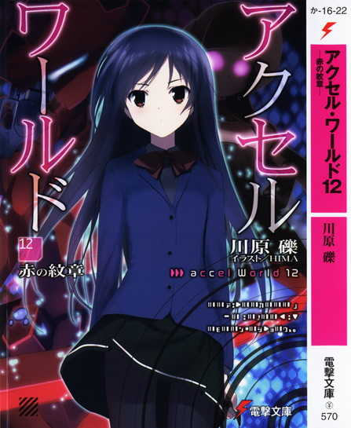
アクセル・ワールド11
─赤の紋章─
〈大天使メタトロン〉打倒のため、シルバー・クロウは新アビリティ〈理論鏡面〉獲得ミッションに励んでいた。四埜宮謡の助言もあり、ようやくその光明が見えはじめたハルユキだったが、突如現れた謎の最強〈レベル１〉アバター〈ウルフラム・サーベラス〉との交戦により、ミッション成就はいまだ果たせないままだった。
そんな状況の中、〈チョコレート装甲〉を持つ、小さな貴婦人アバター〈ショコラ・パペッター〉がハルユキの前に現れた。
彼女により、シルバー・クロウは待望のアビリティを得ることに──!?
思わずペロペロしたくなるスウィートなアバターも登場する次世代青春エンタテイメント！
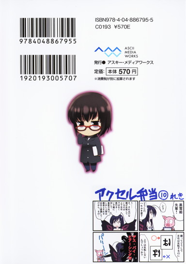
川原 礫
鏡って不思議ですよね。眺めているとニキビに気づいたり色々ネタが浮かんだり深遠なる宇宙の真理に目覚めたりできそうなんですが、いかんせん自分のツラが映るので長時間見ていられません。困ったものです。
イラスト：ＨＩＭＡ
10月３日生まれ。挿絵は今シリーズが初のイラストレーター。『電撃萌王』小冊子への寄稿を見た文庫編集者が、今回の挿絵依頼をオファーしたことがきっかけ。本業仕事の合間を縫って、ブログやＳＮＳサイトなどでイラストを発表している。
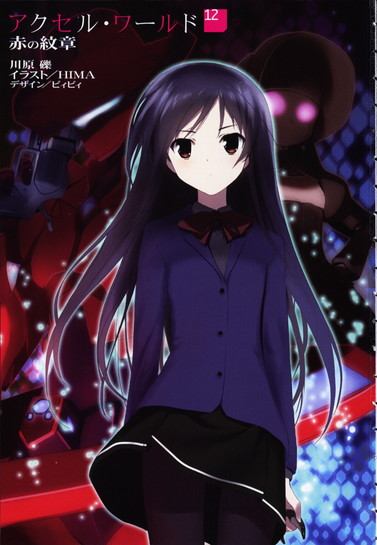
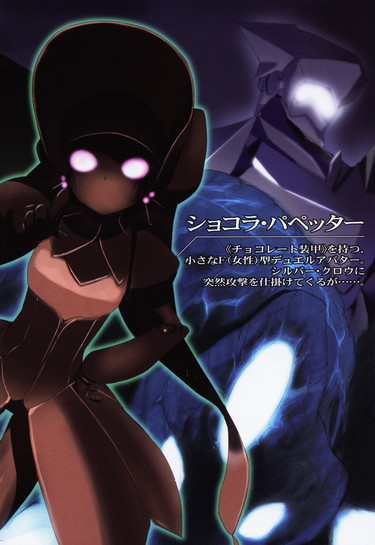
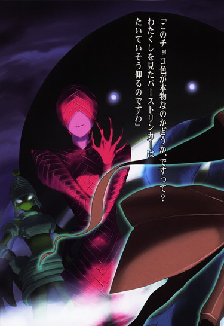
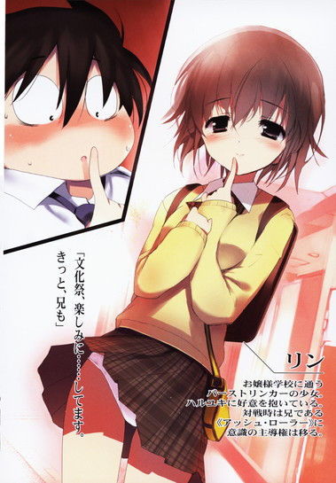
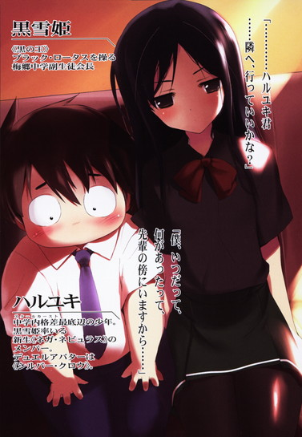
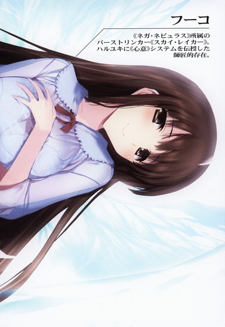
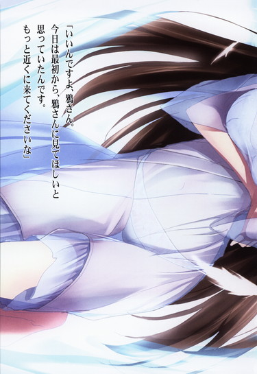
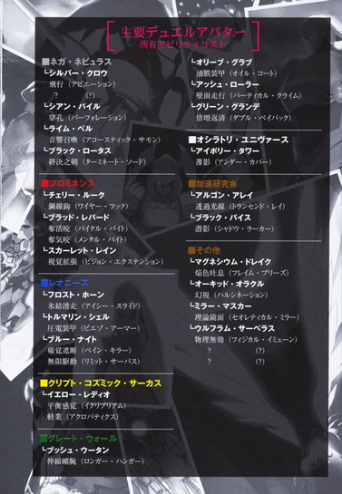
［主要デュエルアバター 所有アビリティリスト］
■ネガ・ネビュラス
└シルバー・クロウ
飛行（アビエーション）
？（？）
└シアン・パイル
穿孔（パーフォレーション）
└ライム・ベル
音響召喚（アコースティック・サモン）
└ブラック・ロータス
終決之剣（ターミネイト・ソード）
■プロミネンス
└チェリー・ルーク
鋼線鉤（ワイヤー・フック）
└ブラッド・レパード
奪活咬（バイタル・バイト）
奪気咬（メンタル・バイト）
└スカーレット・レイン
視覚拡張（ビジョン・エクステンション）
■レオニーズ
└フロスト・ホーン
氷結滑走（アイシー・スライド）
└トルマリン・シェル
圧電装甲（ピエゾ・アーマー）
└ブルー・ナイト
痛覚遮断（ペイン・キラー）
無限駆動（リミット・サーパス）
■クリプト・コズミック・サーカス
└イエロー・レディオ
平衡感覚（イクリブリアム）
軽業（アクロバティクス）
■グレート・ウォール
└ブッシュ・ウータン
伸縮剛腕（ロンガー・ハンガー）
└オリーブ・グラブ
油膜装甲（オイル・コート）
└アッシュ・ローラー
壁面走行（バーティカル・クライム）
└グリーン・グランデ
倍増返済（ダブル・ペイバック）
■オシラトリ・ユニヴァース
└アイボリー・タワー
薄影（アンダー・カバー）
■加速研究会
└アルゴン・アレイ
透過光線（トランセンド・レイ）
└ブラック・バイス
潜影（シャドウ・ラーカー）
■その他
└マグネシウム・ドレイク
焔色吐息（フレイム・ブリーズ）
└オーキド・オラクル
幻視（ハルシネーション）
└ミラー・マスカー
理論鏡面（セオレティカル・ミラー）
└ウルフラム・サーベラス
物理無効（フィジカル・イミューン）
？（？）
？（？）
アクセル・ワールド 12
─赤の紋章─
■黒雪姫（クロユキヒメ）＝梅郷中学の副生徒会長。清楚怜悧なお嬢様。その素性は謎に包まれている。学内アバターは自作プログラムの『黒揚羽蝶』。デュエルアバターは〈黒の王〉『ブラック・ロータス』（レベル９）。
■ハルユキ＝有田春雪（アリタ・ハルユキ）。梅郷中学二年生。いじめられっ子で太り気味。ゲームは得意だが、内向的。学内アバターは『ピンクのブタ』。デュエルアバターは『シルバー・クロウ』（レベル５）。
■チユリ＝倉嶋千百合（クラシマ・チユリ）。ハルユキの幼馴染。お節介焼きな元気娘。学内アバターは『銀色の猫』。デュエルアバターは『ライム・ベル』（レベル４）。
■タクム＝黛拓武（マユズミ・タクム）。ハルユキ、チユリとは幼少期からの知り合い。剣道が得意。デュエルアバターは『シアン・パイル』（レベル５）。
■フーコ＝倉崎楓子（クラサキ・フウコ）。旧〈ネガ・ネビュラス〉に所属していたバーストリンカー。〈四元素（エレメンツ）〉の一人。とある事情により隠匿生活をおくっていたが、黒雪姫とハルユキの説得により戦線に復帰する。ハルユキに〈心意〉システムを授けた。デュエルアバターは『スカイ・レイカー』（レベル８）。
■ういうい＝四埜宮謡（シノミヤ・ウタイ）。旧〈ネガ・ネビュラス〉に所属していたバーストリンカー。〈四元素（エレメンツ）〉の一人。松乃木学園初等部四年生。高度な解呪コマンド〈浄化〉を扱えるだけでなく、遠距離攻撃も得意とする。デュエルアバターは『アーダー・メイデン』（レベル７）。
■ニューロリンカー＝脳と量子無線接続し、映像や音声など、あらゆる五感をサポートする携帯端末。
■ブレイン・バースト＝黒雪姫からハルユキに転送されたニューロリンカー内のアプリケーション。
■デュエルアバター＝ブレイン・バースト内で対戦する際に操るプレイヤーの仮想体。
■軍団＝レギオン。複数のデュエルアバターで形成される、占領エリア拡大と利権確保を目的とする集団のこと。主要なレギオンは七つあり、それぞれ〈純色の七王〉がレギオンマスターを担っている。
■通常対戦フィールド＝ブレイン・バーストのノーマルバトル（１対１格闘）を行うフィールドのこと。現実さながらのスペックを持つが、システムはあくまで一昔前の格闘ゲームレベルのもの。
■無制限中立フィールド＝レベル４以上のデュエルアバターのみが許可されるハイ・プレイヤー向けのフィールド。〈通常対戦フィールド〉とは段違いのゲームシステムが構築されており、その自由度は次世代ＶＲＭＭＯにも全くひけを取らない。
■運動命令系＝アバターを制御するために扱うシステム。通常はすべてこのシステムによってアバターは操作される。
■イメージ制御系＝自身が強く想像（イメージ）することによってアバターを操作するシステム。通常の〈運動命令系〉とはメカニズムが大きく異なり、扱えるものはごく少数。〈心意〉システムの要諦。
■心意（インカーネイト）システム＝ブレイン・バースト・プログラムのイメージ制御系に干渉し、ゲームの枠を超えた現象を引き起こす技術。〈事象の上書き（オーバーライド）〉とも言う。
■加速研究会＝謎のバーストリンカー集団。〈ブレイン・バースト〉をただの対戦ゲームとしては考えておらず、何事かを企む。〈ブラック・バイス〉、〈ラスト・ジグソー〉が所属している。
■災禍の鎧＝クロム・ディザスターと呼ばれる強化外装。装着すると、対象アバターのＨＰを吸い取る〈体力吸収（ドレイン）〉や、敵の攻撃を事前に演算・回避する〈未来予測〉など強力なアビリティが使用可能となる。しかしその使用者は、クロム・ディザスターに精神を汚染され、完全に支配される。
■スターキャスター＝クロム・ディザスターが持つ大剣のこと。禍々しい形状をしているが、本来の姿は、その名の通り、星のように輝く厳かな名剣である。
■ＩＳＳキット＝ＩＳモード練習（スタディ）キットの略。ＩＳモードとは〈インカーネイト・システム・モード〉のことで、このキットを使えば、どんなデュエルアバターでも〈心意システム〉が使用可能となる。使用中は、アバターのいずれかの部位に赤い〈眼〉が張り付き、〈心意〉の象徴である〈過剰光（オーバーレイ）〉が、黒いオーラとして放出される。
■〈七の神器（セブン・アークス）〉＝〈加速世界〉に７つある、最強の強化外装群のこと。内訳は、大剣〈ジ・インパルス〉、錫杖〈ザ・テンペスト〉、大盾〈ザ・ストライフ〉、形状不明〈ザ・ルミナリー〉、直刀〈ジ・インフィニティ〉、全身鎧〈ザ・ディスティニー〉、形状不明〈ザ・フラクチュエーティング・ライト〉。
■〈心傷殻〉＝デュエルアバターの礎となる〈幼少期の傷〉、その心の傷を包む殻のこと。その殻が並外れて強固で分厚い子供が、メタルカラーのデュエルアバターを生み出すという。
１
「............やっと、俺の出番か............」
〈暴風雨〉ステージの空から激しく降り注ぐ水滴に打たれながら、ハルユキは呆然とその声を聞いた。
声の主は、すぐ目の前に横たわる、比較的小柄なデュエルアバターだ。放射状にひび割れた路面に半ば埋まり込むようにして倒れ、四肢を大の字に投げ出している。全身の装甲は、少し茶色がかったマットグレーの重金属。
ハルユキは昨日の放課後、このメタルカラー・アバターに完全なる敗北を喫した。対戦直後は悔し涙を流すほど打ちのめされたのだが、一晩でどうにか立ち直り、特訓を経て今日のリベンジマッチに挑んだ。
対戦は一度目の裏返しというべき形で推移し、相手の攻撃を受け流してそのまま地面に叩き付ける戦法で、ハルユキは相手の体力ゲージを残り一割にまで減らした。しかしそこで、不可解な現象が発生したのだ。倒れたままの対戦相手が、それまでとはまったく異なる声と口調で喋る、という。
ブレイン・バースト・プログラムが、バーストリンカーとなった少年少女たちに与える仮想の鎧〈デュエルアバター〉は、一部の女性型を除いて口や鼻の造形を持たない。
タクムの〈シアン・パイル〉や黒雪姫の〈ブラック・ロータス〉は、わずかにアイレンズの輝きが見えるだけ。ハルユキの〈シルバー・クロウ〉に至っては、顔面全体がつるりとした鏡面バイザーに覆われている。
そのデザインラインは、現在の対戦者である謎多きメタルカラー、天才新人の呼び名も高い〈ウルフラム・サーベラス〉も踏襲している。顔は狼のあぎとを思わせる金属バイザーに上下から包み込まれ、わずか数センチの隙間から内部のゴーグルが覗けるのみだ。
だから、路上の水たまりに倒れるサーベラスが呟いた言葉の発生源を、厳密にはどこと特定できない。普通なら、バイザーに隠されている口であろう、と類推する場面なのだが......しかしハルユキは、強く直感した。
喋ったのは......サーベラスの頭ではない。左肩だ。
いままでさして意識はしなかったが、そのつもりで見ると、サーベラスの左右肩アーマーの形状は頭部を包むヘルメットと酷似している。直線的なエッジラインが鋭く浮き出た、狼の頭を思わせるフォルム。その中央をジグザグに横切る、牙を模したライン。
本来の頭部のジグザグ線は、つい数秒前までは内側のゴーグルを露出させていたのに、いまや完全に閉じてしまっている。
その代わりに、左肩のラインが一センチほど開き、その奥から黒ずんだ赤い光を放っている。装甲表面を幾筋も流れる雨水がその赤色に染められ、まるで獣のあぎとから滴る鮮血のように見える。
「......お前は、誰だ......？」
ハルユキは、自分が得意技〈受け返し〉によって体力ゲージ残り一割にまで追い込んだバーストリンカーに向かって、掠れ声で訊ねた。
答えは、金属の軋みにも似た忍び笑いだった。
「フ、フフ。誰か、だって？ 散々ブチのめしておいてそりゃないぜ、クロウさん。それに、俺はあんたのこと、よぉーく知ってるのになぁ」
「知ってる、って......僕らは昨日、初めて対戦したばっかりじゃないか......」
反射的にそう応じてから、小さくかぶりを振って問い直す。
「い、いや、それより......君はほんとに、さっきまで僕と戦ってたサーベラスなのか？なんだか、まるで......まるで別人みたいに......」
「フフフ、そりゃそうだ。俺たちは、最初からそういうふうに生まれたんだからな。〈サーベラス〉って単語の意味、もう知ってるんだろ？」
左肩アーマーが、赤い光を明滅させながら発した台詞に、ハルユキは鋭く息を呑んだ。
脳裏に、昨日の夜、ウルフラム・サーベラスＶＳフロスト・ホーン戦を観戦した時の記憶が甦る。恐るべきスピードと装甲強度で、レベルが４も上のホーンを追い詰めていくサーベラスにハルユキが眼を瞠っていると、居合わせた青のレギオンの大幹部たるマンガン・ブレードが教えてくれたのだ。
ウルフラムとは、最高の硬度を持つ重金属タングステン。
そしてサーベラスは、ギリシャ神話に出てくる怪物ケルベロスのことだと。
幼い頃からフルダイブ型のファンタジーＲＰＧを山ほどプレイしてきたハルユキにはお馴染みのモンスターだ。地獄の番犬といわれる、三つの頭を持つ巨大な犬。
──三つの、頭。
そこまで考えが至った瞬間、ハルユキはようやく気付いた。
サーベラスの肩アーマーは、頭に似ているんじゃない。
頭なのだ。いったいどんなロジックがそんな現象を引き起こしているのかは想像もできないが、ともかく事実として、ウルフラム・サーベラスというデュエルアバターは最初から三つの頭を持っている。だから〈ケルベロス〉の名を冠して生まれたのだ。
恐らく、つい数分前までハルユキと対戦していた爽やかで礼儀正しい少年は、サーベラスの第一人格とでも呼ぶべき存在なのだろう。そして、いまハルユキと会話している崩れた口調の誰かが、第二の人格。
「............ケルベロス............」
無意識のうちに漏れた呟きに、サーベラスの左肩改め二つ目の頭は、三たび笑った。
「ククク、正解だ、クロウさん。そこに気付くのはちょっと遅かったけど、でも技のほうは褒めてやるよ。何せ、対戦中に俺を引っ張り出したのはあんたが初めてだからな。嬉しいぜ......これでやっと、俺も戦える」
その言葉を聞き、ハルユキはようやく思い出す。ここが中野第二戦域、つまり対戦ステージであること。そしてシルバー・クロウとウルフラム・サーベラスは、多くのギャラリーを集めたバトルの真っ最中であることを。
「............お前にいろいろ秘密があることは解った。でも......今は、そんなことどうでもいいんだ」
ハルユキは、体の中から驚愕を追い払うべく毅然と言った。
「戦場にダイブしたならば、あとはひたすら対戦あるのみ。お喋りの続きは、また今度、ギャラリー同士の時にでもやろう」
ちらりと視界上部の体力ゲージを確認する。クロウのほうはほとんどノーダメージに近いが、サーベラスは〈受け返し〉からの投げで何度も路面に叩き付けられ、真っ赤なゲージがわずかに残るのみだ。
そして、体力の下に表示される必殺技ゲージのほうは、もはや完全に尽きている。ということは、サーベラスの恐るべき高性能アビリティ、〈物理無効〉の効果時間はすでに終了しているはず。この状態なら、装甲の隙間部分を狙えばダメージを与えられることは、昨日の対戦で確認済みだ。
いまだ路上に倒れたままのサーベラスを見下ろし、ハルユキは言った。
「立つ気がないなら、このまま終わりにさせてもらう」
右手の五指を剣のように鋭く伸ばし、肩の上に構える。攻撃モーションを見ても、サーベラスは動かない。「やっと戦える」と言いながら、すでに勝負を投げてしまったかのようだ。
あるいは、この対戦が終わってから改めて乱入してくるつもりか。それならそれで、堂々と迎え撃つまでだ。ブレイン・バーストには〈同じ相手への挑戦は一日一回〉という基本ルールが存在する。〈同じ相手との対戦は〉ではないのは、敗者が即座にリベンジマッチする権利を認めているからだ。
「............シッ!!」
鋭い気合とともに、ハルユキは倒れるサーベラスの喉許めがけ、全速の貫手を突き下ろした。
降りしきる雨粒をも追い抜くスピードで銀色の光が走った、その瞬間。
サーベラスの左肩、いままで一センチの幅を保っていたギザギザのラインが──がばっ、と大きく開いた。〈眼〉だと思われたそのラインが、実は〈口〉だったことを、ハルユキは驚愕とともに理解した。上下に開いた金属パーツの内部は暗闇を満たしたがらんどうで、そのずっと奥から、クリムゾンの光が炎のように迸る。
光は雨粒を染めながら拡散し、垂直突きの軌道上にあったハルユキの貫手に触れた。
「くうっ............！」
ハルユキは思わず声を漏らした。ダメージを受けたのでも、弾かれたのでもない。右手が、有無を言わせぬ力でサーベラスの左肩に吸い寄せられたからだ。攻撃の照準が、首許の無装甲部分から、大きく開いた肩アーマーへと逸らされる。
──なら、そこを撃ち抜くだけだ！
無音で叫び、ハルユキはアーマー内部の赤く光る闇を全力で貫こうとした。
しかし──。
手応えがない。指先から手首、肘近くまでが没入しても、ハルユキの右腕には一切の反動が伝わってこない。そんなはずはない、サーベラスの肩アーマーの大きさは頭部とまったく同じで、縦の長さはせいぜい二十センチだ。ということは、肘までも突き込めば、指先はとっくに奥の装甲をぶち抜いて外に出ていなければならないのに。
この上なく〈嫌な感じ〉が、ハルユキの右腕から肩を通って背骨までを冷たく貫いた。
なおも突き進もうとする右腕を、全力で引き戻す。突きが停止し、〈口〉を満たす暗闇から抜け出しかけた、その寸前。
牙が、閉じた。
ガキュン！ と異様な金属音がステージに響き渡る。中野通り両側のビル屋上から成り行きを見守っていたギャラリーたちが、激しい雨音を圧するボリュームでどよめく。
しかし、ハルユキには彼らの声──そこに混じるライム・ベルの悲鳴すらも意識できなかった。焼けるような痛みが、右前腕部から脳の中央までを貫いたからだ。通常対戦フィールドの被ダメージ痛覚は無制限フィールドの半分程度に抑えられているが、それでもヘルメットの下で低い呻き声を漏らしてしまう。
「ぐっ............！」
息を詰めながら見開いた眼の先では、サーベラス左肩装甲の鋭く尖ったエッジが、ハルユキの右腕に上下からがっぷりと喰らいついている。
牙部分はクロウの金属装甲を二センチ以上も貫通し、さらにギリ、ギリと嫌な音を立てながら沈み込もうとする。その動きに同期して、ハルユキの体力ゲージも着実な勢いで削り取られていく。
ウルフラム・サーベラスの装甲色である〈タングステン〉は、全メタルカラーの中でも最大の硬度を持つ。これまでは、その硬さはほぼ防御にのみ利用されていたのだが、現実世界ではタングステンの主たる利用目的は工具......それも切削用のドリルやブレードなのだ。つまり、こういう使い方をした時こそ、タングステンはその真価を発揮する──。
このままでは装甲が持たない。そう判断したハルユキは、激痛に耐えつつ左拳を固めた。
サーベラスの左肩付け根に露出するダークグレーの素体部を狙って、ショートパンチを繰り出す。敵の体力ゲージは一割以下、三回ヒットさせれば削り切れるはず。そう判断したのだが、初撃が命中するより一瞬早く、サーベラスの右腕が動いて喉許の脆弱部を覆い隠した。構わずその上から拳を叩き付けるが、前腕の強固なタングステン装甲に阻まれ、ほとんどダメージを与えられない。
このリベンジマッチでハルユキがサーベラスを一方的に追い込めたのは、相手の打撃を受け流して地面に叩き付けるという、広義の投げ技が〈物理無効〉アビリティを無効化したからだ。ならばダウン状態のサーベラスを投げにいけばいいように思えるが、片腕をがっちりと咥えられていてはそれも難しい。無理やり持ち上げると右腕の傷を広げ、逆にダメージを喰らう怖れすらある。
──どうする。どうする!!
左手で効果の薄いパンチを空しく繰り出しながら、ハルユキは懸命に考えた。
去年の秋にバーストリンカーとなってからはや八ヶ月以上が経つが、金属装甲をも穿つ威力の噛み付き攻撃を喰らうのは初めてだ。しかし、初見だからといって手も足も出ないようでは、レベル６や７といったハイランカーの世界では到底戦い抜けない。どんな攻撃にも、必ず対処法はあるはずだ。右腕を完全にホールドされ、左手での攻撃もガードされてしまうこの状況でも、何か逆転の秘策が............
────ハルユキ君。
その時、頭のずっと奥から、声が聞こえた。
────シンプルな打撃技に対しては、キミの〈柔法〉は有効な武器となるだろう。だが、それだけで勝てると思ってはいけない。相手は同じ攻撃パターンを繰り返すだけのエネミーではなく、知恵と勇気をそなえたバーストリンカーなのだからな。打撃が跳ね返されると知れば、即座に対応してくるはずだ。たとえば投げ技、ホールド技、そして飛び道具でな......。
声の主は、もちろんハルユキの〈親〉、黒の王ブラック・ロータスこと黒雪姫だ。しかし、この戦場に彼女がダイブしているわけではないし、いたとしてもこんな囁き声は豪雨に阻まれて届かない。これはハルユキの記憶だ。剣の主から授けられた教えを......できうるならばあの人の言葉全てを刻み込むべく、魂のいちばん深いところに永久保存しているアーカイブから甦ってきた声。
──それらの技の中では、地味なように思えるだろうが、実はホールド技がもっとも対応が難しい。技のロジックが多種多様にわたるからだ。単純な物理拘束の他にも、電撃や磁力、真空、粘液と多くの移動阻害攻撃が存在し、それら全てに初見で適切に対応するのはベテランのバーストリンカーでも難しい。
──しかし、ハルユキ君。加速世界でキミだけは、ホールド技の半分以上に有効と思われる対応法を持っている。黄のレギオンの磁石アバターに吸い付けられた時のことを思い出すんだ。ホールドが、地形固定タイプではなく、敵自身に固定するタイプだったら......とにかく飛べ！相手をくっつけたまま飛んで、落下ダメージだけで確殺となる高度まで到達できれば、少なくとも負けはない。最大の破壊不能オブジェクトである〈地面〉に激突して無傷でいられる者は、私の知る限りほとんどいないからな......。
「..................!!」
師の言葉は、実際にはコンマ一秒以下の閃光としてハルユキの中で再生された。
その光が神経系の末端にまで届いた瞬間、ハルユキは行動に移っていた。
これまでの無為なパンチと同じモーションで、左拳を振りかぶる。サーベラス第二人格......いわば〈サーベラスⅡ〉とでも呼ぶべき相手は、右腕で喉許の脆弱部をガードし続けている。構わず振り下ろした拳を途中で開き、相手の右手首をがっちりと掴む。
「う......おッ！」
吼えながら、ハルユキは思いきり上体を起こした。必殺技ゲージは、ここまでの攻防でほぼフルチャージされている。その青い輝きを、余さず背中の金属フィンたちに叩き込む。
がしゃっ！ と音を立てて銀翼が展開。高速振動するブレードフィンが、雨粒を触れるそばから粉砕し、細かな霧に変える。
「がるっ......」
〈口〉でクロウの右腕を咥えているために喋れないらしいサーベラスⅡが、獣のように唸る。だが、噛み付きを解除するという判断はできなかったようだ。どうやらⅡは、最初の礼儀正しい少年......〈サーベラスⅠ〉が持つ天才的な対戦勘までは受け継いでいないらしい。
飛翔エネルギーを充分に蓄積したところで、ハルユキは頭上の黒雲を睨むと──一気に地面を蹴った。
敵の右手首を掴む左腕と、ホールドされた右腕が伸びきったところで、がくんと強烈なショックが来る。比重の大きいタングステンだけあって、小柄なわりにはかなり重いが、クロウの推進力で持ち上げられないほどではない。
「おおっ......！」
もう一度気合を発し、翼を全力で振動させると、路面の窪みにはまり込んでいたサーベラスの体が引き剥がされた。そのまま、豪雨を切り裂きながら急上昇。十年ほど前に再開発され、高層建築に生まれ変わった中野サンプラザビルをさかのぼるように全力飛行すると、大判の窓ガラスが衝撃波を受けて次々に砕け散る。
高さ百八十メートルのビルを飛び越え、更に五十メートル上昇したところで、ハルユキはホバリングに移行した。サーベラスの残りわずかな体力ゲージは、この高度から落下すれば確実に消し飛ぶ。
戦場自動追随モードになっているギャラリーたちが、サンプラザビルの屋上に出現するのを視界の端に捉えながら、ハルユキは左手を離した。サーベラスⅡの体ががくんと傾き、今やその全重量を空中に留めるのは、噛み付かれたままの右腕だけだ。
「交替する前の君は、僕の飛行を初見で封じたぞ。アバターの中身が変わったのは驚いたけど、前より強くなったとは言えないみたいだな」
「............グル......」
ハルユキが言うと、腕を咥えたままのサーベラスの左肩がもう一度低く唸る。万力のような締め付けが停止し、いまは上下の牙の間隙が固定されているので、痛みも耐えられないほどではない。
サーベラスとしては、口の中の（正確には左肩の中と言うべきだが）右腕を噛みちぎるわけにはいかないのだ。それをした瞬間、彼は高度二百三十メートルからひとたまりもなく落下してしまう。地面ではなく高い建物の上に、しかも〈物理無効〉状態で墜落すれば、地形オブジェクトがクッションになって残りゲージ一割でも生き残れるかもしれないが、どうやらいま主導権を取っているサーベラスⅡに物理無効アビリティはないようだ。
肩アーマーに宿る第二の人格が喋り始めるという現象と、タングステンの牙による噛み付き攻撃の威力には大いに戦慄させられたが、ハルユキが言葉にしたとおり、冷静に判断すればこのⅡよりも交替する前のⅠのほうが厄介だったと言うべきだろう。シルバー・クロウにとってサーベラスⅠは相性最悪の敵だったが、ホールド技である噛み付きを主武器とするサーベラスⅡにとっては、逆にクロウが天敵なのだ。噛んだ瞬間に離陸され、高高度まで持ち上げられてしまえば、あとはもう良くて相打ちしか狙えない。
ようやくそこまでの分析を終え、少し余裕を取り戻したハルユキは、右腕の先にぶら下がったまま動こうとしないサーベラスに向けて再度口を開いた。
「......君の〈親〉は、誰なんだ？」
素直に答えてくれるとも思えないが、しかし訊かずにいられなかったのだ。
今日の昼休み、対サーベラス戦の特訓を施してくれた黒雪姫と楓子は、耳慣れない──そして恐ろしい言葉を二つ、ハルユキに告げた。
一つは、〈心傷殻理論〉。
加速世界の黎明期、〈四眼の分析者〉ことアルゴン・アレイが提唱した、メタルカラー・アバターの誕生メカニズムだ。
そしてもう一つは、〈人造メタルカラー計画〉。
心傷殻理論を推し進め、意図的にメタルカラーを生み出そうという計画、らしい。こちらは実行されたのかどうかも定かでない。しかし黒雪姫たちは、サーベラスの突然すぎる出現と、レベル１とは思えない恐るべき戦闘力に、偶然以外の何らかの......何者かの意図が働いているのではないかと考えていたようだ。
キミが戦って、見極めろ。黒雪姫はハルユキにそう言った。
サーベラスの特異性を新たに一つ引き出しはしたが、確信を得るには至っていない。ゆえにハルユキは、彼に親の名前を訊ねた。
しかし、やはり、言葉による回答はなかった。
代わりに、謎多きメタルカラーは、ハルユキの右腕を咥え込むタングステンの牙に──これまでに数倍する圧力を発生させた。
「ぐっ......！」
再びの激痛にハルユキが呻いた、その直後。じゃぎっ！と嫌なサウンドを振り撒きながら、サーベラスの左肩が完全に閉じた。シルバー・クロウの右腕は肘の少し先で切断され、真紅のダメージエフェクトが周囲の雨粒を鮮血の色に染めた。
部位欠損ダメージを課せられ、左上の体力ゲージが大きく減少する。しかしこれで、対戦はハルユキの勝ちだ。サーベラスⅡは、宙吊りにされたまま質問を浴びせられるよりも、自ら落下して戦いに幕を引くことを選んだのだ。
相手の覚悟を最後まで見届けようと、ゲージから下方に視線を移した──
「────ッ!?」
その途端、ハルユキは驚愕のあまり息を詰めた。
サーベラスが、落下しない。
正確には、クロウの腕を噛みちぎった瞬間に二メートルほど高度を下げたようだが、なぜかそれ以上落ちずに空の一点に静止している。知らない間に極細の糸か何かをフックされたのかと考えたが、それならサーベラスはハルユキの真下にいなければならない。しかしホバリングする敵の位置は、少なくとも一メートル以上前方にずれている。
呆然と見開いた眼には、敵が落下しない理由は何も捉えられないが──代わりに、聴覚が不快な音をキャッチした。
がり、ごき、ごり......という、何か硬いものが、より硬質なものに無理やり粉砕される音。よくよく見れば、サーベラスの左肩アーマーが、上下の装甲をわずかに動かしている。音源はあそこだ。つまり、咀嚼しているのだ。食いちぎった、シルバー・クロウの右腕を。
怖気をふるうような音は、ほんの数秒で止まった。
次なる現象は、いっそう戦慄すべきものだった。
ウルフラム・サーベラスの背中から、左右十枚の薄く鋭い突起──翼が、ゆっくりと伸び始めたのだ。形は、シルバー・クロウの銀翼と同一。しかし色はほとんど透明で、その向こうに中野駅周辺の街並みがぼんやり視認できる。ガラス的な素材というよりも、実体を持っていないらしい。なぜなら、降りしきる豪雨をまったく弾かないのだ。
しかし、幻であっても揚力はきちんと生み出すと見え、透明な翼が振動すると同時にサーベラスの体がふわりと浮き上がった。ハルユキと同じ高さまで上昇し、再度ホバリング。それを追いかけるように、五十メートル下の中野サンプラザビル屋上に陣取るギャラリーたちの驚声が届く。
「お......落ちない！ 浮いてるぞ！」
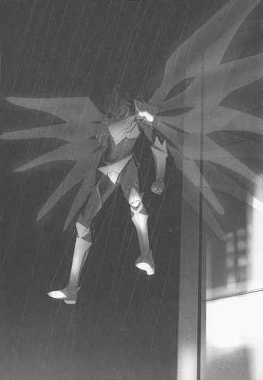
「まさか、サーベラスも完全飛行型......!?」
「ウソでしょ、物理無効なうえにそんな力まであるの!?」
それらの叫び声は、八ヶ月前、杉並エリアでハルユキが初めて飛行した時に聞いたものと、とてもよく似ていた。何を言うこともできずに固まるハルユキに、サーベラスは短い言葉を投げかけた。
「安心しろ、俺の力は〈強奪〉じゃない。あいつと違ってな」
その台詞には重要な情報が含まれていたのだが、それを意識することもできず、ハルユキは鸚鵡返しに呟いた。
「強奪......じゃない......？」
「ああ。〈複製〉だよ。......もっとも、仮に〈強奪〉だったところで、あんたにどうこう言われる筋合いはないとも思うけどな。何せあんたは、俺から大事なものを奪ったんだからさ」
「............僕が、お前から何を奪ったって言うんだ？」
ようやく思考能力が七割ほど回復し、掠れ声で問いただす。答えは、またしても予想外のものだった。
「さっきの、『親が誰か』っていう質問には答えられないけど、そっちには答えてやるよ。あんたが奪ったのは、俺の〈存在目的〉とでも言えばいいかな」
「存在......目的......」
「そうさ。俺は、本来のポテンシャルを半分以上封印されてる。持ってる力は、さっき使った〈能力捕食〉いっこだけ。なぜなら俺は、とある目的のためにチューニングされた存在なんだよ」
「チューニング......？ その目的って......何なんだ？」
「簡単さ。あんたがどっかに封印しちまったアレを装備すること。......っと、これ以上はやっぱり叱られちまうか。それに、どうやら時間切れだ。喰ったのが片腕の半分ぽっちだしな......」
サーベラスがそこまで言うと同時に、背中の翼がいっそう透けはじめた。雨に溶けるように形を失い、朧な空間の歪みとなり、ふっと消える。
ぐらり、と灰色のアバターが傾いた。自由落下が始まる寸前、最後の言葉が静かに投げかけられた。
「また会おうぜ、シルバー・クロウ。今日は俺もこれで切り上げるよ。......それと、〈一番〉からひとつ伝言だ。『あなたとの対戦は楽しかった。それは僕の本心です』......だとさ」
そして、幾多の謎を秘めた超硬のメタルカラー、ウルフラム・サーベラスは、大粒の雨に包まれて地上へと落ちていった。数秒後、重々しい衝撃音が轟き、右上の体力ゲージがゼロになった。
【ＹＯＵ ＷＩＮ!!】の炎文字が視界中央で燃え上がり、リザルト画面が表示されても、ハルユキは空中に留まったまま動けなかった。耳の奥では、少し前にサーベラスが発した言葉の一部がオートリピートで再生され続けている。
──あんたがどっかに封印しちまったアレ。
封印しちまった......アレ。
その指示語が意味するものを、ハルユキはこの上なく明瞭に直感していた。しかし、頭の中でさえ具象化することは大いに躊躇われた。
対戦が終了すると同時にステージの豪雨は小降りとなり、中野サンプラザビルの屋上からはギャラリーたちが拍手と歓声──少々途惑いの声混じりではあったにせよ──を送ってくるが、それすらもしばらく意識できなかった。
２
加速が解除され、青梅街道を東に走るＥＶバスの後部座席に戻っても、ハルユキはしばらく自分の右手をただ見つめていた。リベンジには成功したのだが、勝利の爽快感などどこかに吹き飛んでしまっている。
と、不意に右側から人差し指が伸び、ハルユキのニューロリンカー側面のグローバルネット切断ボタンを長押しした。視界にコネクション喪失のダイアログ窓が浮かび、消えると、その向こうにあったのは眉を吊り上げたチユリの顔だった。
「ちょっとハル、何ぼーっとしてるのよ。ここ、中野なのよ？対戦終わったらすぐ切らないと、そっこー乱入されちゃうじゃないの」
「あ、ああ......悪い、あんがと......」
ハルユキが礼を言うと、幼馴染は両眉の角度を変化させ、軽く首を傾げる。
「......何なのよ、いったい。勝ったってのに、ナスの浅漬け食べたみたいな顔しちゃって」
続けて、チユリの向こうからもう一人の幼馴染──タクムが顔を出し、ひそひそ声で言った。
「あいつを残り一割まで追い込んでから、かなり予想外の展開になったみたいだけど......そのせいかい、ハル？」
更に、ハルユキの左に座る四埜宮謡が、空中でちこちことホロキーボードを叩く。
【ＵＩ＞ 私には、途中で対戦相手が入れ替わったように見えたのです。システム的に、そんなことは有り得ないのですが......】
視界下部のアドホック・チャット窓に表示された桜色の文字列をじっと見つめ、ハルユキは深く頷くと、バス最後部の仲間たちにだけ聞こえるボリュームで呟いた。
「四埜宮さんの言うとおり......のことが起きた、気がするんだ。サーベラスも今日は帰るって言ってたし、詳しいことは杉並に戻ってから話すよ。まずは、バスを乗り換えよう」
次のバス停で降り、近くの信号で道路を渡って、数分後にやってきた反対方向のバスに乗る。ほんの数分でバスは中野と杉並の境界線を通過し、四人は再びニューロリンカーをグローバル接続させると、高円寺陸橋の交差点で降車した。雨はまだ降り続いているので、それぞれの傘を開く。
「......で、どうするの？ ハルんちまで行く？」
チユリの問いかけに、ハルユキはしばし考えた。ブレイン・バーストに関わる話をするならいつもの有田家リビングルームが最も安全なのは間違いないが、中央線高架を潜った先にあるマンションは、謡の家とは方向が正反対だ。この雨の中、小学四年生に往復二キロを歩かせるのはしのびない。いくら彼女が可愛らしい真っ赤な長靴を履いているとしてもだ。
「うーんと、このへんでどっか話せる場所があれば......」
そこまで言いかけたところで、チユリがにまっと笑って割り込んだ。
「それなら、〈えんじ屋〉で決まりね。あそこの座敷ならそこそこ安全だし、ハルはあたしとタッくんにおごってくれる約束があるし」
「げぇ、えんじ屋でオゴリは国家財政的に問題が......」
「あはは、じょーだんじょーだん！ ちょっと待ってて、確認するから」
ひとしきり笑うと、チユリは仮想デスクトップに指を走らせる。店のネットにアクセスし、リアルタイムの客席情報を取得しているのだ。
「お、らっきー、奥の座敷が空いてる。予約しちゃうよ」
彼女にだけ見えるボタンを押し、ウインドウを消去したチユリは、後ろにぴょんとひと跳びしながら叫んだ。
「早く早く！ あそこのクイック予約、五分でキャンセルされちゃうんだから！」
〈えんじ屋〉は、青梅街道から少し北に入ったところに小体な店舗を構える甘味処である。ノレンが臙脂色なので店の名前はその意味かと思いきや、実は〈高円寺〉を略しただけ──ということを知っているのは、昔から通う常連だけだ。
店は三十代もしくは四十代あるいは五十代......つまり年齢不詳の男性店主と、恐らく二十代であろうお姉さんが二人で切り盛りしている。あんみつや豆かんといった伝統的な甘味が揃う一方、十種類以上のジェラートやワッフル、自家製のチーズケーキから巨大なパフェまでもがメニューに並んでいるので、本格的なのか無節操なのか判断に迷うところだ。去年の秋、タクムとハルユキが〈バックドア・プログラム事件〉のことを謝りにいった折、チユリにこの店のパフェ食べ放題という講和条件を突き付けられ二人の財政が破綻しかけたのは、切なくも懐かしい記憶である。
しかし、当人はそんなこととっくに忘れているのか──または忘れたことにしてくれているのか、店の奥にある畳敷きの座敷席に腰を下ろした途端、ホロメニューをろくに見もせず屈託ない声で叫んだ。
「えーっと、あたし、白玉入りきなこパフェにこしあんトッピング！」
「晩飯前にそんなの食べて平気なのかよ......」
ハルユキが思わず突っ込むと、ふふんと笑って言い返してくる。
「運動部ナメてもらっちゃ困るわね。ハルとは基礎代謝が違うのよ」
「す、すんませんでした......ええとオレ、生チョコジェラートにナッツがけ」
「ハルは昔っから、ここに来るとそればっかりだなぁ。ぼくは......豆かんにしよう」
今度はタクムに苦笑され、「いいだろ、好きなんだから」とそっぽを向くと、にこにこ笑いながら三人のやりとりを聞いていた謡と眼が合った。座布団の上で正座する彼女の、ぴんと伸びた背筋を見た途端、昨日の記憶が脳裏にフラッシュする。
委員会活動の終了後に招かれた四埜宮家で、同じように正座した謡から、ハルユキは聞かされたのだ。謡が生きてきた能楽の世界と、彼女の兄にして〈親〉でもあるバーストリンカー、〈ミラー・マスカー〉の悲しい運命を......。
一瞬の表情からハルユキの思考を察知したのか、謡は笑みを大きくすると素早くタイプした。
【ＵＩ＞ 私、こちらのお店は初めてなのです。おすすめのメニューは何ですか？】
チャット窓に表示された文章を見たハルユキは、質問の内容よりも、謡の小学四年生らしからぬ落ち着きっぷりのほうを気にしてしまった。
よくよく考えてみれば、お嬢様学校の松乃木学園初等部は、下校中の生徒だけでの飲食を禁じていると思われる。なのに謡が初めての店でこうも落ち着き払っている理由は、この年齢にして、ひとりの食事や買い物に慣れているからだろう。
昨日初めて知った謡の家庭環境が再び脳裏に甦りかけるが、いまはそれを押し戻し、ハルユキは笑顔で答えた。
「えっと......初めてなら、やっぱりあんみつかな？」
その言葉をすぐにチユリが追認する。
「甘味屋さんはあんみつが基本よね！」
【ＵＩ＞ 基本は大切ですね。では、このフルーツあんみつにするのです】
謡がホロメニューを小さな指でタッチし、続けて注文完了ボタンを押すと、和服姿のお姉さんが丸盆にお冷やとおしぼりを載せて現れた。五年以上通っているハルユキたちと気さくに挨拶し、初めての謡には丁寧にいらっしゃいませを言うと、厨房に戻っていく。
界隈の学生たちは、和ものメニューは店主が、洋ものはお姉さんが作っているとも、その逆だとも噂しているが、真偽はいまだ定かでない。厨房の奥にロボット・パティシエを見たとか、この店の甘味は全てニューロリンカー経由の欺瞞情報だなどという噂もあるが、さすがにそれは冗談だろう。
確かなのは、臙脂色の着物に純白の前掛けというお姉さんの制服も、そして二十代と思しき外見も、昔から一切変わっていないということだけだ。
注文を済ませ、揃って水を一口飲んだところで、三人の視線がハルユキに集まった。
「......で、ハル、いったい何がどうしてどうなったのよ？」
店内には、カウンターに年配客が二人、入り口近くのテーブル席に主婦らしき客が三人いるだけだ。年齢的にバーストリンカーでは有り得ないが、念のためにボリュームを落とした声でチユリに問われ、ハルユキは先の対戦を回想しつつ口を開いた。
「ええと......あいつの体力ゲージを九割削ったとこまでは、みんなが観てたとおりだ。でも......あいつがダウンして、少しした時......本来の頭のバイザーが閉じて、代わりに左肩の装甲板が開いたんだ。それで......信じられないかもしれないけど、その左肩が喋ったんだよ。『やっと俺の出番か』ってさ......」
続く五分でどうにか事のあらましを説明し終えた時、タイミングよく注文の品々が届いた。座卓にお皿を並べたお姉さんが、ごゆっくりと言って下がるやいなや、四人はスプーンに手を伸ばす。
白玉とクリーム、あんこを奇跡のバランスで同時にすくい、あんぐりと頬張ったチユリは、至福の表情を五秒ほど持続させてから改めてしかめっ面を作った。
「ん、んん～～......なんだか、聞けば聞くほどトンデモナイ話ね。〈人格が極端に切り替わる〉くらいなら、ニコちゃんっていう先例があるけどさ......」
「ニコの〈天使モード〉はどう考えても演技だろ」
ハルユキは、生チョコがたっぷり練り込まれたジェラートを味わいつつ苦笑いする。
「サーベラスの切り替わりっぷりは、とても演技ってレベルじゃなかったよ。それに、あいつの言い方だと、三人いるからサーベラス......つまり〈ケルベロス〉って名前を持って生まれた......みたいな感じだったな。実際、左肩になったら、使うアビリティも変わったし......」
「じゃあ、最初にハルと戦ったサーベラスⅠ、左肩のサーベラスⅡの他に、Ⅲもいるってことかい？」
塗り物の匙で豆かんをすくいながらタクムが発した問いに、少し考え、頷く。
「素直に考えれば、右肩がサーベラスⅢ、なんだろうな。Ⅰが〈僕〉、Ⅱが〈俺〉ときて、Ⅲの一人称が何なのかは想像もつかないけど」
「あたし、〈儂〉に一票」
「お、おじいさんキャラかよ。戦いにくそうだなぁ......」
「だとすると、きっとアビリティは〈酔拳〉だね。格ゲーの伝統にのっとって」
三人がやや脱線気味な会話を繰り広げていると、いままで真剣な表情でフルーツあんみつを味わっていた謡が、行儀良く匙を置いてからホロキーボードをタイプした。
【ＵＩ＞ 確かに、一つのデュエルアバターに三つの人格というお話も驚くべきものですが、私にはもっと気になることがあるのです】
ハルユキたちの顔に、大きな瞳を順に向けつつ続ける。
【ＵＩ＞ それは、サーベラスさんが、〈クーさんによって封印された何か〉に言及したということです。その言葉に当てはまる存在は、たった一つしかない......と思うのです】
「............うん。僕もそう思う............」
右手に握ったアンティークっぽいスプーンの、少し黒みがかった銀色を見やりながらハルユキは呟いた。
「............〈災禍の鎧〉......〈ザ・ディザスター〉。サーベラスⅡの言葉が本当なら、あいつは、あの鎧を装備するために生まれた存在だ、ってことになる」
「もしそれが現実になっていたらと考えるとぞっとするね......。ただでさえ硬いタングステン装甲に、鎧のマルチな防御力が備わったら、物理無効どころの騒ぎじゃないよ」
「ハルとういちゃんががんばって鎧を浄化してくれて、ギガＧＪだよね」
アッシュ語とレパード語が混ざったチユリの台詞に、残り三人は思わず笑ってしまう。
東京ミッドタウン・タワーを守護する神獣級エネミー・大天使メタトロンを攻略するキーとなる〈理論鏡面〉アビリティの習得もさっぱり進まないなか、事態は混迷する一方だが、それでも深刻にならずに済んでいるのは、レギオンの仲間がいつもそばにいてくれるからだ......とハルユキは内心で感謝した。
しかしすぐに、それだけじゃないかもな、と考える。
謎めいた強敵に、飛行アビリティを短時間とは言え複製された──というこの状況は、約三ヶ月前に〈略奪者〉ダスク・テイカーが出現した時とよく似ている。だが、当時ハルユキを押し潰しかけた、息もできないような重圧は感じない。その理由は、きっと......。
「............サーベラスは、中身が切り替わったり、〈鎧〉のことを知ってたり、警戒するべき相手なのは確かだと思う。でも......オレ、何て言うか......嫌いじゃないんだ、あいつのこと。Ⅰも......多分、Ⅱのほうも」
ハルユキがそう呟くと、チユリがぱちくりと瞬きして言った。
「片腕カジられたのに？ なんかすっごい痛そうだったよ？」
「そりゃ痛かったけどさ、でもあれは......あいつの真っ当な能力なんだ。ダスク・テイカーやラスト・ジグソーみたいに、ＢＩＣでインチキしてるわけじゃない。昨日あいつにこてんぱんにやられた時は泣くほど悔しかったけど......でも、憎いとは思わなかったよ。今日オレに負けたサーベラスも、きっと同じだと思う。だってあいつ、最後に『楽しかった』って言ったんだ」
懸命に言葉を探しつつ喋っているうちに、生チョコジェラートがかなり柔らかくなってしまったので、慌ててスプーンで残りを全部かき集めていると──。
右隣に座っていたチユリが、いきなりハルユキの背中をばしーんと叩いた。
「ぶほ！ な、何するんだよ、アーモンドひとカケ飛んでったじゃないか！」
「褒めてあげてんだからセコいこと言わないの！」
「せ、背中ぶったたくのが褒めてることには普通ならないような......」
「ならグーでいっとく？」
「や、やめて！」
二人のやり取りを聞いていたタクムと謡が、そこで同時に吹き出す。すぐにチユリと、ハルユキもそれに同調し、えんじ屋の奥座敷は和やかな笑いに包まれる。
──ウルフラム・サーベラスには、きっとまだまだ秘密がある。あいつが、先輩の言っていた〈人造メタルカラー〉なのかどうかも、今は判断できない。
──でも、戦い続けていれば。互いのありったけをぶつけ合う対戦を何度も繰り返せば、どんな企みもいつか焼き尽くせる。だって僕たちは、何よりもまずバーストリンカーなんだから。
胸中のそんな思いを、ハルユキはジェラートの最後の一口ぶんと一緒に噛み締めた。ほろ苦い後味が消えると同時に、三人に向けて宣言する。
「少なくとも今週いっぱいはメタトロン攻略作戦のほうは動かないみたいだし、オレ、明日の放課後も、中野第二エリアに行くよ。乱入するにせよされるにせよ、またサーベラスと戦う。次は今日みたいには勝てないだろうけどさ......でも、負けてもいいんだ。勝ったり負けたりするのが〈対戦〉なんだからさ」
すると、タクムとチユリは微笑みながら頷いてくれたが、謡だけは少し心配そうな顔になり、卓上で指を動かした。
【ＵＩ＞ 有田さんの心意気には感じ入りますが......でも、大丈夫なのですか？レベル差を考えると、勝ちと負けが同じ数では、ポイント収支がたいへんなことになってしまうのです】
「ウッ」
言われてみればそのとおりだ。ブレイン・バーストの基本ルールがごそっと頭から抜けていたことに気付き固まるハルユキの背中を、チユリがもう一度、ポンと叩いた。
「......エネミー狩りでポイント補填する時は言ってね。ヒマと元気があったら付き合ったげるからさ」
「ぼくも、剣道部の練習が早く終わった日なら」
【ＵＩ＞ それでは私も、宿題が終わってからでよければ、なのです】
「..................ありがとう、みんな」
もはや、ハルユキにはそう言うしかなかった。
謡とはえんじ屋を出たところで、タクムとは自宅マンションのエントランスホールで別れ、チユリと二人、高速エレベータに乗っている時だった。
「そーいえば、〈理論鏡面〉のほうはどうなってるの？」
いきなりそう訊ねられ、ハルユキは思わず視線を泳がせた。
「う、うーん......。ヒントが見えたと言えば見えたような......見えないと言えば見えないような......」
「何よそれ、ハッキリしないなぁ。そりゃサーベラスも気になるだろうけどさ、ハルにとってはそっちのほうが優先課題なんじゃないの？」
「......優先と言えば優先のような......」
もごもご答えると、隣から指が二本伸びてきて、ハルユキの右頬をぶにーっと引っ張る。
「な、なにふゆんだよう」
「あたし、いろんな案件が未解決のまんま積まれてくの大っキライなのよね。ＴｏＤｏリストとか五件以上たまるとイライラするし」
「えぇー......オレなんか、十件以下になることほとんどないよ......」
言いながら何気なく仮想デスクトップのＴｏＤｏリスト・アプリを開いてみると、バッチリ十二件も登録されている。一件目から三件日までは今日出た宿題だから仕方ないが、四件目の〈文化祭招待客用チケット申請〉は先週から引っ張っている案件だ。だがまあ、速攻で招待客ナシと回答してしまわなかったからこそ、きのう日下部綸を誘うことができたわけで──。
「............なにユルイ顔してんの」
先ほどより強く右頬を引っ張られ、ハルユキは慌てて小刻みにかぶりを振った。
「な、なんへもないって！」
幸いそこでエレベータが二十一階に到着し、目の前のドアが開く。
「じゃ、じゃあチユ、また明日......」
「まだ話終わってない」
ぶすっとした顔でそう言ったチユリは、ハルユキのほっぺたをホールドしたまま廊下に出た。必然、ハルユキも続かざるを得ない。
「お、おい、オレんち二十三階......」
「知ってるわよ！ もいっこあたしがキライなのは、話が途中で終わることなの。続きはあたしの部屋でしましょ」
「え、ええ!?」
ハルユキが仰け反ったのと同時に、背後でエレベータ。のドアが閉まった。
時刻は午後六時を回っていたので、倉嶋家の玄関に足を踏み入れた途端、魅惑的な音と香りがハルユキの五感を直撃した。
──このまろやかな中にも爽やかな酸味を感じさせる匂いは、そう酢豚！
と思わず脳内で推理していると、廊下の左側にある扉が開き、チユママこと百恵さんが顔を出した。
「おかえりなさ......あら、ハルちゃん！」
両手でおたまを握り締めながら叫ぶチユママに、ハルユキが「お、おじゃまします」と頭を下げると、満面の笑みとともに速射砲の如く言葉が飛んでくる。
「良かったわぁー、お料理作りすぎちゃってどうしようって思ってたのよー。酢豚とか八宝菜はいっつもこうなの、中華鍋が大きすぎるせいなのよねきっと。そうだ、ハルちゃんは酢豚にパイナップル入ってても大丈夫だったわよね？チーにはいまいち不評なんだけど、シェフはあたしなんだから仕方ないわよねー」
「......ただいま。ママ、お鍋大丈夫？」
チユリがぼそっと言うと、チユママは口許に手をあて、「いっけない！」とキッチンに引っ込む。
はーっとため息をつき、チユリは上がり框のラックから青いクマのアップリケがついたスリッパを引き抜くと、ハルユキの前に置いた。自分はピンクウサギのスリッパに足を通し、一歩進んで場所を空けながら言う。
「......あたしのぶんのパイナップルはハルが食べてね」
「............ハイ」
少し小さいスリッパを履き、チユリに続いて廊下の突き当たりにある部屋へ。
調度はシンプルだが、ベッドや床に色とりどりの大型クッションが幾つも転がる部屋は、前回訪れた時とほとんど変わっていない。鞄をデスク脇に置くと、チユリは胸許のリボンタイを外し、ふーっと息を吐いた。
「あーもう、毎日じめじめしててイヤになっちゃう」
「梅雨なんだからしょうがないだろ。原始林ステージだと思えば......」
床のヒトデ形クッションに腰を下ろしながらハルユキが言うと、チユリは「あたしアレ嫌い」とにべもなく答え、何を考えたかベッドから薄手のタオルケットを引き剥がした。それをいきなりハルユキの頭にかぶせ、宣言する。
「ちょっとでも動いたら原始林ステージのデカカタツムリの餌にするからね」
「へ？ な、なんなんだよ」
「ほら、動かない！」
視界をクリームホワイトの布地に閉ざされたまま、やむなくハルユキがフリーズしていると、しゅるしゅると衣擦れの音が聞こえた。五秒ほど経過してから、ようやくチユリが制服を着替えているのだと気付く。
──お、おま、何考えてるんだよ！ と、
──ずるいぞ自分だけ、オレも着替えたい！のどっちを叫ぶべきか迷っていると、何たることか、頭に被せられたタオルケットが重量的な偏りによって少しずつ前方にずり落ちていくではないか。これが後ろにずれていくなら体の前で布地をちょっと摘めば固定できるが、前に落ちてくるのをわずかな動作で止めるのは難しい。かといって、大きく動けば巨大カタツムリのご飯にされてしまう。
外界では、相変わらずぱちん、すぽん、等のサウンドが発生し続けていて、状況がどうなっているのか見当もつかない。タオルケットの端はついにハルユキの後頭部にまで達し、頭頂部を越えてしまうのは時間の問題だ。
──僕のせいじゃない、ちゃんとバランスよく被せないチユが悪い！
と内心で叫び、ハルユキは最後の時を待った。約五秒後、ばさっ、と音を立てて落下した布地の向こうに存在したのは──白いショートパンツを穿き、緑色のＴシャツをちょうどお腹の上まで下ろしたチユリの姿だった。
幼馴染はびたっと腕を止めてから、露わになったハルユキの顔を冷たい眼で見て、
「次の原始林ステージが楽しみだね」
と言い放つや勢いよくシャツを引き下ろした。
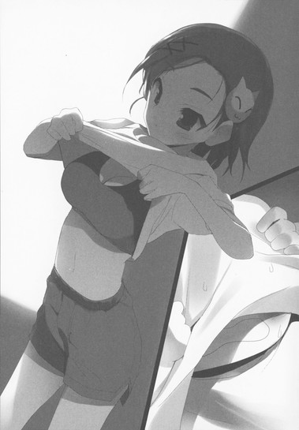
「......で、さっきの話の続きだけどさ。アビリティ、習得できそうなの？」
ベッドの端に腰掛けたチユリにそう訊かれ、ヒトデクッションの上でなぜか正座のハルユキは、エレベータでの時と同じくアヤフヤな答えを口にしかけた。しかしそれを止め、代わりに少し首を傾ける。
「な、なんか......こう言っちゃなんだけど、ちょっと意外だな。チユが、メタトロン攻略の件をそこまで気にするの......」
「何よ、あたしだってネガ・ネビュラスの一員だもん」
「そうだけどさ、今回のはダスク・テイカーや災禍の鎧と違って、ネガビュ限定の話じゃないだろ？チユの思考パターンからするとむしろ、こんな難題押しつけて！とか六王たちに怒りそうかなーって......」
ハルユキの言葉に、チユリは一瞬怒るかどうか迷うような顔を見せてから、なぜか少し頬を赤くした。
「や、やめてよね、お見通しみたいな言い方。......でも、まあ、正解だけどさ」
「へ？」
「七王会議の話を聞かされた時は、実際ちょっとムカっと来たのよ。すっごくがんばって〈鎧〉を浄化したばっかりのハルに、神獣級エネミー攻略の先鋒なんて大変な役目を無理強いするなんて、って。──でも、さ。あたしも......ハルやタッくんと一緒に、あれを見てるわけだしさ......」
あれ、という代名詞が何を意味するのか、ハルユキは珍しく即座に悟った。
ブレイン・バースト中央サーバー、別名メイン・ビジュアライザーの中で見た、〈ＩＳＳキット本体〉だ。美しい銀河の片隅を侵食する、漆黒の脳髄。無数の回線を血管のように伸ばし、タクムを含むキット装着者たちを繋いで忌まわしい並列処理を行っていた様子は、忘れようとしても忘れられない。
「......あたし、バーストリンカーになってまた三ヶ月足らずで......辛いことも色々あったけど、でも、加速世界が好きだよ。対戦は楽しいし、友達もたくさんできたし。だから......あの世界が、悪いモノに侵食されてくのは嫌なの。ハルが、自分の意志でＩＳＳキットを消滅させたいって思ってるなら、あたし応援する。あたしにも、きっと何かできることがあると思うし......光線技は使えないけどさ」
「..................チユ............」
不覚にも胸に強くこみあげてくるものがあり、ハルユキは必死にそれを呑み込んだ。両眼をぱちぱち瞬かせ、大きく息を吸ってから、ぺこりと頭を下げる。
「............ありがとう。オレも......オレも、加速世界が大好きだからさ。そりゃメタトロンは怖いけど、でもオレにあのレーザーを防げる可能性があるなら、頑張ってみようって」
顔を上げ、にやっと笑ってみせる。
「さっきもちょっと言ったけど、一応ヒントっぽいものは見えたんだ。井関さんや四埜宮さんに色々教えてもらったし、それにサーベラスとの対戦でも、大事なことに気付けた気がする。多分、レーザーを跳ね返すことばかり考えてちゃ駄目なんだ。究極の〈鏡〉って、きっと反射率が高いだけの板じゃないんだよ」
夢中で喋るハルユキは、途中でチユリの目つきがひんやりクーリングされたのに気付けなかった。
「ねえハル」
「物理的な存在っていうよりも、むしろ通路っていうか............へ？何？」
「ういちゃんはともかく......なんでそこに井関さんの名前が出てくるの？同じ飼育委員ってだけでしょ？」
「え......いや、その、えーと......た、ただ鏡を見せて貰っただけだよ。あの人、すげー高級そうなエチケットミラー持っててさ、購買で売ってるアクリルのやつとぜんぜん違ってビックリしたなあ、ハハハ」
「ちゃんとした鏡くらい、あたしだって持ってます！」
「で、ですよねー......」
ハルユキが両手の人差し指をコネコネしていると、チユリはいきなりベッドから立ち上がり、目の前をどすどす横切って部屋から出ていった。まさかどこかから鏡を持ってくるつもりなのか、でもこの部屋にもでっかい姿見があるのに、などと考えていると、ほんの一分足らずで戻ってくる。
その手にあるのは鏡ではなく、お盆に載せられた麦茶のグラスだった。一つをハルユキの前に置き、言う。
「晩ご飯、あと十五分くらいだって。そんだけあれば充分ね」
「は、はい？ 何に充分？」
「あたし、レーザー跳ね返す練習する方法が他にないか、昨日色々考えたの。毎回ニコちゃんに主砲撃ってもらうわけにもいかないでしょ？......んで、いいこと思いついたんだ」
────なんか、いやな予感！
と思ったものの口には出せない。冷たい麦茶を両手で抱えたまま、ハルユキは固唾を呑んで次の言葉を待った。
「......光線技使うのって、バーストリンカーだけじゃないよね。そもそも問題のメタトロンからして違うわけだし。ってことは、レーザーで攻撃してくるお手頃クラスなエネミーがいれば、そいつ相手に好きなだけ練習できるってすんぽーじゃない！」
「ま、まま待っティング！ お手頃って言うけど、エネミーはちっちゃい奴でもとんでもなく強いんだぞ！」
慌てて口を挟むと、チユリはひょいっと肩をすくめる。
「でも、おとといの特訓の帰り道に狩った野獣級はけっこう楽勝だったよ？」
「あ、あんときは八人がかりで、しかも〈王〉が二人もいたろ！だ、だいたい、レーザー攻撃する小型エネミーなんて、そう簡単に見つかるはずが......」
「ところがどっこいしょ！ いたんだなぁコレが」
チユリは口許をネコっぽくにんまりさせると、ぱちんと右手の指を鳴らした。
「しかも棲息ポイントがけっこう近いの。世田谷第二戦域だから、ハルの羽根ならひとっ飛びだよ」
「え......も、もう発見済みなの？ どうやって......誰かに教えてもらったのか？」
唖然と問い返すハルユキに、チユリは笑みを照れ臭そうなものに変える。
「言ったでしょ、あたしにもできることがあるって。人に頼る前に、まずは自分で探してみようと思って、ゆうべちょこっと無制限フィールドをうろついてみたのよ。そしたら運良く、レーザー撃ってくるちっちゃいエネミー見つけちゃったわけ」
「ばっ......おま......」
ハルユキは少し息を詰まらせてから、部屋の外に漏れないぎりぎりの音量で叫んだ。
「な、何ムチャなことしてんだよ！ 〈上〉に単独ダイブして、しかもエネミーにちょっかい出すなんて......ヤバいバーストリンカーに出くわしたり、巨獣級にタゲられたりして無限ＥＫになることだって......」
「大丈夫だよ。ちゃんと自動切断タイマーセットしといたし、それにライム・ベルの硬さ、知ってるでしょ？おまけに治癒能力まであるんだから、そうそう無限ＥＫになんかならないよ」
「だからって............」
尚も言い募ろうとして──ハルユキは、そこでぎゅっと口をつぐんだ。
チユリ......生まれた頃から知っている倉嶋千百合は、こういうヤツなのだ。気分屋で、怒りんぼで、その実だれよりも頑張り屋。人の見ていないところで物凄く努力して、どんなに辛い思いをしても、それを表に出さずにいつも明るく笑っている。
彼女はかつて、ブレイン・バースト・プログラムのインストールを成功させるために、フルダイブ環境で反応速度向上の特訓をしたと言っていた。その頃は当然まだ加速はできないので、リアルの生活を犠牲にして、何十......いや何百時間という地道な、血の滲むような本物の特訓を繰り返したに違いない。
「......チユ、そのエネミー見つけるのに、どれくらいかかったんだ......？」
ハルユキが訊ねると、チユリは少し迷うような顔をしてから、ちらりと舌を出して答えた。
「えっと......内部時間で三日とちょい」
正真正銘の無茶だ。だが、ハルユキにはもう「何してんだよ」と言うことはできなかった。
代わりにクッションの上で正座すると、深く頭を下げ、言った。
「............ありがとう、チユ」
「ちょっ......な、何ホンキになってんのよ！ って、やばっ、ママが呼びに来るまであと十分しかないじゃない。ほら、とっととダイブするよ！」
顔を赤くして叫んだチユリは、自分の麦茶を一気飲みすると、デスクの引き出しから小型のハブとＸＳＢケーブルを三本取り出した。最も長い一本で壁のホームサーバー接続コネクタとハブを繋ぎ、もう一度ベッドに座るとハルユキに手招きする。
「ほら、早く早く！」
「へっ......あの、何を......」
「この部屋、ソファとかないんだからここに寝っ転がるしかないの！ハリアップ！」
「は、は、はひっ」
言われるままハルユキは立ち上がると、チユリの横に並んで座った。途端、掌で額を押され、背中からベッドに倒れ込んでしまう。硬直するハルユキのニューロリンカーに、ハブから伸びるケーブルの片方を突き刺し、すかさず自分も接続するとハルユキの隣に横たわる。
着替えたばかりの幼馴染から、ふわりと甘い香りが漂う......のを意識する暇もなく、鋭い声が飛んだ。
「３カウントでダイブする！ 行くよ、３、２、１......」
「「アンリミテッド・バースト」」
──のコマンドを間違えなくてよかった。と、虹色のリングに向かって落下しながらハルユキは思った。
３
「......アレ、一度言ってみたかったのよね。『３カウントで......』ってヤツ」
鮮やかなライムグリーンのボディと頭のとんがり帽子、そして左手のハンドベル型強化外装がトレードマークのライム・ベルは、仮想の地面に降り立つやそう言った。
少し遅れてフィールドに着地したハルユキは、鏡面バイザーの下で苦笑しつつ答えた。
「いきなりあんなこと言うから、オレ危うく普通のダイレクトリンク・コマンドを叫んじゃうとこだったよ」
「き、気をつけてよね！ そしたら、ダイブするのはあたしのプライベート・スペースじゃないの」
「......例のクッションじご......じゃない、天国か。また見てみたい気もする......かな......」
「なら、特訓が終わったあと......じゃない、晩ご飯食べたあとに入れたげる。ともかく、外に出てみよ」
チユリに頷き返し、ハルユキは周囲を見回した。だが、ダイブしたのが建物内だったため、真っ白い壁が目に入るばかりだ。これでは、ステージ属性を特定できない。
ベランダ側の窓は消滅しているものの、ドアのあった場所から細い通路が伸びている。その先からマンションの共用廊下に出られるはずだが、時間を節約するために、ハルユキは本来窓があるはずの壁に向き直った。右拳を握り締めてから、背後のチユリに一応許可を求める。
「えっと......この壁、壊していいか？」
「なんかフクザツだけど、まあいいわ。どうせハルの必殺技ゲージ溜めなきゃだし」
「んじゃ、失礼して......」
再度壁に正対すると、すっと腰を沈め、体を鋭く捻ると同時にほとんどテイクバックなしの右ストレートを放った。ハルユキはほぼ無自覚だったが、これはウルフラム・サーベラスの、腕の振りよりもアバターの質量と回転力を重視したモーションに近い。ノーマルカラーより重いメタルカラーにはこの動き方が向いていることを、二度の戦いで吸収した結果だ。
体ごとぶち当てるようなパンチが壁の中心を捉え、大型ライフルの弾着めいた甲高い衝撃音が轟いた。しかし、きめ細かい純白の壁にはヒビ一つ入らない。
「......ちょ、ちょっとハル、大丈夫？ダメージ受けなかった？」
無制限中立フィールドでは自分以外の体力ゲージは見えないので、チユリが心配そうな声を出したが、ハルユキは無言で拳を壁に押し当て続けた。ゲージが減っていないのは見ずとも解る。そして、パンチの威力が残さず壁に浸透したのも。
少し遅れて──。
ばっかあぁぁん！ と盛大な音を響かせ、南の壁一面が粉々に砕けた。
フィールドの情景が目に飛び込むや、チユリが再び叫んだ。今度は明るい歓声だ。
「わあ......！ すごい、きれい......！」
空の色は、真珠を溶かしたような光沢のある乳白色。地上の建物群も神殿を思わせる純白に染まり、道路や空き地のあちこちには大きな正八面体のクリスタルが浮遊する。透明なそれらはゆっくり回転していて、空からの光を虹色のスペクトルに変えて周囲に振り撒く。
「〈霊域〉ステージか......久しぶりに見たなあ」
レアな上位神聖系ステージを俯瞰しながらハルユキが呟くと、隣に並んだチユリもこくりと頷いた。
「あたしも、通常対戦で一回見ただけ。えーと確か、あのクリスタル壊すと、必殺技ゲージがいっぱい溜まるんだっけ？」
「うん。あと、無制限フィールドだと壊したクリスタルから、たまぁ～～にアイテムカードが出るらしいけど......」
「え......ホント？」
ライム・ベルの、猫っぽさを残したアイレンズがハルユキに向けられたが、すぐにぷるぷるかぶりを振る。
「ううん、ダメダメ！ 今日の目的は遊びじゃなくて特訓なんだからね、アイテム探してる場合じゃないでしょ！」
「お、オレ何も言ってないでしょ！」
「時間もったいないからさっさと行くよ！ 抱っことおんぶ、どっちがいい？」
「あ、あのなあ......それ訊くの、普通はこっちなんじゃ......」
「なら訊いてよ。はい、えーと、じゃあ抱っこね」
言うや否や、チユリはアバターの右側面を向けてくる。完全に相手のペースに巻き込まれていることを自覚しつつも、やむなくハルユキは両腕を伸ばし、ライム・ベルの背中と脚にあてがうと抱え上げた。
緑系アバターは、防御力に秀でている反面少しばかり重い。以前同じように〈お姫様抱っこ〉したことのあるブラック・ロータスやスカイ・レイカーよりも高密度な手応えがあるが、ここでそれを口に出さない程度の危機回避能力は身につけているので、「そんじゃ行くぞ」とだけ言って、ひょいっと空に身を躍らせる。
倉嶋家はマンションの二十一階にあるので地面は相当に遠いが、以前一緒に新宿都庁最上階から飛び降りた経験もあるチユリは、自由落下が始まっても悲鳴ひとつ上げない。二十メートルほども降下したところで背中の翼を広げ、滑空に移る。眼下の環七通りに浮かぶクリスタルのひとつに狙いを定め、すれ違いざまに蹴り飛ばす。
かしゃーん、と儚いサウンドを響かせて虹色の結晶体が砕ける。アイテムカードは出なかったようだが、必殺技ゲージが一気に半分近くまでチャージされる。これだけあれば、ノンストップで世田谷まで飛べるはずだ。
再び上昇し、街並みが見渡せる高度で一度ホバリングすると、ハルユキは腕の中のチユリに訊ねた。
「......で、その光線エネミーって、世田谷のどこに湧くんだ？」
〈霊域〉ステージの美景に見入っていたらしいチユリは、いちどアイレンズを瞬かせてから答える。
「あ、桜上水の駅のちょっと先」
「ってーと、こっちか」
いちど南西方向を向いてから、考え直して環七の上空を真南に飛び始める。
環七通りと青梅街道が交差する高円寺陸橋交差点から、遠く多摩川沿いの砧浄水場までは、〈荒玉水道道路〉という道が十キロメートルにわたって伸びている。これがまた二十三区内にある道路とは思えないほどの完璧な直線っぷりで、桜上水駅はその途中にあるのだ。
交差点の少し西から水道道路に入ったハルユキは、高度を下げると路面からわずか一メートル半の高さを全速で飛行した。当然必殺技ゲージが急減し始めるが、この道にもクリスタルが浮かんでいるので、出くわす端から頭突きで粉砕していく。
この挙動にもチユリは怖がるどころか、「いっけー！」と声を上げてすっかり遊園地の絶叫マシン扱いだ。あっという間に杉並区と世田谷区の境界を走る京王線の高架が見えてくるので、それをくぐったところで減速、両脚で滑らかな路面に轍を刻みながら停止。
「ふー......」
相変わらずハルユキの腕に収まったまま、チユリは小さく息をつくと、顔を上げて叫んだ。
「あー、楽しかった！ どうせなら、この道路の終点まで飛んじゃえばよかったのに」
「あ、遊びじゃないって言ったのお前だろ！」
「細かいこと気にしなーい！」
そこでようやく腕からぴょんと飛び降り、しばし周囲を眺めてから、道路の東側を指差す。
「あたしがエネミー見つけたのは、こっちにある大きい建物の近くだよ」
「大きい建物......」
ハルユキは首を傾け、脳裏に周辺地図を呼び出そうとした。現実世界なら仮想デスクトップのマップアイコンを押せば済むが、加速世界にはそんな便利アプリは存在しない──多分。
「......確か、大学があるんだったかな？ 何大学だっけ......」
「こっちじゃどこの大学だろうと一緒でしょ！受験しに来たわけじゃないんだし、大学生のバーストリンカーもいないんだし」
チユリに呆れ声で指摘され、「ま、まあな」と頷く。
本当は、ハルユキが気にしたのは、大学のキャンパスに付属中学や高校が隣接している可能性だ。
無制限フィールドに於いて、他のバーストリンカーとの予期せぬ遭遇が発生しやすいのは、第一にポータル周辺、第二にショップ周辺、第三が狩りやすい大型エネミーの湧きポイントだが、中学や高校の周辺というのはそれに次ぐ場所と言える。その学校にバーストリンカーが複数存在した場合、無制限フィールド内の校舎を待ち合わせなどに使うことがままあるからだ。ハルユキも二ヶ月前、ダスク・テイカーとの最終決戦の場として、梅郷中の校庭を選んだ経験がある。
とは言え、無制限フィールドは、現実比一千倍に加速された時間が常に流れ続ける世界だ。たとえハルユキとチユリがこちら側に丸一日留まろうとも、現実ではたった八十数秒しか経過しない。時間と場所が他のバーストリンカーとバッティングする可能性は、万に一つ以下と考えていい。
──というワリには、僕こっち側でなんだかんだ出くわしてる気もするけど。
内心でそう独りごち、まあ世田谷は過疎エリアだし大丈夫だろうと結論づけて、ハルユキは無意識の動作で隣に立つライム・ベルの腰に腕を回した。しっかりホールドし、緩やかに離陸してから、相手がまじまじとクロウの顔を見ていることに気付く。
「......なんだよ？」
「べっつにー。ただ、手つきがみょーに慣れてるなーって思っただけー」
「な、慣れてねーよ！ だ、だいたいダッコしろって言ったのそっちだろ！」
「はいはい、そんなことよりもうちょっと高度上げなさいよ」
「............へーい......」
この幼馴染に口で勝てることは恐らく永遠にあるまい。と自覚しつつ、ハルユキは二十メートルほど垂直上昇する。
すると確かに、水道道路の東側に広々としたオープン・スペースが存在した。点在する大型の神殿は、現実世界では大学の校舎なのだろう。だが──。
「......エネミーなんて見当たらないぞ......」
「ちょっと待って」
言い、チユリは何のつもりか、左腕の大型ベル──強化外装〈クワイアー・チャイム〉を空にかざした。
ハルユキの知る限り、このベルの用途は二つだ。まず、打撃による直接攻撃。恐ろしいほど頑丈で重さもあり、しかも頭に喰らうと「りごりーん！」と強烈なサウンドが聴覚を直撃して一瞬だがピヨってしまうという、なかなか有用な武器である。
そして二つ目はもちろん、必殺技の〈シトロン・コール〉だ。対象の時間を巻き戻すという稀少極まる効果を持ち、味方に使えば体力回復、敵に使えばせっかく溜めた必殺技ゲージをゼロに戻したり武装を強制解除したりと、小魔女めいた外見に相応しい活躍をする。
だが、この状況で何かの時間を戻す必要はないはずだ。ということはまさか用途その一、僕の頭をぶん殴るつもりか──とハルユキが首を縮めた、その時。
ベルがゆっくりと、まるで何かを招くような動きで前後に振られ始めた。少し遅れて、鐘というより鈴を思わせるサウンドが、りぃー......ん、りぃー......ん、と波の如く広がっていく。チユリは十秒ほどでベルを下ろしたが、音は止まらない。周囲の地形に反響しながらどこまでも拡散し、徐々に減衰してフェードアウト。
今の、いったい何なの。とハルユキが訊くよりも早く、
「ほら、あそこ！」
チユリが、抑えられた叫び声とともに右手を伸ばした。人差し指の延長線を眼で辿ると、驚いたことに、神殿の一つから何かがのそのそ這い出てくるではないか。
「え、エネミー!? まさか......あれ、チユが呼んだのか......!?」
「呼んだっていうか......エネミーって音に反応するでしょ？ゆうべ、レーザー出すエネミー探して歩き回ってる時、あたしのベルをうまく使えば広範囲からエネミーを呼び集められるんじゃないかと思って色々工夫してみたの」
「こ、広範囲からって......山ほど集まってきたらどうするんだよ......」
「一回、ちょっとヤバかったけどね」
と、ぺろりと舌を出しながらとんでもない事を言ったチユリは、何のつもりか右手を動かし〈インストメニュー〉を呼び出した。
このシステム・ウインドウは可視・不可視のモードを様々な条件別に設定できるが、基本は〈タッグパートナーとレギオンメンバーには可視〉なので、ハルユキにもガシャンと音を立てて展開する窓が見えた。チユリの指がもう一度動くと、表示内容がアビリティ・必殺技一覧に変わる。
ライム・ベルは必殺技のシトロン・コールを持っているだけのはず......と思いながら画面を眺めたハルユキは、小さく声を上げてしまった。なぜなら、アビリティ欄に燦然と輝く文字列があったからだ。
「〈アコースティック・サモン〉......〈音響召喚〉？お前......このアビリティ、いつ......」
「言ったでしょ、ゆうべだよ。はじめてエネミー寄せに成功したあとインスト開いてびっくりしちゃった、アビリティってほんとに突然閃くのね」
「..................そ、そうっすか......いいなあ............」
チユリの努力と創意工夫を称えるよりも先に、ハルユキは本音をぽろりと零してしまった。何せ現在、ハルユキはアビリティ〈理論鏡面〉習得という高難度ミッションを課せられた身なのだ。赤の王スカーレット・レインの主砲レーザーに十回蒸発させられてもサッパリ閃かなかった我が身の鈍くささを、ついチユリと引き比べてしまう。
だが、ハルユキの思考を正確に看破したのだろう、チユリは呆れ声を出しつつ右手でクロウの頭をこつんと叩いた。
「あのねえ、この〈音響召喚〉と、あんたが目指してる〈理論鏡面〉はワザのレベルが違うでしょ！あたしのはエネミー呼ぶのにしか使えないんだよ、これが隠れてるバーストリンカーも引っ張り出せるなら超イカスけどさ」
「......ま、まあ、そうかもだけど......」
「その点、〈理論鏡面〉はもし習得できれば、エネミーだけじゃなくバーストリンカーの光線技も百パーセント耐性なんでしょ？レーザー持ちの赤系ってかなり多いし、領土戦で大活躍できるの確実じゃない。ヘコんでないで、とっとと特訓始めましょ。せっかくエネミー見つけられたんだしさ」
「......う、うん、そうだな。もし今日中に習得できれば、先輩も師匠もびっくりするよなきっと。ようし、頑張るぞ！」
ハルユキはぐっと左手を──右手はチユリの体を抱えているので──握り締めた。耳の近くでハアーッとため息が聞こえた気がしたが、気にせず前進開始。
最初は小さなシルエットでしかなかったエネミーだが、近づくにつれ形状が明らかになる。ひと言で表現すれば、〈頭でっかちのアルマジロ〉だろうか。硬質の装甲に鎧われた体は丸っこく、四本の手足は短い。先細りの頭部は額部分がやけに大きくて、そこに楕円形の赤い宝石......またはレンズのようなものが嵌っている。尖った鼻を左右に動かし、自分を誘った音の発生源を探っているらしい。
「おでこの赤い宝石、見えるでしょ？ あそこからレーザー撃つの。距離があったから直撃はされなかったけど、古城ステージの建物いっこ貫通したから油断しないでね」
「............古城ステージって、けっこう建物硬かったような......」
「だいじょぶだいじょぶ、即死さえしなきゃ、あたしがシトロン・コールで回復してあげるから。攻性化範囲は三十メートルくらいだったから、その手前で降りてね」
「............り、了解」
ハルユキは頷き、余裕を持ってアルマジロ型エネミーの五十メートル手前で着陸すべく降下を開始した。エネミーは、本来は大学キャンパスの運動場だと思しき広大なスペースの中央に留まっているので、接近は容易だ。
〈霊域〉ステージの地面は、華麗なアラベスク模様のタイルが敷き詰められている。対となる〈大罪〉ステージも白いタイル敷きなのだが、むこうが単なる格子状の目地からじくじくと血液めいた液体をしみ出させているのに対して、こちらは清潔そのものだ。摩擦係数も適度で、足を滑らせる心配はない。
ゆえに、ハルユキとチユリは、五十メートル先のエネミーに視線を据えたまま着地した。
だが──足裏が捉えたのは、かつんと硬質な感触ではなく、どぷんぬるりという粘液質なそれだった。
「おわ！」
「きゃあっ！」
叫び声を上げつつ、二人同時に真後ろにひっくり返る。再び背中がどっぷりと粘っこい液体に浸かり、揃って体を強張らせる。
加速世界に於いて、地形に溜まっている粘液というのはたいていロクでもない効果を持っている。種類が何であれ、即座に対処せねばならない。真っ先に視界左上の体力ゲージを見るが、幸い一ドットたりとも減っていないようだ。ということは、毒液や腐蝕液ではなく、接着液の類か。
そう考え、チユリと同時にがばっと上体を跳ね起こさせる。しかし、さして抵抗感もなく、背中は地面から離れる。
ならばこのどろっとしたものは何なんだ、と視線を落とすと、二人が座りこんでいるのは、直径四メートルほどの茶色い水たまりだった。おそるおそる左手を持ち上げるが、ぼたぼたと液体が垂れたあとの金属装甲には何の変化もないようだ。
「............何だコレ......」
ハルユキが首を捻ると、チユリも同じように右手を持ち上げ、茶色い粘液に顔を近づけた。
「え......うそ、これってもしかして......」
呟き、顔を上げると、命令口調で言う。
「ハル、じゃないクロウ、口開けて」
「へっ......？」
「早く、あーん！」
言われるがまま、指先でヘルメットを下から上になぞると、鏡面バイザーが四分の一ほどスライドし、隠れていたアバター素体の口が露わになる。ぱかりと開くや否や、ライム・ベルの人差し指と中指──にたっぷり付着する茶色いドロドロが、口中に突っ込まれる。
「む、むごもがまぐ！」
当然のように悲鳴を上げるが、指は抜けない。問答無用で舐めてしまった粘液の味が、ハルユキの味覚に広がる。ほろ苦く、コクがあって......甘い。
というか、たいへん美味しい。
ハルユキが大人しくなると、チユリはすぽんと指を抜き、言った。
「何味？」
「......チョコ味......」
「やっぱり」
──なら自分で味見しろよ！ と叫びたいが、それ以前に巨大な疑問が脳を支配する。
なぜ。どうしてチョコレート......しかもハルユキ好みに甘いミルクチョコの池が。〈霊域〉ステージにそんな特性はなかったはずだ。それともここが霊域だというのが勘違いで、本当は〈お菓子〉ステージか何かだったのだろうか。
呆然と座り込んだまま、もう一口味見してもいいものかどうか悩んでいると──。
「〈パペット・メイク〉!!」
可愛らしい女の子の声が、フィールドに響き渡った。間違いなく技名発声、つまりバーストリンカーが必殺技を発動させるために唱えるボイスコマンドだ。これが聞こえたならば、何はともあれ動くのがセオリーである。
ハルユキは素早くチユリの胴体を抱え直し、背中の翼を強く振動させた。浮き上がりながら三メートルほどバックダッシュし、改めて周囲を確認──しようとしたのだが、一瞬早く発生した現象に眼を奪われる。
前方のチョコ池から、ぬぼっ！ と立ち上がる人影、ふたつ。
「うそっ、とてもアバターが潜れるような深さなんか......！」
チユリの言葉はもっともだ。しかし事実として、二人の眼前には、身長百五十センチほどのシルエットが二つ立ちはだかっている。
形状は至ってシンプルだ。頭部はつるりと丸く、腕や脚も素体が剥き出しと見える。顔には眼も口もなく、代わりに花のような形のマーキングが一つ存在するのみだ。ボディカラーは、半光沢の焦茶色......というか、出てきた池と同じチョコレート色。
特徴らしい特徴のないアバターだが、しかし大いに特異な点がひとつだけある。並んで立つ二人の外見が、まったく同じなのだ。加速世界では、複数のアバターが完全に同じデザインになることは原理的に有り得ない。双子だと噂される青のレギオンの幹部コバルト・ブレードとマンガン・ブレードも、色やパーツの形状が微妙に違う。
「お、お前たち、いったい......!?」
ハルユキがそう叫んだのと、二体のアバターが無言で突進してきたのは、ほぼ同時だった。
彼らの足許に広がっていたチョコ池がいつの間にか消滅していることを意識する暇もなく、ハルユキとチユリは反射的に迎撃態勢に入った。シルバー・クロウは左の貫手を、ライム・ベルはクワイアー・チャイムを、それぞれ相手の胸部を狙って繰り出す。
硬質な装甲を鋭い指先が撃ち抜く衝撃──の代わりに、油粘土に手を突っ込むような湿った柔らかさが伝わる。貫手は、顔なしアバターの胸を深々と抉り、そのまま後方に抜けていく。一度の攻撃によって胴体は半ば分断され、体力ゲージが五割以上減っても不思議はない有様だ。無制限フィールドでこれほどの傷を受ければ、通常対戦の二倍に拡張された痛みによって、しばらくは動くこともままならない。
はず、なのだが。
「なっ............」
左手を振り抜いた姿勢のまま、ハルユキは眼を見開いた。顔なしアバターはほんの少し上体をよろめかせただけで、声ひとつ漏らさずにカウンターの右ストレートを繰り出してきたのだ。ヘルメットの左側面をしたたかにぶん殴られ、クロウの体力ゲージががりっと五パーセントほど持っていかれる。
追い打ちを避けるために大きく飛び退きながら、ハルユキはちらりとチユリの状況を確かめた。こちらも、ハンドベルによる打撃が顔なしのボディをごっそり吹き飛ばしている。だが、やはり敵は止まらない。大穴を開けられたままの体で、左足の回し蹴りを放つ。チユリはそれを右腕でブロック。同時に自分からジャンプしたようで、ハルユキのすぐ隣まで跳んでくる。
「なんか......こいつら、変！」
チユリが叫び、ハルユキがこくこく頷いた直後、変を通り越して異常な光景が出現した。
顔なしアバターは二体ともボディに深いダメージを受けているのだが、傷の周辺がいきなりどろりと溶解し、焦茶色の粘液となって流れて穴を塞いだのだ。ほんの数秒で、顔なしたちの体は完全に再生し、滑らかな焦茶色の表面を取り戻す。
「......貫通も、打撃も無効かよ......」
ハルユキが唸ると、チユリは小さく首を傾げた。
「そもそも......こいつら、ほんとにバーストリンカーなの......？なんか、作り物っぽいって言うか......ぶっちゃけチョコっぽいって言うか......」
「そういや、さっきのチョコ池が消えてるな。こいつらがあのチョコから作られた人形なら......カジってみれば解るかな？」
「さっきチョコアイス食べたばっかでしょ！」
ハルユキの言葉にチユリが突っ込んだ、その途端。じりじり間合いを詰めようとしていた顔なしアバターたちが、ぎくりと身を強張らせた──気がした。逆に後退り始める二体を追って、ハルユキはじわじわ前に出る。
しかし残念ながら、チョコ色アバターの味見はできなかった。それより早く、もういちどあの声が聞こえたのだ。
「早くも〈チョペット〉たちの弱点に気付くとは、なかなかやるですわね！」
ほんの少し鼻にかかった、甘い声の発生源は目の前の顔なしたちではない。ハルユキたちは素早く左方向を見やる。すると、二十メートルほど離れた小神殿の屋根に立つ小柄なシルエットが眼に入る。
顔なしアバターよりも更に小さい。装甲色はよく似た半ツヤのチョコレート色だが、形状が違う。大きな鍔のついた帽子の下から左右に長く伸びる髪と、下半身を覆う大型のスカート型装甲からして、明らかに女性型アバターだ。二つのアイレンズは、クリアなピンク色に輝いている。
その姿を見た途端、ハルユキは二つのことを確信した。
まず、あのＦ型は、今度こそ本物のバーストリンカーであること。そして、二体の顔なしアバターは、彼女の能力によって作り出された戦闘用の人形であること。恐らく、最初に聞こえた〈パペット・メイク〉なるコマンドが、人形生成の必殺技だったのだ。
他にも色々と疑問はあるのだが──例えば〈チョペット〉って何？とか──それらは後回しにして、ハルユキは真っ先に訊くべきことを訊いた。
「なんで僕らを攻撃するんだ!?お前......〈加速研究会〉のメンバーか!?」
すると、チョコレート色のＦ型はぱちくりと瞬きしてから、ハイヒールのかかとで強く神殿の屋根を踏んだ。
「わたくしが入っているのはデザート同好会ですわ！あなたがたこそ、クルちゃんを狩りにきたくせに白々しい！わたくしの眼がイチゴクリーム色なうちは、そんなこと絶対させませんわよ！」
また妙な単語が出てきたぞ、と脳内インデックスを検索するが、〈クルちゃん〉なる人物に心当たりはないので一応確認する。
「ええと......クルちゃんって、誰？」
「トボケても無駄ですわ！ あなたがたがあそこにいるクルちゃんを攻撃しようとしたのを、わたくししっかり見たんですから！」
華奢な左手が、びしっ！ と広場の中央を指差す。視線を動かすと、その先では、例のアルマジロっぽい小型エネミーが相変わらず鼻をふんふんさせている。
「へっ......エネミー？ あれが〈クルちゃん〉？」
「ですわ！ 種族固有名〈ラーヴァ・カーバンクル〉、略してクルちゃん。わたくしのお友達です！あの子をむざむざ狩らせるくらいなら......ここで全損するほうがマシなのですわ！」
左手を、今度はハルユキたちに向け、チョコ色アバターは敢然と言葉を続けた。
「さあ、とっとと使うがいいですわ！ あの薄汚い......ＩＳＳキットを！」
４
「〈カカオ・ファウンテン〉」
小柄なチョコ色アバターが囁くように技名を発声すると、指先からきらきらとピンク色の光が迸った。
光が放物線を描いて地面に落ちると、そこからぽこ、ぽこと音を立てて、ハルユキとチユリが足を滑らせた例の焦茶色の粘液......つまりミルクチョコが湧き出てくる。途端、少し離れたところに留まっていた小獣級エネミー、ラーヴァ・カーバンクルこと〈クルちゃん〉がとことこ移動を開始し、チョコ池の匂いをふんふん嗅いでから、尖った鼻面を突っ込んで盛んに舐め始める。
「......あの子、エネミーのアグロレンジに入ってるわよね......」
チユリの囁き声に、ハルユキはこっくり頷いた。チョコ色アバターの立ち位置は、エネミーからわずか三メートルしか離れていない。どんなに鈍いエネミーでも確実に襲いかかってくる間合いである。ハルユキたちは余裕を持って四十メートルの距離を保っているが、これでも安全圏とはとうてい言えない。
「飼い馴らし状態......ってことかな......」
「でもあれって、専用のアイテムが必要なんじゃなかった？先輩が空飛ぶ馬をテイムするのに使った手綱みたいな......」
「オレもそう思ってたけど......まあ、加速世界の常識って、けっこう例外ありまくるからなあ......」
二人が並んでそんなやり取りをしていると、チョコ色アバターは夢中でおやつを舐めるエネミーに背を向け、とてとてと歩み寄ってきた。彼女が最初のチョコ池から生成したチョコ人形、略して〈チョペット〉二体はすでに効果時間が過ぎて消滅している。
ハルユキたちの目の前で立ち止まり、無言で視線を向けてくるアバターは、Ｆ型としても相当に小柄だ。四埜宮謡のアーダー・メイデンと大差あるまい。
「......まずは、わたくしから名乗りますわ。〈ショコラ・パペッター〉......所属レギオンは、今はありません」
唐突な自己紹介に、ハルユキは慌ててぺこりと頭を下げた。
「あ、ええと、シルバー・クロウです......レギオン、ネガ・ネビュラス所属」
「あたし、同じくネガ・ネビュラス所属のライム・ベル」
二人が名乗ると、ショコラ・パペッターという名らしい少女型アバターは、細い指を頬に添えてこくりと頷いた。
「......なるほど、あなたが有名な黒のレギオンの〈鴉〉ですか。それと、〈時計の魔女〉......」
「......お前、そんな二つ名あったの？」
ハルユキが小声で訊くと、チユリは薄く頬を赤らめてかぶりを振る。
「し、知らないわよ！ そんなことより話に集中しなさいよ！」
「は、はい」
幸いショコラ・パペッターは数秒間考え込んでいたようで、顔を上げるともう一度頷いて言った。
「あなたがたが、ＩＳＳキット・ユーザーでないことは理解しましたわ。それと、クルちゃんを狩りに来たのではないことも」
「あ......ありがとう」
ほっと胸をなで下ろしてから、語調を改めて続ける。
「それじゃ......こっちからも、ちょっと質問していいかな？」
「どうぞ、ですわ」
「きみ、いつからここにダイブしてるの......？」
ショコラが、クルちゃんことラーヴァ・カーバンクルを狩りにくるバーストリンカーを待ち構えていたことは明らかだ。しかし、無制限中立フィールドでの待ち伏せは簡単ではない、と言うより、対象のダイブ時間が何時何分まで判明していない限り不可能と言っていい。
ハルユキの問いに、ショコラは軽く肩をすくめて答えた。
「たしか十......いえ、十一日前からですわ。現実時間ではほんの十六分ですけれど」
「「じ......十一日!?」」
二人が声を合わせて叫ぶと、小柄なチョコ色アバターはわずかに口許を綻ばせる。
「別に退屈でもなんでもありませんわ、ずっとクルちゃんと一緒でしたから。それに......わたくしは、十日が十ヶ月になろうといっこうに構わないの。なぜなら......先ほどあなたがたにも申し上げましたが、わたくしは、このダイブでポイント全損することを覚悟していますから」
「..................」
ハルユキとチユリは、思わず顔を見合わせてしまう。バーストポイントの全損はブレイン・バースト・プログラムの強制アンインストールと同義、それは即ちバーストリンカーとしての死だ。微笑みながら口にするには、あまりにも重い言葉。
「ええと......きみが言ってるのはつまり、あのエネミー、じゃないクルちゃんを守るためならポイント全損も辞さないと、そういうことかな......？」
おずおずとハルユキが訊ねると、ショコラは平然とボンネットタイプの帽子を縦に動かす。
「そういうことですわ」
「でも......その、気に障る言い方になっちゃうかもしれないけど、エネミーは何度狩られても、〈変遷〉が来ればまた復活するよね......？」
「それは確かにそうですわね。......でも、復活するのはあくまで同種のエネミーで、まったく同じ個体が再生するわけじゃないんですのよ。次にこの場所にポップする〈ラーヴァ・カーバンクル〉は、わたくしが近づいた途端に襲いかかってくるでしょう......」
語尾がほんの少し震え、ショコラは帽子の鍔に顔を隠してしまう。装甲色はまったく違えど同じく帽子つきで、全体のフォルムもどこか似ているライム・ベルが一歩近づき、優しい声で訊ねる。
「あの子とここまで仲良くなるのに、どれくらいかかったの？」
「............現実時間で、二年と少し、ですわ」
「そっか。それじゃ、もうほんとの友達だよね。気持ち、解るよ。あたしだってあんな可愛い友達ができたら、絶対守りたいって思うもん」
「..................」
ショコラ・パペッターは少し顔を上げると、ライム・ベルを見て小声で訊ねた。
「ほんとうに、そう思いまして？」
「もちろん！」
「ぼ、僕も」
チユリが勢いよく、ハルユキが恐る恐る肯定すると、ショコラはもう一度......どこか寂しげな笑みを浮かべた。
「なら......その友達を狩ろうとしているのも、また友達だったら。しかも、ほんの三日前まで同じレギオンの仲間だったバーストリンカーだったら......あなたがたは、どうしまして？」
レギオン〈プチ・パケ〉、構成メンバー三名。
フランス語で〈小さな箱〉という意味のレギオン名は、メンバー全員で相談して決めたのだ、とショコラ・パペッターは沈んだ声でハルユキたちに語った。
広い運動場から、小さな神殿の中に場所を移している。白い床に車座になった三人の前には上品な形のカップが並び、薄く湯気を上げる。中身はホットココアだが、ショコラが例の必殺技で湧き出させたわけではなく、カップと一緒にアイテム欄からオブジェクト化された陶器のポットが出どころだ。
無制限中立フィールドで食べ物や飲み物を手に入れようと思ったら、基本的には〈ショップ〉で購入するしかない。対価はもちろんバーストポイントだが、この世界に足を踏み入れたばかりの者にはなかなかそこまでの余裕はないものだ。つまりショコラはけっこうなベテランということになるが、レベルはハルユキたちより一つ下の４らしい。
「......わたくしたちのレギオンは、領土戦はもちろん普通の対戦にもあまり熱心ではなかったのですわ。週末に、お隣の渋谷か目黒エリアまで行って、タッグで何度か戦うくらいで......。ですから、レベル４になるのに二年近くもかかってしまいましたし、レギオンマスター・クエストをクリアできたのもほとんど奇跡的なラッキーでしたのよ」
「え......レギマスクエって最低四人必要なんじゃなかったっけ」
ショコラの言葉にハルユキが思わずそう問い質すと、焦茶色のアバターはごくかすかに微笑して答えた。
「四人必要と言われている理由は、四箇所同時操作が必要なパズル・ギミックが何箇所かあるからですけど、わたくしにはチョペットがいますから」
「お......おお......なるほど............」
「それも含めて奇跡的幸運、ですわ」
そう言ってココアのカップに口をつける小柄なアバターを、ハルユキは押し黙ったまましばし見つめた。
ネガ・ネビュラスのメンバーは、渋谷や目黒にはほとんど遠征しないので、そこを主戦場にしていたというショコラの名前も知らなかったのは当然なのかもしれないが、しかし胸中には申し訳なさのような感情が湧いてくる。
これまでずっと世田谷を〈過疎エリア〉扱いし、杉並と隣接していながら足を向けることもなかったのだが──しかし、この地にもちゃんとバーストリンカーはいたのだ。同じことをチユリも感じたようで、姿勢を正すとぺこりと頭を下げる。
「ごめんなさい......あたし、この辺りなら誰もいないと思ってて。だから、こっちにエネミーを探しに来たの......」
「いいんですのよ。実際に、世田谷第一から第五エリアまで合わせても、バーストリンカーは十数人しかいませんから。あなたがたのダイブがあと一時間遅ければ、わたくしとも......他の誰とも出会わなかったはずですわ。その頃には、全て片付いていたでしょうから......」
呟くようなショコラの言葉に、ハルユキは俯けていた顔を上げ、恐る恐る訊ねた。
「えっと......さっきも少し聞いたけど、きみがこの場所で待機してたのは、〈クルちゃん〉を狩りにくる奴らと戦うため、なんだよね？そして、そいつらはきみの友達......ずっと一緒にやってきた、〈プチ・パケ〉のレギオンメンバーだってこと......？」
「その通り、ですわ......いえ、それ以上の関係ですわね。なぜなら......ひとりはわたくしの〈親〉で、もうひとりは〈子〉ですから......」
「..................!!」
その言葉に、ハルユキとチユリは鋭く息を呑む。
だが、よくよく考えれば不思議はない。小規模レギオンでは、メンバー内に親子がいるのはむしろ当然のことなのだ。総勢六名のネガ・ネビュラスでも、黒雪姫とハルユキ、タクムとチユリの四名に親子関係がある。
しかし、となれば尚のこと──なぜショコラの〈親〉と〈子〉は、彼女が二年もかけて友情を育んだラーヴァ・カーバンクルを狩ろうとするのか？あのエネミーは、サイズからして小獣級なのは間違いない。倒しても、得られるポイントは決して多くないはずだ。
ハルユキたちの疑問を読み取ったのだろう、ショコラ・パペッターは桜色のアイレンズを悲しげに伏せながら囁いた。
「三日前の、日曜日の夜に......すべては変わってしまった、いえ失われてしまったのですわ。わたくしの親である〈ミント・ミトン〉と子である〈プラム・フリッパー〉が、ＩＳＳキットを無理やりに寄生させられてしまった、あの瞬間に............」
「えっ......!?」
「そ......そんな......！」
ハルユキは、チユリと同時にもう一度驚き声を漏らした。身を乗り出し、絞り出すように言葉を繋げる。
「あ......ＩＳＳキットは、それを自ら望むバーストリンカーにしか寄生できないんじゃ......!?」
「あたしも、そう聞いたよ......！ だって、強制的な寄生が可能なら、あいつらはそもそも、ヘルメス・コードのレースであんな事件を起こす必要なかったはずじゃない！」
チユリの指摘はもっともだ。
六月九日に開催された〈ヘルメス・コード縦走レース〉の終盤、参加チームに紛れ込んでいた加速研究会のラスト・ジグソーが、第四象限......すなわち広範囲を対象とする負の心意技である〈錆びる秩序〉を発動させ、レース参加者はおろか多数のギャラリーまでをも虐殺するという事件があった。
研究会の意図は、加速世界に広く〈闇の心意〉の圧倒的威力を知らしめ、その力を簡単に身につけられる強化外装〈ＩＳＳキット〉に手を出しやすくさせることだと推測される。
事実、アッシュ・ローラーの弟分であるブッシュ・ウータンは、ハルユキに向かって言っている。『ＩＳモードには、あんなとてつもないパワーがあるんス。ブレイン・バーストのルールそのものをぶっ飛ばすような、究極の力が』『この〈ＩＳＳキット〉は、負け組でも強くしてくれる。いや、負け組なら負け組なほど強くなれるんだ』──と。
ウータンがＩＳＳキットに侵されてしまったのは、まずその認識が先にあったからだ。逆に言えば、強制寄生が可能なら、チユリが言ったようにレースであんなデモンストレーションを行う必要はない。マッチングリスト上のバーストリンカーに片っ端から乱入し、キットの種子を寄生させていけば、〈加速世界にＩＳＳキットを蔓延させる〉という研究会の目的は容易く達成できるはずだ。その状況に、彼らが何を望んでいるのかまでは解らないが。
ハルユキとチユリの言葉を受け、ショコラは深く長いため息をついた。
「......わたくしも、二人の仲間も、そのように理解していたのですわ。わたくしたちは、誰も怪しげな力など求めてなかった......ただ、加速世界の片隅で、三人の〈小さな箱〉を守っていければそれでよかった。ほんとうは、これ以上レベルを上げるつもりもなかったんですのよ。一週間に一、二回、みんなで無制限フィールドにダイブして......お喋りしたり、クルちゃんにご飯をあげたり、並んで座って変遷を待ったり......そんな時間を過ごすことだけが、わたくしたちの望みでしたの......」
辛く悲しい記憶に耐えようとするかのように両膝をぎゅっと抱え込み、ショコラは続ける。
「......ですから、〈あいつ〉がわたくしたちの前に現れ、ＩＳＳキットを受け入れるよう誘いをかけてきた時も、全員きっぱり断ったのですわ。本心から拒めば、あの黒い目玉に寄生されることはないと聞いていましたから。ですが......そうしたら、あいつは『それなら手術が必要ね』と言って襲いかかってきたのです。こちらは三人、あちらは二人でしたが〈ＩＳモード〉の技にはまるで歯が立たず......最初に捕まってしまったプラムの胸を、あいつは大きなハサミで切り開いて、そこにキットの種子を............」
「は、ハサミ......!?」
一瞬記憶が刺激される感じがしたが、ハルユキが何かを思い出すより早く、ショコラが一層悲痛な声を響かせた。
「それを見たミントが、わたくしにポータルから脱出し、現実側で二人の直結ケーブルを抜くように言ったのですわ。わたくしは桜上水駅の離脱ポイントまで必死に走って現実世界に戻り、一緒にダイブしていた二人のケーブルを抜いたのですが......その時にはもう、ミントもあいつらの手にかかって......。──でも、バーストアウトした直後は、二人ともさして変わった様子はなかった。ＩＳＳキットなんかに寄生されたりしないって、笑っていた......のですが............」
「............だめ、だったの......？」
チユリが小声で訊くと、ショコラは深々と顔を伏せた。
「............一晩経った、翌日......二人はもう、わたくしの知っているミントとプラムではありませんでした。二人はわたくしにもＩＳＳキットを受け入れるよう誘ってきて......わたくしが拒むと、ならばレギオンを抜けると......。その日から、ミントたちはあいつの仲間になって、世田谷の無制限フィールドで小型や中型のエネミーを狩り続けているのですわ......」
「その、〈あいつ〉って......もしかして......」
ようやく甦ってきた記憶にある名前を、ハルユキは恐る恐る口に出した。
「もしかして、〈マゼンタ・シザー〉っていうバーストリンカー......？」
するとショコラは弾かれたように顔を上げ、すぐにもう一度肩を落として頷いた。
「そう、ですわ。たぶん、世田谷エリアで最初のＩＳＳキット・ユーザー......いまではもう、わたくし以外の全員があいつの仲間ですわ......」
マゼンタ・シザー。
その名前をハルユキは、親友でありレギオンの仲間でもある黛拓武の口から聞いた。
八日前──つまり六月十八日火曜日の夜、タクムはＩＳＳキットの情報を得るべく単独で世田谷エリアを訪れ、マゼンタ・シザーからキットそのものを分け与えられたのだ。
その時点ではキットは封印カード状態で、タクムはそれをストレージに保存していたのだが、翌十九日に新宿エリアで最凶のＰＫ集団〈スーパーノヴァ・レムナント〉に襲撃され、反撃のためにキットを起動してしまった。その夜、ハルユキとチユリはタクムと直結したまま眠り、ブレイン・バースト中央サーバー内部でＩＳＳキット本体を攻撃することでからくもタクムに寄生する端末キットを消滅させたのだ。
しかし、だからと言ってもちろん、複製元であるマゼンタ・シザーのキットまでもが消えたわけではない。シザーはその後も世田谷エリアにキットを拡散させ続け、ついに三日前、杉並エリアとの境界近くで静かに暮らしていたショコラたち〈プチ・パケ〉を襲撃した......ということなのだろう。
「......じゃあ、マゼンタ・シザーたちは、もう世田谷には狙うべきバーストリンカーがいなくなったから、代わりにエネミーを狩ってるってこと......？」
ハルユキが訊ねると、ショコラは再び首肯する。
「そのよう、ですわね......。しかも、どうやらＩＳモードの力でも巨獣級以上の相手は荷が重いらしくて、野獣級や小獣級ばかり狩っていますわ。わたくしは......変わってしまったミントとプラムに、せめてクルちゃんだけは見逃してくださるよう、一生懸命お願いしたのですけれど......」
そこでついに、ショコラ・パペッターの桜色のアイレンズから、透明な雫が一滴だけこぼれた。
「二人は、一日経つごとに冷たくなっていって......そしてついに今日、わたくしに言ったのです。クルちゃんが死ねば、わたくしも諦めてマゼンタ・シザーの仲間になるだろう、と。放課後、仲間たちとクルちゃんを狩りにくる、と......。──ですから......ですから、わたくしは............」
涙がもう一粒、チョコレート色の頬に流れる。それが床に落ちるよりも早く、チユリが両腕を伸ばしてショコラの体をそっと抱いた。
「だから、こっちでずっと待ってたんだね。クルちゃんを守るために。......ごめんね、あたしたち、怖がらせちゃったよね......」
ここで自分もショコラを抱き締めるような真似はできようはずもないが、代わりにハルユキはぺこりと頭を下げ、言った。
「ぼ、僕もごめん。お詫びに、僕らも協力するよ。一緒に、クルちゃんを守ろう」
それを聞いても、ショコラ・パペッターはすぐには反応しなかった。チユリの腕の中でたっぷり十秒以上も肩を震わせ続けてから、ようやく声を発する。
「............わたくし、本当は、自分にクルちゃんを守れるとは思っていなかったのですわ......。カラーサークル上では、黄色と赤の中間......間接よりの遠隔攻撃型、というより補助型ですから......。──ですが、わたくしは......かつての親友、ミント・ミトンとプラム・フリッパーに対してだけ使える、絶対の直接攻撃方法を持っているのです......」
咄嗟に意味を掴みかねたハルユキだったが、しかしショコラの張り詰めた雰囲気に、彼女の真意を悟る。チユリも同時に気付いたようで、二人で同じ言葉を囁く。
「......〈断罪の一撃〉......？」
ショコラはごく小さく頷き、力なく言葉を続けた。
「三人で協力して挑んだレギオンマスター・クエストで、クリアアイテムを手にしたのは......わたくしだったのですわ。ミントとプラムはすでにレギオンを抜けていますが......一ヶ月の間なら、わたくしには二人を〈断罪〉する権利があるのです。クルちゃんを守るためではない......ＩＳＳキットに寄生され、リアルの人格にまで影響を受けてしまっている二人を助けるには......もう、それしかないと思うから、ですわ............」
「..................」
カーバンクルを襲いにくる人数が三、四人程度ならば、ハルユキとチユリが協力すれば撃退できる可能性はあるはずだ。しかし、ショコラの友達に寄生するＩＳＳキットを消し去ることは、加速世界内の攻撃では不可能だ。
先週の木曜日、ハルユキは同じく無制限フィールド内で、緑のレギオンに所属するアッシュ・ローラーとブッシュ・ウータンを襲うＩＳＳキット装着者たちを目撃した。眼も眩むような怒りに衝き動かされるまま、アバターに眠る〈災禍の鎧〉を召喚して六人のキット装着者たちと戦ったのだが、その最中にハルユキは、敵のひとりに寄生するキットを引きずり出したうえで握り潰した。
破壊された〈赤い眼球〉からは不思議な光が離脱し、それを追った先が〈大天使メタトロン〉に守護される東京ミッドタウン・タワーだったのだが──問題は、恐らく逃げ去ったあの光こそがＩＳＳキットの核であろうということだ。眼球を潰しても、キットは消せない。加速世界内の攻撃力によって事態を解決しようとするなら、ミッドタウン・タワー最上階に存在すると思われるキット本体を叩くしかないのだ。
で、あるならば。
ミント・ミトンとプラム・フリッパーの二人をＩＳＳキットから解放するには、確かにショコラの言うとおり、〈断罪の一撃〉を使うしかないのかもしれない。
しかし──それは、最終的解決であると同時に悲劇的結末でもある。ブレイン・バーストを失ったバーストリンカーは、加速世界にまつわる全ての記憶をも失ってしまうからだ。
ハルユキは何を言うこともできず、ただひたすら両手を握り締め続けた。
心の中では、一つの思考だけがぐるぐると渦巻いている。
──僕が、もっと早く〈理論鏡面〉アビリティをマスターできていれば。そうすれば、もしかしたら今頃はメタトロン攻略作戦が七レギオン共同で実施され、ＩＳＳキット本体の破壊に挑んでいたかもしれない。そして、それに成功していれば、ショコラ・パペッターがこんなに苦しむこともなかったはずなのに......。
──いや。ほんとうに責められるべきは、僕の想像力の欠如だ。ＩＳＳキットが荒川エリアや江東エリア、そして世田谷エリアに拡散していることは何日も前に知らされていたのに、過疎エリアだからまだ大丈夫だなどと他人事扱いして、そこにも苦しんでいるバーストリンカーたちがいることを考えすらしなかった。杉並や練馬に来るまでに何とかすればいいと、身勝手にも思い続けていたんだ。
「............ごめん。ごめんよ、ショコラさん......僕が......僕が、もっと早く............」
無意識のうちに絞り出された声を、しかし、チユリがさっと左手を挙げて遮った。
「クロウ。悪いクセだよ、何もかも自分のせいにして、しかももう手遅れだって思うの」
きっぱりと言い切られ、視線を少し上向ける。
「で、でも......僕がぐずぐずしていなければ......」
「クロウはがんばってたよ！ そして、まだがんばれることがある。クロウも、ショコラさんも、諦めるのは早いよ。あたしに、ひとつ考えがあるんだ」
ハルユキが予想したとおり、現実世界のこの場所にある大学には、付属の高校と中学が隣接しているらしい。ショコラ・パペッターとレギオンメンバーだった二人は、そこの中学の生徒だということだ。
〈霊域〉ステージに建ち並ぶ大小の神殿は全て学校の施設群で、つまりショコラはこの場所の地形をよく知っているのだが、それは襲撃してくるミント・ミトンとプラム・フリッパーも同じだ。神殿に隠れての不意打ちは難しい。逆に奇襲を受け、狭い場所で混戦になってしまう危険性もある。
もちろん、襲撃者たちは、ショコラにハルユキとチユリが加勢することを知らない。ショコラを囮にして、ハルユキたちが不意を打つ手は有効かもしれないが、今回その手は使えない。なぜなら、チユリが考えた作戦には、正面から堂々と戦うことが求められるからだ。
「......だからっつって、グラウンドのど真ん中で敵を待たなくても......」
奇襲大好きなハルユキがぶつぶつ言うと、即座にチユリが軽く脇腹を小突いてくる。
「いちど賛成しといて文句言わない！ クロウは向こうの遠距離攻撃をガートする役目なんだから、ちゃんと警戒しといてよね！」
「へ、へーい......」
──と、頷きはしたものの。
無制限中立フィールドで他のバーストリンカーを待つというのは、猛烈に気の長い話だ。相手のダイブ時間がたとえば五分間にまで絞り込めていたとしても、それがこっち側では五千分......三日以上にすらなってしまう。
しかも今回、ショコラはかつての仲間たちの襲撃予告を「今日の放課後」としか聞いていない。普通に考えれば何時間も幅がありそうだが、さすがに長年の付き合いで、ある程度までは絞り込んだらしい。それが、六時から六時半までの三十分。内部時間で約二十日。
彼女はそのあまりにも長い時間を、ひたすら待ち続けるつもりだったそうだ。実際、ハルユキたちと遭遇するまでに、すでに十一日が経過している。残り九日のうち、どの時点で襲撃者が現れるのかはまったく解らない。
この立場になると、〈加速研究会〉副会長を名乗る漆黒の積層アバター、ブラック・バイスの持つ〈減速能力〉の恐ろしさがよく解る。無制限フィールドにダイブしたまま、知覚速度を現実比一倍にまで落とせれば、他のバーストリンカーを待ち伏せして襲うのはあまりにも容易だ。しかしもちろん、違法なブレイン・インプラント・チップに頼った力を羨むことなどできない。
加速世界では、何かを得んとすれば必ず等価の代償が要求される。長大な待機時間もその一つだし──ＩＳＳキットで強大な力を得たバーストリンカーたちも、きっとそれぞれの大切なものを失っているのだ。
今回、ハルユキは〈理論鏡面〉アビリティの習得を目指してこの世田谷エリア桜上水までやってきた。稀少なレーザー攻撃型エネミー〈ラーヴァ・カーバンクル〉に特訓相手になってもらうためなのだが、それを見つけるためにチユリはすでに三日を費やしている。
ここであと何日待つことになろうとも、ハルユキが音を上げている場合ではない。カーバンクルを友達と呼ぶバーストリンカーと出会い、悲しい話を聞き、ホットココアをごちそうしてもらった今となっては尚更。
「......大丈夫、オレがちゃんと見張ってるから、二人は今のうちに休んでていいよ」
ハルユキが言うと、チユリと、その隣に立つショコラがぱちくりとアイレンズを瞬かせて──なぜか二人同時にくすっと笑った。
「な、何その笑い」
「だってさ......似合わないこと言うんだもん」
「ちょっとカッコつけすぎですわよ」
「............ちぇー......」
思わず項垂れてしまい、慌てて視線を元に戻す。
三人が待機しているのは、ハルユキたちが初めてラーヴァ・カーバンクルと遭遇した、大学のグラウンドのど真ん中だ。クルちゃん当人は、巣穴代わりの中型神殿に引っ込んでいる。現実世界では、その建物は大学の生協で、お菓子も色々売っているそうだ。それと関係あるとは思えないが。
グラウンドの北側には大型の校舎がそびえ、東側にはクルちゃんの巣があるので、開けているのは南側と西側だ。ＩＳＳキット・ユーザーたちが襲ってくるとすればそのどちらかから、とハルユキは睨んでいるが、もう一つ重要なヒントがある。
霊域ステージのあちこちに浮かぶ〈エネルギー・クリスタル〉だ。あれを見つけて、壊さずにスルーするのは大変な忍耐力が要求される。ハルユキがそうだったように、たとえ必殺技ゲージが満タンでも、通りがかりについ殴ってしまうものだ。そして、クリスタルが壊れる時には、特有のサウンドが発生する。
ゆえにハルユキは、視覚と同時に聴覚にも集中力を振り分け続けた。乳白色の空を黒く切り取る人影が出現するのが先か。それとも、鈴の音に似た破壊音が聞こえるのが先か──。
警戒を続けながらもふと傍らを見ると、いつのまにかライム・ベルとショコラ・パペッターは、背中合わせになって地面に座り込んでいた。二人とも顔を俯けて微動だにしないところを見ると、どうやら眠り込んでしまっているようだ。
休んでおけと言ったのは自分だが、それでもハルユキは二人の寝付きの良さについ苦笑してしまった。しかしすぐに表情を改める。チユリは三日がかりでレーザー持ちエネミーを探してくれたし、ショコラはこのフィールドにもう十一日間も連続ダイブしている。二人とも疲れていて当然なのだ。
「......おやすみ、二人とも」
声に出さずに呟き、ハルユキは再び警戒態勢に入った。
待機を開始してから、約四時間後。
敵はまだ現れないが、ハルユキは、自分の内から出でたる阻害攻撃に耐えていた。すなわち空腹感である。
現実世界の生身がハラペコなのは確かだが、加速世界にまでその信号が伝わるはずはない。つまりこの空腹感は脳が......いや魂が勝手に作り出した偽物だ。偽物ではあるが、アバターの腹部をキリキリ締め付ける感覚はいっこうに去らない。
こんなことなら、えんじ屋で食べた生チョコ・ジェラートをダブルにしておくんだった。しかもトッピングにミニワッフルも追加......。
などと考えながら両手でお腹を押さえたハルユキの視界端で、艶やかなバーント・ブラウンの何かが光った。吸い寄せられるように動かした視線の先にあったのは、横座りになって眠るショコラ・パペッターのアーマースカート。見れば見るほど、見事なチョコレート色だ。
ノーマルカラーのデュエルアバターの装甲は、色彩こそ千差万別だが素材は基本的に同質である。プラスチックでもガラスでももちろん金属でもない、硬質の結晶体。それはショコラも例外ではないはずで、全身の装甲はチョコレート色をしているだけの無機物......ということはハルユキも頭では理解しているのだが。
長年えんじ屋でチョコアイスを食べ続けてきた者の勘が告げている。この質感は偽物に出せるものではない、と。無論、かじって確かめるわけにはいかないが、警戒しつつも指でちょっと触ってみるくらいなら............。
「............何をなさっておいでですの？」
いきなり耳の近くでそんな囁き声が聞こえ、ハルユキは伸ばしかけていた左手をびくっと引き戻した。おそるおそる眼を向けると、寝ていると思っていたショコラが薄桃色のアイレンズにじとっとした光を浮かべている。咄嗟に「なななんでもないです！」と叫びそうになるが、ショコラに背中を預けて寝ているチユリまで起こしてしまっては大変だ。
「え、ええと......そのチョコ色が本物なのかどうか、どうしても気になって......」
中途半端な姿勢を保ったままハルユキが小声でそう答えると、ショコラはふうっとため息をついた。
「わたくしを見たバーストリンカーはたいていそう仰るのですわ。〈親〉のミントも〈子〉のプラムも、加速世界での第一声がそれでしたから......」
「......そ、そう......。──ごめん、思い出させて......」
「別に謝る必要はありませんわ」
素っ気なく言うと、ショコラは何のつもりなのか、左手を持ち上げてハルユキの顔に突き付けた。
「へ............？」
「どうぞ、お確かめになって」
「は、はへ!?」
「戦闘中にわたくしの装甲材が気になって集中を削がれるくらいなら、先に納得しておいて欲しいだけですわ」
「は、はひ......」
そう言われてしまえば、ハルユキもいまさらやせ我慢はできない。「それじゃお言葉に甘えて」と囁き、ショコラの左手に顔を近づける。バイザーの下部が自動でスライドし、露出した素体の口で、細い人差し指と中指をぱくんと咥える。
途端、ショコラが「ひぅ」というような声とともに体を震わせた。しかしハルユキの思考は口内に広がった〈味〉にほぼ占領され、ショコラの反応を意識できない。
──甘さ控えめで、ほろ苦く、香り高い。完璧なチョコレート味、しかもしばらく前に味見した〈カカオ・ファウンテン〉のチョコ液より遥かに美味しい。この味はそう、ベルギー製の最高級クーベルチュール・チョコレート............。
「ちょっ......わ、わたくしは、手の甲くらいなら、味見していいと......」
ショコラは切れ切れに言いながら指を引き抜こうとするが、ハラペコ最高潮のハルユキには通用しない。アバターの指改めスティックチョコを夢中でペロペロしていると、あれほど辛かった空腹感すら徐々に癒されていくようだ。
「んっ......も、もう、じゅうぶん、お解りに............」
ショコラがか細い声を漏らしながら身をよじり、弾みで彼女の背中に寄りかかって寝ていたライム・ベルの体ががくっと動き、「んにゃ......」と顔を上げたチユリが振り向いてハルユキの所行を目撃する──その、寸前。
かしゃーん、という遠くかすかな音が、ハルユキの聴覚に触れた。
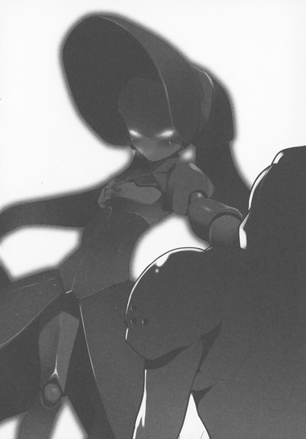
「............!!」
即座に意識が切り替わり、ショコラの指から口を離すと立ち上がる。バイザーが元通り閉まるや否や、小声で鋭く叫ぶ。
「ショコラ、ベル、来たぞ！」
途端、左手を抱えてはぁはぁ息をついていたショコラ・パペッターと、その様子を寝ぼけ眼で不思議そうに見ていたライム・ベルが表情を引き締める。素早く立ち、周囲を見回しながら囁く。
「どこ......？ あたしには見えないけど......」
「クリスタルを割る音が聞こえたんだ。南西......たぶん百メートルくらい」
「そちらには、大学と付属高校の間を通る道路がありますわ。塀を乗り越えずに門から入るなら、ここには西から近づくはずです。......それと、シルバー・クロウ」
突然名前を呼ばれ、ハルユキは反射的に首を縮めた。当然さきほどの所行を糾弾されるものと思ったが、ショコラはハルユキをじろりと睨むだけにとどめ、早口で別のことを言った。
「まだるっこしいので、わたくしを呼ぶときは〈ショコ〉でいいですわ」
「あ、じゃああたしのことは〈ベル〉って呼んで！」
「ぼ......僕は〈クロウ〉で」
チユリとハルユキがそう答えると、軽く頷いて顔の向きを変える。
「了解なのですわ。......来ますわよ」
ハルユキが再び視線を西に向けたのと──一階建ての神殿の屋根上に、ずらりとシルエットが並んだのはほぼ同時だった。その数、四。
「......四人か......」
「しかも......一人、やけにデッカイわね......」
距離があるのでまだ色や形までは視認できないが、それでも右端の一体がかなりの大型アバターなのは見て取れる。シアン・パイル......いやフロスト・ホーンよりもでかいな、とハルユキが考えた時。
「左の二人が......ミント・ミトンとプラム・フリッパーですわ......」
この距離からでも、長年の友達は識別できるのだろう。ショコラが張り詰めた声で囁いた。となると、大型アバターを含む右の二体は、マゼンタ・シザーによってＩＳＳキットを与えられたバーストリンカーか、あるいは────
「............！ 二人とも下がって！」
ハルユキはチユリたちを後退させ、自分は一歩前に出た。右端の大型と、左の二人が揃って片手を持ち上げるのが見えたのだ。あの動きには覚えがある。
──ダーク・ショット。
実際に声が届いたかどうかは解らないが、ハルユキの耳には確かにその技名発声が聞こえた。
清らかな真珠色の空を背景に、三人の手が禍々しい闇のオーラをまとわりつかせる。それは掌の中央に凝集し、一瞬の溜めのあと、漆黒のビームとなって迸る。
その時にはもう、ハルユキも両腕をクロスさせながら叫んでいた。
「──レーザー・ソード!!」
しゅきいぃん！ と歯切れのいいサウンドを響かせ、銀色の光剣がＸ字に伸長する。直後、融合して一本になった闇のビームが到達し、両腕から伸びる光剣の交差点に命中する。
強烈な圧力に、クロウの足底がアラベスク模様の地面を二十センチほど滑った。だがそこで踏みとどまり、短く吼える。
「う......おおおッ！」
両腕を鋭く左右に切り払うと、闇のビームは細く引きちぎられて拡散し、ステージの大気に溶けるように消えた。
〈ダーク・ショット〉は、ＩＳＳキット装着者が〈ＩＳモード〉を発動すると使用可能となるふたつの技のひとつだ。ＩＳモードは、インカーネイト・システム・モードの略。その名のとおり、ノーマルな必殺技ではなく心意技である。
ブレイン・バースト・プログラムの、本来は補助系統であるイメージ制御回路に、鍛え上げられたイマジネーションを流し込んで〈事象の上書き〉を引き起こす。それが心意技のロジックだ。
上書きと言うだけあって、その威力は、デュエルアバターが持つ通常の防御力をほとんど無視してしまう。心意技は心意技でしか防げない、とされる所以だ。
無論、習得は困難を極める。〈威力拡張〉〈射程拡張〉〈防御拡張〉〈移動拡張〉の四種の基本技の一つをマスターするのにも、無制限フィールド内で長い長い修練が必要となる。
しかしＩＳＳキットは、ただ装着するだけで射程拡張技のダーク・ショット、威力拡張技のダーク・ブロウを装着者に付与する。どちらも基本技ではあるが、二つ揃えば万能の攻撃力となる。防御不可能のパンチとレーザーを、しかも必殺技ゲージに関係なく連発されれば、心意技を持たないミドルレベルのバーストリンカーでは対抗する術はない。
ハルユキが、師匠ことスカイ・レイカーの指導を受け会得した〈光線剣〉は心意技だが、カテゴリは射程拡張で、パワーそのものは通常の突き攻撃プラスアルファ程度のものだ。防御に使うには不向きで、しかも敵集団が放ったダーク・ショットは三人ぶんの威力を秘めていたのだが──それでも、ハルユキには確信があった。こんな技には絶対に押し負けない......負けてやるものか、という。
「......何回撃っても無駄だ!!」
両腕に心意の過剰光を宿したまま、ハルユキは五十メートル先に並ぶ襲撃者たちに向けて叫んだ。
「その技はもう何度も見て、何度も弾いてるんだ！進化のない攻撃なんか怖いもんか！」
何度もというのは誇張気味だが、一応これは事実だ。しかし、ハルユキがダーク・ショットを弾きまくったのは、六代目クロム・ディザスターに変異していた時のことで、鎧を封印した今となっては防御力は大幅に落ちている。
されど、心意システムを使った戦闘に於いては、単なる思い込みも極まれば大きな意味を持つ。事象の上書きのせめぎ合いとは、つまるところイマジネーションの強さを競う戦いだからだ。ディザスター化していた時にダーク・ショットを右に左に跳ね返しまくった経験が、ハルユキのイメージを強化している。
それに対して、ＩＳＳキット・ユーザーたちの技は決して強化されない。なぜならその源は彼らの心ではなく、アバターに寄生する異物だからだ。それを喝破するハルユキの台詞だったが、襲撃者たちには理解されなかったようで、一人を除く三人がもう一度右手を持ち上げる。
「無駄だって......言っている!!」
今度はハルユキも同じタイミングで攻撃態勢に入った。左腕を体の前に構え、右腕を肩の上で引き絞る。黒の王ブラック・ロータスの心意技〈奪命撃〉と酷似したモーション。
「......ダーク・ショット」
今度は、生気のない技名発声がかすかに届いた。その声をも上書きする気合で吼える。
「──レーザー・ランス!!」
肩まで銀光に包まれた右腕を全力で突き出すと、眩く輝く心意の槍が金属質の唸りを上げて放たれた。殺到する三本の黒いビームと双方の中間位置で激突し、光と闇の飛沫を振り撒いてせめぎ合う。
──遠いか......!?
──いや、届く!!
ハルユキは歯を食い縛り、あらん限りのイメージを振り絞った。
先に使った〈光線剣〉が、両手から光の剣を高速で伸縮させる格闘戦用の技なら、この〈光線槍〉は時間をかけて凝縮した光を右手から槍として放つ中距離戦用の技だ。百パーセントの威力を保持できる射程距離は現状では二十メートルが限界で、そこから先はパワーが急速に減衰していく。
槍はすでに二十五メートルも伸びているので、実用的な間合いとしては限界と言っていい。だがハルユキは、過日に黒雪姫から心意技には第二段階、つまり〈応用技〉が存在することを告げられた時から、独自に工夫を重ねてきたのだ。
応用技には二つの種類がある。基本の四属性を二つ以上備えた〈複合技〉と、どの属性にも該当しない〈特殊技〉。ハルユキは、シルバー・クロウが苦手とする遠距離戦闘をカバーするため、レーザー・ランスの射程を更に伸ばす方法を模索した。山ほどの失敗を経て辿り着いた答えは──〈剣〉で〈槍〉を切ること。
「く......おおっ......！」
低く声を漏らしつつ、いっぱいに伸びる右腕を少しずつ引いていく。突進しようとする槍を、ゴムのように引き延ばすイメージ。右手が肩口まで戻ったところで、槍の弾力は限界に達する。その瞬間、胸の前に構えていた左手に、短い光の剣を宿す。
「────行けッ！」
短いひと言とともに、左手の剣で、右手の槍の根元を切断。
ズバッ！ と大気を震わせて、解き放たれた光の槍は猛烈なスピードで飛翔した。せめぎ合っていた漆黒のビームを先の攻防と同様に四散させ、その軌道をさかのぼるように襲撃者たちに迫る。
しかし、ハルユキがこっそり〈光線投槍〉と命名しているこの技は、強引なロジックゆえに命中精度が怪しくなる欠点がある。槍は空中でわずかに螺旋を描き、四人の敵が立っている低い神殿の壁に突き刺さった。一拍置いて、神殿よりいっそう白い閃光が炸裂し、建物に大穴を開ける。
ここでようやく、襲撃者の半数──左に立つミント・ミトンとプラム・フリッパーに、薄くだが動揺の気配が生まれた。ＩＳモードの技を弾かれ、反撃された経験などこれまでなかったのだろう。ショコラと同じくらい小柄なシルエットが、じり、じりと後退る。
これまで攻撃に加わらず、腕組みをしていた長身のアバターが、さっと右手を振り上げた。剣状の武器を持っているのか、長く鋭い切っ先が、下がりかけた二人の動きを制する。そこで何か指示があったのだろう、四人は崩壊しかけた神殿から飛び降りると、そのままゆっくりと歩み寄ってくる。
「......クロウ、やるじゃない」
「さすが、と言っておきますわ」
後ろでチユリとショコラがそう囁いたので、ハルユキも小声で答えた。
「まだまだ、これからが本番だぞ......っていうか、ここからはベルとショコラさん、じゃないショコが主役だからな。頼んだぜ」
「おっけ、任せて」
「ですわ」
素早くやり取りをする間にも、四人の襲撃者たちは一直線に歩み寄ってくる。左の二人はまだぎこちない足運びだが、その隣のリーダーらしい長身アバターと、右端の超大型アバターは堂々としたものだ。
五メートルまで近づいたところで、リーダーが再び右手を上げた。全員の足が停まる。
この距離なら、デュエルアバターのディティールも詳細に視認できる。一番左に立つのは、両手に大きな手袋、両脚に大きな長靴を装着する女性型。ニット帽を思わせる頭部を含め、全身の装甲は明るいミントブルーだ。彼女が〈ミント・ミトン〉だろう。
その隣のＦ型は、肩と腰、膝がポップな球形装甲に包まれている。頭にも丸い帽子をかぶり、カラーは落ち着いた赤紫。〈プラム・フリッパー〉に違いない。
二人とも、ショコラ・パペッターと共通する雰囲気を持つ、小さく可愛らしいアバターだ。しかしそのキュートさを、胸部に貼り付く深紅の〈眼球〉──ＩＳＳキットが大きく損なっている。眼球が、餓えたような強い光を放っている一方、本来のアイレンズの輝きは虚ろだ。ハルユキの後ろに立つショコラ──数日前までの親友を、ただ破壊対象としてのみ認識しているように思える。
──キットの干渉力が強くなってるな......。
ハルユキは内心で呟いた。ブッシュ・ウータンが寄生された時は、三日くらいならまだ本来の人格をかなり保っていたように記憶している。対して、ミントとプラムが寄生されたのは同じ三日前のはずなのに、二人の様子は早くも操り人形の如きだ。
ＩＳＳキット端末は、ミッドタウン・タワーに鎮座する本体を通して夜ごと同期されているので、数が増えれば増えるほど装着者への影響力も増大するのだろう。
掛け値なしに、これは一刻を争う事態なのだ。その認識を噛み締めつつ、ハルユキはミントたちの右に立つ、リーダーと思しき長身のアバターに眼を向ける。
高さはあるが、体も四肢もシルバー・クロウより細い。全身が薄いフィルム状の装甲に覆われ、まるで包帯を巻き付けているように見える。顔は口許以外が完全に隠れているので性別が解りにくいが、体のラインと雰囲気からして恐らくＦ型。両手に一本ずつ、奇妙な形状の武器を持っている。
カテゴリとしては剣なのだろうが、極端に先細りの片刃で、刀身と握りの間がやけに長い。握りは巨大なナックルガードと一体化し、歪んだ円形を成している。装甲色は、明るい赤紫色。
そして、最後の一人は──異様、としか言えない姿だった。
とてつもなく大きい。身長は、リーダーの赤紫色よりも遥かに高く、二メートル五十センチはあるだろう。横幅も一メートル半を超える。しかも、ダークグリーンの丸っこい体には首や腰のくびれが一切なく、ただ上部が少し先細りになっているのみ。
つまりほぼ完全な卵形で、側面と下部から突き出す短い手足と、黄色に光るアイレンズがなければ、デュエルアバターにすら見えないところだ。卵形ボディの中心部分に貼り付くＩＳＳキットも、やけに小さく思える。
ハルユキたちが素早く敵集団を見分しているあいだに、向こうも同じことをしたのだろう。赤紫色のリーダーが、フィルム装甲に覆われた顔でそこだけ露出している口許をニヤリと吊り上げ、言った。
「その銀色とツルツル頭は、どうやらネガ・ネビュラスの〈鴉〉ね？そして後ろの黄緑色が〈魔女〉。予定外のお客様だけど、歓迎するわ。ようこそ、世田谷エリアに」
ハスキーな声と口調から、相手は少し年上の女性だろうと直感する。対戦相手としては最も苦手な人種だが、ここで萎縮してはいられない。下腹に力を込め、言葉を返す。
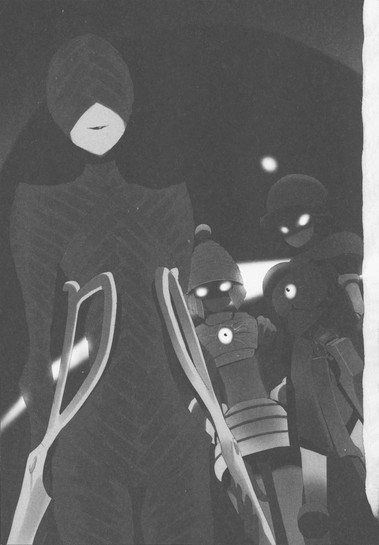
「そういうあんたは、〈マゼンタ・シザー〉だな」
色と態度からして間違いなかろうと言い切ったのだが、そこでふと一部分について自信がなくなり、口ごもりながら続ける。
「......あれ、いや、マゼンタ・シザーズ......だったっけ......」
背後でチユリがため息をついた気がしたものの、振り向いて教えて貰うような場面ではない。確か〈シザー〉だったはずだが、それがハサミのことなら、必ず複数形のｓｃｉｓｓｏｒｓになると英語の授業で習った記憶がある。
ここが通常対戦フィールドなら体力ゲージの下に名前が出るのに、とハルユキが懊悩していると、マゼンタ色のアバターはもう一度妖艶な笑みを浮かべて囁いた。
「〈シザー〉で合ってるわよ、ボク。教えてあげたんだから、もう二度とＳはつけないでね。ワタシ、〈二つで一つ〉な英単語が大っ嫌いなのよ」
「......シューズとか、パンツとか？」
つい釣り込まれてそんなことを言ってしまうと、マゼンタ・シザーはにっこり頷いた。
「そうそう、チョップスティックスとかね」
くすくす喉声で笑いながら続ける。
「そういうモノたちって、一つずつだと無価値扱いなワケよね。片方だけの靴、一本だけの箸......ヒドイ話だと思わない？ペアでなくなった瞬間、どんなに綺麗で傷ひとつついてなくてもゴミにされちゃうなんて」
マゼンタが何を言わんとしているのか解らず、黙り込んだハルユキに代わって、背後のチユリが鋭い声を発した。
「そのことが、ＩＳＳキットを世田谷エリアのバーストリンカーにばらまいてる......いいえ、無理やり感染させてることと、何か関係あるの？」
赤紫色のアバターは、リボン状装甲でぐるぐる巻きになった顔を動かし、再び微笑んだ。
「あると言えばある......のかしら？ コレが全バーストリンカーに行き渡れば、ワタシの嫌いな〈ペア〉って概念が加速世界から一つ消えるしね。誰もが同じ技を使うなら、タッグの相性とか意味なくなるワケだから」
「そ......そんな無個性な対戦、面白くもなんともないでしょ！」
チユリが叫ぶと、マゼンタは奇妙な剣を握った両手を、やれやれとばかりに広げた。
「個性があるから面白い？ なら......誰からも嘲笑われ、嫌われるような個性を持って生まれてきたバーストリンカーはどうすればいいのかしら？例えばこの、〈アボカド・アボイダ〉みたいな？」
剣の、輪っか状のグリップに左手首を通してぶらさげると、フリーになった掌で濃緑色の卵アバターをそっと撫でる。すると、見上げるような巨体がかすかに揺れ、ごろごろという低い声がどこからともなく漏れる。
ブレイン・バースト・プログラムが自動生成するアバターは千差万別だ。おおまかな人型、という以外には共通項が一切無いとさえ言っていい。必然的に、大多数のバーストリンカーが格好いい、可愛いと感じるデザインのアバター、またはその逆のアバターが生まれてくることになる。前者は人気者になりやすく後者はその逆、という傾向は残念ながらこの加速世界にも厳然と存在する。
「............誰からも、ってわけじゃないだろ」
チユリが言い返すより早く、ハルユキは言った。
「事実、いま隣にあんたがいるじゃないか、マゼンタ。その言い方なら、あんたたちはＩＳＳキットが出回る前からの仲間なんだろ？」
「残念ながら違うわ。ワタシがアボカドと出会ったのはつい最近よ。バーストリンカーになったばかりの彼が、何人もに集中攻撃されて、ポイント全損する寸前にね。襲ってる奴らの中には、アボカドの〈親〉もいたわ。こんなキモイ〈子〉いらねーって、ゲラゲラ笑ってたっけ」
「............!!」
ハルユキたちが言葉に詰まると、緑色の巨体から再び「ごろろ......」と唸り声が漏れる。それが怒りではなく悲しみの声であることに、ハルユキは否応なく気付かされる。
「ワタシは、あと一回負ければ終わりってところでアボカドに乱入して、ＩＳＳキットをあげたわ。ソコからのアボカドの大逆転劇は見ものだったわよ。レギオンメンバー特権で乱入回数制限を解除してたのが運の尽きで、連中の半分がポイント全損......アボカドの〈親〉もね。どう？これでもまだ、バーストリンカーに個性が必要だって言える？誰とでもペアを組んでもらえるリンカーと、決して組めないリンカーがいて当然だって思える？」
マゼンタはアボカドの横腹に掌を当てたまま、軽く肩を上下させる。
予想もしていなかった問いを突き付けられ、ハルユキは再び沈黙するしかなかった。
加速世界にまで勝ち組、負け組という価値観を持ち込むマゼンタ・シザーは間違っていると思う。しかし同時に、最初にアボカド・アボイダを見た時に、異様、異質、という印象を抱いてしまったのも事実なのだ。あの時点でハルユキは、アボカドを同じバーストリンカーではなく、倒すべき怪物としか思っていなかった。
沈黙を破ったのは、これまでひと言も喋らなかったショコラ・パペッターだった。
「──〈親〉を全損させたのは......本当にアボカドさんの意志ですかしら？」
「......どういう意味、チョコちゃん？」
余裕たっぷりの笑みを浮かべたままのマゼンタに向けて、小柄なチョコレート色のアバターは、敢然と一歩前に出る。
「ＩＳＳキットが奪うのは、バーストリンカーの個性だけではありませんわ。装着者の優しさや思いやりも奪い取って、代わりに憎しみを与える。仮にあなたの目論見どおり、全バーストリンカーがキット装着者になっても、加速世界から不平等や疎外はなくなりませんわ、絶対に！」
「......どうしてそんなコトが言えるのかな？ チョコちゃんのお友達は解ってくれたわよ？小さな箱の中に閉じこもってるよりも、強くなって、戦う力を手に入れて、世界を変えるコトのほうがずっと楽しいって」
「嘘ですわ!! それはあなたの......あなたひとりだけの欲望です!!あなたはその欲望を他のバーストリンカーに無理やり感染させてるだけですわ!!それともう一つ............わたくしをチョコと呼んでいいのは、ミンミンとプリコだけですわ!!」
最後のほうは、涙混じりの絶叫だった。
その言葉を聞いて、マゼンタの後ろに生気なく並ぶミント・ミトンとプラム・フリッパーの二人が小さく体を揺らした気がした。だが直後、胸に貼り付く眼球がぎらりと赤く輝き、再び彼女たちのアイレンズが虚ろになる。
「............残念だわ、ショコラ・パペッター。結局アナタも〈手術〉してあげるしかナイってコトね」
マゼンタ・シザーは、冷ややかさを増した声でそう呟くと、アボカドの体から左手を離した。手首に引っかけていた剣をくるくる回転させ、再び握る。鋭利な切っ先が冷たく輝く。
「シルバー・クロウ、ライム・ベル。ソコで黙って見ていれば、アナタたちには何もしないわ。キットの〈種〉も一つしか用意してないしね。でも、もし邪魔するなら......ワタシたちが飽きるまで、何度も何度も殺しちゃうわよ？」
その言葉に、ハルユキは反射的に周囲の地形を思い浮かべる。この大学から、荒玉水道道路を挟んで桜上水駅のポータルまでは、直線距離で約八百メートル。シルバー・クロウの翼ならひとっ飛びだが、仮にマゼンタ・シザーたちの戦力が想定を遥かに上回るレベルだった場合、三人が揃って撤退するにはやや遠い。
しかしそれ以前に、ショコラ・パペッターは逃げようとしないだろう。繰り返し殺され、ポイントを全損しようとも、親友二人を〈断罪の一撃〉でＩＳＳキットの支配から解放するという覚悟を決めているのだ。
その悲劇的結末を回避するためのただ一つの希望が、チユリ立案のミント＆プラム奪還作戦だ。そして作戦の可否は、二人を生存させたまま、マゼンタ・シザーとアボカド・アボイダを倒せるかどうかにかかっている。
マゼンタの語ったアボカドの過去に、心を揺さぶられたのは事実だ。しかしこの状況で対峙した以上、戦う以外の道はない。憎しみではなく、バーストリンカーの存在証明──〈対戦〉を通して語り合うために。
「悪いけど、黙って見ているわけにはいかないな。オレたちにも、あんたと戦わなきゃならない理由があるんでね」
ハルユキがそう言い切ると、マゼンタは微笑みを浮かべたまま小首を傾げた。
「............へえ？ どんな？」
「あんたが先週、オレたちの大切な仲間にＩＳＳキットを寄生させたこと、忘れたとは言わせないぞ」
「ああ、シアン・パイルね。あのコには期待してたのになあ......まさかシンクロ中に変心して、本体を攻撃するなんてガッカリだわ。それに、あのコの件で文句を言われるのはお門違いよ。だって、わざわざ世田谷まで来てキットを欲しがったのはシアンなのよ？ワタシはあのコの求めるまま、カード状態でプレゼントしただけだわ」
「だとしても、あんたには解ってたはずだ。たとえカードに封印されてても、キットが持ち主の心に囁き掛けて、装着するよう誘いかけることを。......多分、あんた自身も、それを経験したんじゃないのか」
「..................」
ハルユキの言葉に、マゼンタはすっと唇の微笑を消した。両手に一本ずつぶら下げた奇怪な剣を持ち上げ、切っ先をキン、と軽く打ち合わせる。
「......今のは、ちょっとカチンと来たわね。ワタシは、ワタシの意志によってコレを受け入れたのよ。加速世界を、あるべき姿に正すタメにね」
マゼンタが体の前で交差させた剣をゆっくり左右に開くと、まるでそれが合図だったかのように、胸に巻かれたリボン状装甲が一部はらりとほどけた。露出したアバター素体の表面で、カッと深紅の瞳を見開くのは、もちろんミントたちの胸に貼り付くのと同じＩＳＳキットだ。しかし、血液を思わせる色合いはより深く、眼球のサイズも一回り大きい。
マゼンタの顔は幾重にも巻かれたリボンに隠されているため、まるでキットが彼女自身の眼であるようにも思える。無機質で、それでいて深い憎悪を秘めた〈視線〉でハルユキたちを一瞥すると、マゼンタは冷ややかさを増した声で告げた。
「やっぱり、ボクちゃんたちには消えてもらわなきゃならないみたいね。二人が加速世界からいなくなれば、シアンもワタシのところに戻ってくるでしょう」
彼女がＩＳＳキットを身に宿してからすでに十日以上が経つはずなのに、今なお自我をほぼ完全に保っているように見えるのは、恐らく強固極まる意志力ゆえか。身のうちに湧き起こりそうになる畏れを振り払い、ハルユキは叫んだ。
「そ、そんなことがあるもんか！ あいつは何があろうと、二度とお前のところになんか戻らない！」
「なら、試してみましょう。......お喋りはそろそろ飽きたわ、望みどおり、ボクの相手はワタシがしてあげる。ミント、プラム、二人でライム・ベルをやりなさい。アボカドは、ショコラを食べちゃっていいわよ」
最後の指示に、ハルユキたちがぎょっとする間もあらばこそ──。
マゼンタ・シザーは右手の剣を高々とかざし、鋭く振り下ろした。左側の元〈プチ・パケ〉の二人と、右側のアボカド・アボイダが動き出す。
「ベル、ショコ、作戦どおりだ！」
「任せて！」
「ですわ！」
ハルユキたちも素早く言葉を交わし、行動を開始する。まずはショコラが両手を前に突き出し──
「〈カカオ・ファウンテン〉!!」
技名発声とともに、十本の指からピンク色の光が広範囲に降り注ぐ。ぼこぼこっと音を立てて、地面から大量のチョコレートが湧き出す。それはフィールドを直径三十メートルにもわたって覆い尽くし、ミント、プラム、アボカドの三人は足を取られてよろめく。
「ちっ！」
舌打ちしてマゼンタ・シザーが飛び退き、更に大きく下がってチョコ池ならぬチョコ湖を避けた。当然ハルユキの立ち位置も効果範囲内だが、技の発動と同時に翼を使って十センチほど浮き上がっている。
背後のベルとショコラも後退して距離を取ると、すかさず次のアクションを開始。ベルが左手のクワイアー・チャイムを振りかざし、大きく回転させながら──
「〈シトロン・コール〉！」
叫び、振り下ろす。軽やかな鐘の音に乗って放たれる光の対象は、すぐそばのショコラだ。事前にグラウンド中のエネルギー・クリスタルを壊してチャージし、フルパワーの〈カカオ・ファウンテン〉で消費した必殺技ゲージが、対象の状態を秒単位で巻き戻す〈シトロン・コール・モードⅠ〉の効果によって再充填されていく。
あっという間にフルチャージされるや否や、ショコラが二度目の技名コール。
「〈パペット・メイク〉!!」
びしっ、とチョコ湖に向けられた指の数は四本。滑らかなミルクチョコの表面が四箇所盛り上がり、中から飛び出したのは、もうお馴染みのチョコ人形略してチョペットだ。二体がミントとプラム、もう二体がアボカドに向かって飛びかかり、足を取られて満足に動けない三人の周囲をちょこまか移動して翻弄する。
遠隔・間接型デュエルアバター、ショコラ・パペッターの能力は、まず前提技の〈カカオ・ファウンテン〉によってフィールドにチョコレートを湧き出させ、敵の移動を阻害すること。更に必殺技〈パペット・メイク〉でチョコ池から自動型戦闘人形を作り出し、指示した目標を攻撃させることもできる。
チョコ池の規模とチョペットの数は、必殺技発動時に伸ばす指の本数で調整する。指十本でチョコ池は直径三十メートルにも達するが、必殺技ゲージはフル状態から全消費してしまう。つまり、最大の池を作ると、もう一度ゲージを溜めない限りチョペットは呼び出せないのだが、シトロン・コールとのコンボならその制限を突破できるわけだ。
四体のチョペットを作ったことでチョコ池のサイズは四割減少したものの、ミント・ミトンたちを足止めするには充分なサイズだ。まずは作戦の第一段階が成功したことを確認し、ハルユキは叫んだ。
「二人はアボカドを頼む！ オレはマゼンタと戦う！」
翼を広げ、チョコ池の表面ぎりぎりを全力飛行。アボカドとプラムの間をすり抜け、奥のマゼンタ・シザーに肉迫する。
「小癪なマネをしてくれるわね......！」
赤紫色のアバターは、ハルユキを迎撃するべく両手の剣を構えた。肉厚の刃がギラリと輝くが、構わず突っ込む。シルバー・クロウはメタルカラーの中では対物理防御が低いほうだが、それでも切断属性攻撃への耐性はたいがいのノーマルカラーより高い。左右から同時に振り下ろされる剣を、両腕の装甲で受ける。
ギィン！ と甲高い金属音が響き、飛び散った火花が両者の装甲を明るく照らす。さすがにノーダメージとはいかず、視界左上の体力ゲージが数ドット微減するが、無視して翼をありったけの力で振動させる。
「おおおッ!!」
ハルユキの咆哮に圧されたかのように、マゼンタの足が浮いた。機を逃さず、密接したまま突進を再開。グラウンドを一直線に横切り、マゼンタたちが最初に出現した神殿まで押し戻す。ハルユキが〈光線投槍〉で開けた穴のすぐそばに、轟音とともに激突。マゼンタの体が白い壁に半ば埋まり、唇から「ぐっ」という呻き声が漏れる。
反動を利用して少し距離を取ったハルユキは、相手が自由を取り戻す前に勝負を決めるべくラッシュを開始した。
「らああっ！」
ほとんど着地せず、両翼の瞬間推力を利用して両手両足をマシンガンのように繰り出す〈空中連続攻撃〉がマゼンタの全身に炸裂し、ボディをどんどん壁に埋め込んでいく。打撃の約半数は二本の剣で防御されるが、ハルユキの手足は四本だ。ガードを抜けたパンチやキックが、赤紫色のリボン状装甲を次々に打ち砕く。
本体の防御力がさほどでもないのは、最初から予想していた。赤紫という色は、カラー・サークル上では少しだけ近接よりの遠隔。格闘戦では撃たれ弱いはずだ。
──でも、待て。それなら、なぜマゼンタ・シザーの武器は剣なんだ？剣使いなら、色はずっと青寄りになるはず............
ラッシュを続けるハルユキの脳裏に、ふとそんな疑問が瞬いた、その瞬間だった。
マゼンタが、両手に握る剣を、体の前で交差させた。バチィン！と金属同士が嵌合される音。二本の剣だったものが、瞬時に異なる存在へと変わる。ひとつのリベットを支点にあぎとのように開く二枚の刃と、大きな環状のグリップ。
──これはもう、剣じゃなく、ハサミだ！
とハルユキが気付くのと、
「いけませんわ！ 避けて!!」
後方からショコラの声が届いたのは同時だった。
「くっ......！」
モーションの途中だった右回し蹴りを無理やり中止し、翼でバックスラストをかける。マゼンタは両腕を動かし始めるが、その時にはもうハルユキは三メートル以上離れている。考えてみれば、剣もハサミも間合いは同じ──いや、両手で操作しなければならないぶんハサミのほうが狭いのではないか。
だが、マゼンタの唇には、薄い微笑がある。両腕がゆっくりと、確信を秘めた動きでハサミの刃を閉じていく。最大で一メートル近く開いていた刃が、七十センチになり、五十センチまで狭まった時。
ガリッ、と耳障りな音が、アバターの体を通して聞こえた。ひんやりと冷たい金属の感触が両脇腹に生まれる。慌てて眼を向けるが、そこには何もない。しかし、硬質な圧力はみるみる高まり、冷たさは痛みへと変わる。
「な............!?」
驚き声を上げ、更に大きく飛び退くが──その寸前、金属が金属を切り裂く異音が響いた。シルバー・クロウの腹を、赤いダメージエフェクトのラインが横切る。眼も眩むような激痛が神経を駆け巡り、悲鳴を上げそうになるが歯を食い縛って耐える。
ちらりと確認した体力ゲージは、いまの一撃で二割近くも減少。バックダッシュが半秒遅ければ、アバターを両断されていてもおかしくないダメージだ。しかしそれ以前に、なぜ攻撃が届いたのか。ハサミの刃とクロウの体は四メートル近くも離れていたのに。
「......アビリティ〈遠隔裁断〉。ワタシにこの技を使わせたからには......あっさりとは死ねないわよ、ボク」
囁き声でそう言ったマゼンタ・シザーが、再び二枚の刃をいっぱいに開いた。分離していた時は〈小さめの剣〉だったのに、合体した今となっては凶悪なまでに〈巨大なハサミ〉だ。桁違いに存在感を増した武器が、再度じゃきん！と寒々しい音を放って閉じられる。
ハルユキは咄嗟に翼を折り畳みつつ右へ挑んだが、それでも左腕を浅く切断され、少し遅れて焼け付くような痛みが襲う。体力ゲージが更に五パーセント減少。
じゃきん、じゃきん、じゃきじゃきじゃきん！マゼンタは神殿の壁に埋まり込んだまま、立て続けにハサミを開閉させる。ハルユキは懸命に切っ先の延長線上から逃れようと動くが、たちまち全身に無数の切り傷が刻まれていく。
飛行アビリティで上空に逃れたいのはやまやまだが、それは悪手だと直感が囁く。なにせ、ハサミの切断力がどこまで届くのか解らないのだ。翼を展開するとシルバー・クロウの前面投影面積は倍近くに増える、つまり的が大きくなってしまうので、そこを狙われて翼を片方でも切断されたりしたら作戦は失敗したも同然だ。
次々に襲い来る不可視の刃を地上で懸命にかいくぐりながら、ハルユキは内心で唸っていた。
これは確かに赤系の、しかもかなり強力な遠隔攻撃だ。
ハサミの延長線上にある標的を切断するという力は、見方を変えればそこそこ連射力のあるスライサー・ガンと同じかもしれない。しかし問題は、攻撃力が眼に見えないということだ。照準はハサミの向きから推測するしかなく、また切断力が発生するタイミングはマゼンタ・シザーが自在に調整できる。フェイントも乱射も思うがままだ。
しかし、これほど強力な技を持っているのなら、なぜマゼンタは最初から使わなかった──それどころか、ハサミを二本に分離していたのか。
そんな疑問を感じながらも、ハルユキが懸命の回避を続けていた時だった。
いきなり、横合いから目の前に割り込む人影があった。シンプルな体型と眼も口もない顔、全身は焦茶色。ショコラ・パペッターが作り出す戦闘人形、〈チョペット〉だ。両の拳しか武器を持たない人形は、ハルユキを背後にかばうかのように、果敢にマゼンタに向かっていく。その行く先で、ハサミが冷酷に刃を閉じる。
じゃきっ！ という金属音と同時に、チョペットの首に赤いラインが走った。そのまま人形の頭が転げ落ちる光景を否応なく予期するが、しかしそうはならなかった。
いったんは頭が胴から離れたのだが、切断面がとろりと溶け、あっという間に再融合したのだ。思い返してみれば、最初に戦った時、チョペットたちはハルユキの貫手にもチユリのベル攻撃にもまったくダメージを受けた様子はなかった。恐らく、全身がチョコレート製であるという特性によって、切断や貫通属性の攻撃は軒並み無効化するのだ。
闇雲に突っ込んでくるチョペットに向けて、ハサミが苛立ったように激しく打ち鳴らされる。人形の体が瞬時に五、六個のパーツに分断されるが、やはりすぐにくっついてしまう。
唇を歪めたマゼンタが、両手で構えていたハサミを右手に持ち替えると、左拳を握った。
胸に貼り付くＩＳＳキットが、深紅の光を放つ。全身が薄く闇のオーラに包まれ、それはすぐに左手へ凝集する。
圧倒的な威力を予感させる漆黒の波動を見ても、チョペットは怯む様子もなかった。無言で地面を蹴り、こちらは素のままの拳を振りかざしながら飛びかかる。
唇に再び冷笑を浮かべたマゼンタが、技の名を囁いた。
「〈ダーク・ブロウ〉」
分厚い闇をまとった左拳が、大気と地面を震わせながら撃ち出された。振り下ろされるチョペットの右拳を、空中で迎撃。打撃は効かないはずのチョコレート製の腕が、溶けるのではなく接触面に呑み込まれるように崩壊していく。ＩＳＳキットが生み出す心意技の属性は〈虚無エネルギー系〉。さしものチョコ人形も、これには抗う術もない。
チョペットの右腕は、瞬時に肘から肩までが消し飛んだ。しかしダーク・ブロウはそこで止まらず、人形の胴体から頭部をも闇に呑み込んでいく。ズワッ、と重い振動音を響かせて拳が振り抜かれると、残る下半身もチョコレートの液体に戻り、空中に飛散する。
茶色の霧を通して、その向こうを見たマゼンタ・シザーの口が、大きく開かれた。
チョペットを追うように突っ込んできていたハルユキに、ようやく気付いたのだ。左手が、再度ダーク・ブロウを撃つか、それともハサミを握り直すか迷うように空中を掻く。しかし、どちらかが選択されるよりも早く。
──お前の犠牲、無駄にしないぞ！
チョペットに向けてそう念じながら、ハルユキは右の手刀を鋭く振り下ろした。
「〈レーザー・ソード〉!!」
指先から伸長した銀色の光剣が、マゼンタの左腕を肘の上で薙いだ。わずかなタイムラグを経て、そのラインで腕が上下にずれる。音もなく落下した左腕は、アラベスク模様の地面に一度バウンドしてから、細かい破片を散らして消滅する。
「くうっ............」
マゼンタ・シザーが、低く呻きながら体を折った。痛みに耐えているのだろう相手に向けて、ハルユキは言った。
「これでもう、そのハサミは使えないぞ。片手じゃ開閉できないはずだ」
「............だから嫌いなのよ、〈二つで一つ〉は。大っ嫌いだわ、ハサミも、靴も、左右対称な人間の体も」
それが、マゼンタの答えだった。言葉の中に、彼女が最初からハサミを使おうとせず、加速世界からタッグ・ペアという概念を消し去ろうとすることの理由が含まれている気もしたが、ハルユキが深く考えるよりも早くもう一度唇が動いた。
「片腕を奪えばワタシをほぼ無力化できるって気付いたのは褒めてあげるわ、ボク。でもね......一つだけ、大きな勘違いをしているわよ」
「か......勘違いだって？ 何をだ......？」
「それはね......敵の主力がワタシだと判断したコトよ」
「だって......どう見ても、あんたがリーダーだったじゃないか。色々指示してたし......」
「リーダーがいつも一番強いとは限らないでしょ？あなたをココまで引きつけておければ、ワタシたちの勝ちってコト。ほら、後ろを見てご覧なさい」
マゼンタがそう言ってにっこり笑った、その直後。
ハルユキの耳に、チユリの悲鳴じみた叫び声が届いた。
「ク......クロウ!! どうしよう......コイツ、殴っても殴っても全然効かない！早くしないとショコちゃんが......！」
素早く振り向いたハルユキの眼に映ったのは──。
仁王立ちになる超大型アバター、アボカド・アボイダと、その卵形の体に繰り返しクワイアー・チャイムを打ち付けるライム・ベル。
そして、アボカドがぱっくり開けた巨大な口に胸まで咥え込まれ、苦悶の声を上げるショコラ・パペッターだった。
５
「くっ......う......あああっ............」
ショコラの細い悲鳴が、ハルユキの耳にも届いた。
「......アボカドの口に歯はないけど、代わりにどんなバーストリンカーの装甲も舐め溶かしてしまうわ、時間差はあるにしてもね。チョコちゃんのチョコレート装甲は、ずいぶん溶けやすそうよ？早く行ってあげたら？」
神殿の壁に寄りかかり、部位欠損ダメージの苦痛に耐える表情でマゼンタが囁く。
ハルユキは赤紫色のハサミ使いをちらりと見て、とどめを刺すべきか否か一瞬迷った。
だが、片腕ではハサミを操れず、最大の武器である〈遠隔裁断〉は発動不能だ。右手で遠距離用心意技〈ダーク・ショット〉を撃ってくる可能性はあるが、そのためにはハサミを捨てねばならない。根拠はないが、彼女はそれをしないだろうという確信がある。
「......言われなくても！」
叫び返し、ハルユキは身を翻した。全力疾走に翼の推進力も足した猛スピードで、たちまちアボカド・アボイダの巨体に肉迫する。
「ショコを......離せええ────ッ!!」
吼えながら右足で地面を蹴り、左足の鋭いつま先をまっすぐ突き出すと、翼の推力と舵角を調整して全身を高速でスピンさせる。命中精度は落ちるが、威力と貰通力が倍増するため大型アバターに対して有効な技、〈螺旋蹴り〉。
ドリルのように回転する左足が、アボカドのさして厚みのなさそうな濃緑色の装甲に触れ、呆気なく突き破った。どぼおっ！と重く湿った衝撃音が轟き、クロウの足はアボカドの背中右側に深々と突き刺さる。
だが、それだけだった。卵形の超大型アバターは、ボディを数十センチも貫かれながらも、何も感じていないかのようにショコラを咥えた口をもぐもぐ動かし続けている。痛覚二倍の無制限フィールドでこんな大ダメージを受けたら、激痛のあまり立っていることもままならないはずなのに。
ハルユキは驚愕しつつも、翼で逆進をかけて左足を抜いた。普通ならダメージエフェクトの光が鮮血のように迸るべきシーンだが、アボカドの背中に残る大穴からは、火花ひとつ零れない。それどころか、表面より薄いグリーンの緩衝物質がたちまち穴を埋め、薄い装甲まで再生するではないか。
「い、いまの一撃でもダメージが通らないのか......!?」
呻くハルユキに、チョコ池の中をよろめきながら走ってきたチユリが、焦りの滲む声で答えた。
「そうなの、蹴っても殴ってもすぐ再生しちゃうの！たぶん物理攻撃は全部吸収されるんだわ！」
「そんな、チョペットじゃあるまいし......」
思わずそう言ってから、ふと気付いて素早く周囲を見回す。
十メートルほど離れたところでは、ミント・ミトンとプラム・フリッパーの二人が、周囲を素早く動き回るチョペット二体を排除しようとしているが、地面を覆うチョコレートに足を取られて満足に動けないようだ。
同様に、アボカドを妨害するチョペットも二体いたはずなのだが、その姿は見えない。おそらく片方はハルユキの援護に来たのだろうが、もう一体は──
「......こいつに食べられちゃったの！」
ハルユキの思考を読んだチユリが、早口で叫んだ。
「た......食べた!?」
「最初にショコちゃんが言ってたでしょ、それがチョペットの弱点だって。アボカドが空気ごとチョペットを吸い込んでぽりぽり食べちゃったから、追加でチョペットを作ろうとして近づいたら、ショコちゃんまで......」
そこで、二人揃ってアボカドの巨体を見上げる。二メートル近く上にある大きな口からは、苦悶の表情を浮かべるショコラの上体がはみ出している。
「くっ......！」
ハルユキは歯噛みしつつチョコ池から離陸し、アボカドの口のすぐ前でホバリングすると、ショコラの両腕をしっかり掴んだ。翼を全力で振動させて引っ張り出そうとするが、一センチたりとも動かない。それどころか、ショコラの肩関節からダメージ発生を示す赤いスパークが飛び散る。
「ううっ......！」
か細い悲鳴を聞き、ハルユキは慌てて推力を止めた。だが、痛みを堪えるショコラの表情はそのままだ。おそらくアボカド・アボイダの口中では、花弁に似たアーマースカートが今まさに溶解されているのだろう。
差し渡し一メートルはありそうな口の上で、対照的に小さな──と言っても直径五センチはあるが──アイレンズが小刻みに明滅している。光の増減に合わせて、卵形ボディの奥から重低音の声が響く。
「ショコラ......好き......好き......」
ハルユキは一瞬絶句してから、ショコラの腕を掴んだまま叫んだ。
「す......好きだからって、食べなくてもいいだろ！仲良くなりたいなら、ちゃんとそう言えば......」
そこで、思わず言葉に詰まる。たとえば自分にそれができるかと考え、確実に不可能であることに気付いてしまったからだ。日下部綸を文化祭に誘うだけで脱水症状を起こしかけたのに、それ以上のアクションなど起こせるわけもない。
だいたい、アボカド・アボイダは現在、負の感情を増幅するＩＳＳキットに寄生されているのだ。言葉による説得が通じる精神状態ではないはずだ。
物理攻撃は吸収される。ショコラを強引に引きずり出すこともできない。いっそ、アボカドがチョペットをそうしたように、この巨体をチユリと二人で食べる？まさか！
苦慮するハルユキの耳に──切れ切れの声が届いた。
「熱......か、凍結プラス打撃、ですわ............。それが、チョペットの本当の弱点......きっと、アボカドさんも............」
声の主は、胸から下を丸ごと呑み込まれているショコラだ。ただでさえあまり強度のなさそうなチョコレート味の装甲は、恐らくアボカドの口中でほぼ溶解されてしまっているだろう。ショコラが死亡してしまえば、ミントとプラムを解放する作戦は失敗したも同然だ。体力ゲージはもう半分も残っているまい。
「わ、解った！ もう少し耐えてくれ！」
ハルユキは叫び、ショコラの腕を放して少し距離を取ると懸命に考えた。
シルバー・クロウもライム・ベルも、炎熱系や冷凍系の技を一切持っていない。この戦場に〈劫火の巫女〉アーダー・メイデンがいればアボカドの巨体をあっという間に焼き尽くせるだろうが、もちろんポータルから離脱して現実世界で謡に連絡しているような余裕はない。
「ハル！ レーザー・ソードはだめなの!?」
ショコラの言葉を聞いたのだろう、地上でチユリがそう叫ぶが、ハルユキは小刻みにかぶりを振る。
「あれ、熱くないんだ！」
心意技〈光線剣〉は、光線と名前をつけてはいるが属性はほぼ純粋なる〈切断〉だ。熱は一切発生しない。無論、〈貫通〉属性の槍も投槍も同様。アボカドをそれらで攻撃しても、軟質装甲はあっという間に再生してしまうだろう。
あるいは、再生を上回る速度で物理攻撃しまくれば、いつかは中身（存在するとしてだが）に届くのかもしれない。だが問題は、その過程でアボカドの必殺技ゲージが際限なく溜まってしまうことだ。ショコラの装甲を溶かす力が強化されたり、何か新たな技を発動される危険は冒せない。
──ここが世紀末ステージだったら、燃えるドラム缶が山ほどあるのに。霊域ステージじゃ火種なんかどこにも............。
そこまで思考が至った瞬間、ハルユキはカッと両眼を見開いた。視線を巡らし、グラウンドの東にある小さな神殿を凝視。すぐにショコラに向き直り、抑えた声で指示する。
「ショコ、きみの友達を......クルちゃんを呼ぶんだ！あいつなら、本物のレーザーを撃てるはずだ！」
それを聞いたショコラは、いっとき苦痛を忘れたかのように桃色のアイレンズを見開いた。だが、すぐに首を横に振る。
「だ、だめ......ですわ。クルちゃんは、あなた方を、襲ってしまい......ますわ......」
「大丈夫！」
ハルユキは大きく息を吸い、腹に力を込めてその先を叫んだ。
「オレが、レーザーを反射する！」
「............!!」
再び絶句したショコラだったが、ちらりと視線を左上方に動かし、自分の体力ゲージを確認すると、ゆっくり......しかし深く頷いた。
「わかり......ましたわ。信じます、シルバー・クロウ」
続けて、なけなしの気力を振り絞るように両拳を握ると、眼を閉じて叫ぶ。
「......助けて、クルちゃん......!!」
反応は即時だった。
東の神殿から、くるるるる......！ と甲高い鳴き声が聞こえるや否や、アルマジロめいた姿がグラウンドに走り出てくる。小獣級エネミーとは言え。頭から尻尾の先までは軽く二メートルを超える。ほとんどのデュエルアバターよりはずっと大きな体躯が、地響きを上げて白い地面を疾駆し始める。
「ショコ、あと二十秒がんばれ！」
叫び、ハルユキは翼を広げた。アボカドから離れ、全速でラーヴァ・カーバンクルに向かうハルユキを、チユリの声が追いかける。
「回復は任せて！」
「頼んだ！」
短く応じ、ほんの数秒飛んだところで着地。わずか二十メートル先には、怒りに燃えるエネミーの両眼が赤く煌めいている。
「くるるううううう!!」
鋭く咆哮するカーバンクルは、明らかにハルユキをご主人様の敵と認識している。短い四肢を踏ん張って停止すると、頭を低く下げる。その額に埋まる楕円形のルビー内部に、ちかちかと真紅の光点が瞬く。その様子は、赤の王スカーレット・レインの主砲発射準備エフェクトに酷似している。
無制限中立フィールドに存在するモンスター、つまりエネミーは、帝城を守護する超級エネミー〈四神〉を別にすると四つのクラスに分類される。
最も強力なのは、各地の大型ダンジョン最深部や有名ランドマークを縄張りとする神獣級。数十人規模の手練れバーストリンカーが、周到な準備と作戦を整えて挑んでも、わずかなミスで全滅しかねない化け物だ。神獣級をソロで倒すことに成功したのは青の王ブルー・ナイトただひとりと言われ、彼には〈神獣殺し〉という二つ名が献上されている。
その次が、巨獣級と呼ばれる大型エネミーである。二十人程のパーティーを組めば安定して狩ることも不可能ではないが、もちろん緊密な連携行動が要求されるし、巨獣級は幹線道路を移動していることが多いので、少人数でうっかり出くわしてしまった不運な者たちがタゲられ即死する悲しい出来事も往々にして起きる。緑の王グリーン・グランデがこの巨獣級をソロで倒し続け、獲得した膨大なポイントをカードアイテムに替えて他のバーストリンカーに再供給していることを知る者はごく少ない。
三番目のクラスが、野獣級だ。平均サイズは五メートル程度で、通常エネミー狩りと言えばこのクラスが対象となる。とはいえソロで倒すのはベテランのバーストリンカーでも困難と言われ、また群を作っていることもままあるので、夢中で戦っているうちに同種のエネミーをリンクさせてしまって潰走、というのもよく聞く話だ。
そして四番目の小獣級は、多くのレギオンで、上級者と認められるための試練として利用されている。つまり、これをソロで倒せれば一人前、というわけだ。挑戦するのはほとんどがレベル７に達した強者で、それは裏を返せば、小獣級は一匹でもレベル７バーストリンカー一人に相当する戦力を持っているということになる。
もちろんまだレベル５のハルユキは、これまで小獣級に一人で挑んだ経験などない。うっかりタゲられて命からがら逃げたことなら何度かあるが、見た目は地味な遠隔攻撃を一発喰らうだけでごっそり減る体力ゲージに毎度悲鳴を上げたものだ。
しかし今は、逃げることは決して許されない。
危険な無制限フィールドで三日もかけてエネミーを探し回ってくれたチユリのために。
世田谷エリアでたった一人、ＩＳＳキットの侵食に立ち向かっていたショコラのために。
キットを無理やり寄生させられ、長年の友情を奪われようとしているミントとプラムのために。
そして、理由を言葉にはできないが、マゼンタ・シザーとアボカド・アボイダのためにも、この戦いに敗れるわけにはいかないのだ。
「────来い!!」
ハルユキは叫び、体の前で両腕をしっかりとクロスさせた。
直後、カーバンクルの額の宝石が十字に煌めき、ルビー色のレーザーを迸らせた。
押し寄せるエネルギーの奔流は、クロウを十回連続で蒸発させた赤の王の主砲と比べると、径が絞られているぶん高密度に感じられた。腕の金属装甲に衝突するや、たちまちその周囲をオレンジ色に赤熱させる。
エネルギーの大部分は、銀の特性である九十五パーセントの反射率によって周囲に弾かれているはずだ。だが残り五パーセントが装甲に浸透し、耐久力を奪っていく。メタルカラー最大の武器であり鎧でもある金属殻が破壊されれば、内部のアバター素体は一瞬で蒸発する。このままガードしているだけでは、ニコとの修行と同じ結果になることは明白。
──きっと、光を、弾いちゃだめなんだ。
全身の神経を焼き焦がすような熱感に耐えながら、ハルユキは己に語りかける。
──鏡は、ただ光を反射する板じゃない。反射は、つまり拒絶。光を拒絶するものが、あんなに綺麗で、あんなに心を揺さぶるはずがない。
脳裏に甦るのは、四埜宮謡の生家である杉並能舞台の〈鏡の間〉で見せてもらった、巨大な三面鏡だ。
能役者は、面をかけて舞台に上がる前に、鏡の前で精神を集中させるのだという。謡は、その鏡を〈現世と幽世の境界〉と表現した。
境界。境でもあり、通路でもあるもの。
つまり、鏡は単なる平面の板ではなく、入り口にして出口なのだ。光を受け入れ、導いて、ふたたび解き放つ。
謡の家で三面鏡を見せて貰い、また彼女の兄である四埜宮竟也──ミラー・マスカーの悲しい物語を聞かされた昨夕の時点で、ハルユキはおぼろげにではあるがその境地を感じていた。
直感が理解へと昇華するきっかけは、謎めいたメタルカラー、ウルフラム・サーベラスとの激闘だ。緒戦でぐうの音も出ないほどの完敗を喫し、今日の昼休みの特訓を経て挑んだ二戦目。ハルユキは、黒雪姫直伝の〈柔法〉でサーベラスの猛攻撃を受け流し、投げ技の威力に変えて地面に叩き付ける戦法で勝利した。
攻防の最中、たった一度でも相手の力に力で対抗しようとすれば、その瞬間に昨日と同じく装甲を粉砕されていただろう。ハルユキがサーベラスの拳を受け入れ、己の動きに融合できたからこそ、〈受け返し〉は成功したのだ。
ならば。同じことが、レーザー攻撃に対しても可能なのではないか。
真の鏡は、光を受け入れて、方向のみを変え、送り出す。つまり──
光に対する柔法。
──怖れるな！
腕の装甲はどうにか健在だが、それでも着実に減少していく体力ゲージを意識から切り離し、ハルユキは強くそう念じた。
──僕は〈シルバー・クロウ〉だ。いまの加速世界で、いちばん鏡に近いデュエルアバターなんだ。名前に〈ミラー〉を持っていた四埜宮さんのお兄さんには遠く及ばないだろうけど、それでも一瞬......ただ一瞬だけなら、きっと光と融合できる。光を導く〈境界〉になれる。
──さあ、怖れも力みも捨てて......受け入れろ！
両腕はクロスさせたままだったが、ハルユキはきつく前傾させていた姿勢をやや緩め、顔を上げた。
真紅に染まる視界の彼方で、額の宝石から強烈なレーザーを放ち続けている小型エネミーと眼が合った──気がした、その刹那。
体力ゲージの減少と、光の散乱が同時に停止した。レーザーが途切れたわけではない。交差させた両腕の中央に、真紅の球体となって凝縮しているのだ。
「ここ......だあああっ!!」
叫び、ハルユキは体を左に回転させながら、右腕をまっすぐに突き出した。十メートルほど離れたところで、ショコラを舐め溶かし続けているアボカド・アボイダの巨体に向けて。
しゅばっ！ と空気が震え、カーバンクルを発生源とするレーザーは、百二十度ほどの角度で屈折しながら再度迸った。アボカドのボディ下部に吸い込まれるように命中し、呆気なく装甲表面を穿つ。
しかし、貫通したわけではない。分厚い軟質緩衝材が、物理攻撃同様にエネルギーを吸収しているのだ。
あるいはこの攻撃が、実弾の連射や衝撃波だったならば、アボカドの軟質装甲は耐え切ったかもしれなかった。しかし、ショコラの推測どおり〈高熱〉は鬼門だったようで、濃い緑色の表面装甲が、入射点を中心にしてみるみる赤く染まっていく。これでもまだ口中のショコラを放さないのはいっそ見上げた覚悟だが、小獣級とはいえエネミーの攻撃は覚悟だけで耐えられるものではない。
ほんの三秒ほどで卵形のボディ全体が赤熱し、装甲のあちこちにヒビが入った──と思った、次の瞬間。
どばっ！ と重く粘つく音を響かせ、アボカド・アボイダの巨体が溶解した。高粘度の液体は、地面に落ちる前に蒸発して消えていく。当然、大きな口も消滅し、そこに咥え込まれていたショコラが空中に放り出される。地面に落ちる寸前、駆け寄ったチユリが両腕で受け止める。まるで、ショコラが解放されたのを認識したかのように、カーバンクルの額から放たれるレーザーも減衰し、やがて途切れる。
「..................はあぁ......」
ハルユキは長く息を吐き出しながら、肩の力を抜いた。自分の両腕を見下ろすと、真っ赤に焼けていたはずの装甲が、常より遥かにクリアな銀色......というか〈鏡色〉に変化しているのに気付く。まじまじと眺めるうちに、腕に宿る鏡は去り、もとのシルバーに戻る。
──いまのが、〈理論鏡面〉アビリティなのか？僕は、習得に成功したのか......？
自問するが、もちろん誰も答えてはくれない。この場でインストメニューを開きステータス欄を見れば、アビリティが増えているかどうかは確認できるはずだが、そんなことをしている余裕はない。
なぜなら、これからがこの戦いの大詰めなのだ。
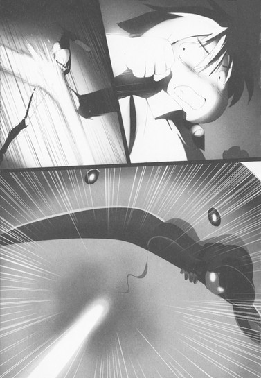
ラーヴァ・カーバンクルの攻性化が停止していることを確認し、ハルユキはチユリたちのもとへ向かおうとした。しかしそこで、ぎょっと眼を見開く。
二人から少し離れたところに、妙な物体が転がっているのに気付いたのだ。直径三十センチほどの、茶色い球体。ショコラが作ったチョコレート製の何かかと思ったが、質感が異なる。唖然と眺めているうちに、その球体から短い手と足がにょきにょきと生え、すっくと立ち上がると、一目散にグラウンドの西側へと走っていく。向かう先は、神殿にもたれたまま戦況を見守るマゼンタ・シザーのところだろう。
改めてチユリに近寄り、小声で訊ねる。
「あれ............何？」
「あ、あたしに聞かないでよ......」
答えたのは、ライム・ベルの腕に抱かれたままのショコラだった。
「たぶん......アボカドさんの本体、というか、種ですわ......。放置して、害はないと、思います」
「た、タネ......。ほんとに色々規格外なデュエルアバターだなあ......」
頭を小刻みに振って思考を切り替えると、ショコラの損傷を確認。大きなアーマー・スカートはほぼ完全に消失し、両脚のチョコレート色も半ば剥がれてしまっている。だが、部位欠損にまでは至っていないようだ。
ハルユキの判断を肯定するかのように、ショコラは小声でチユリに囁いた。
「ありがとう、ベル。下ろしてくださって大丈夫、ですわ」
「......うん」
チユリがゆっくり身を屈めると、ショコラは足を地面につけ、一度よろめいたものの立ち上がった。ボンネット型帽子をかぶった頭を巡らせ、グラウンドの南側を毅然と見つめる。
すると、まるでその視線を待っていたかのように──。
もうすっかり耳慣れてしまった、重苦しい振動音が空気を揺らした。ＩＳＳキットによる闇の心意技の発動音。ミント・ミトンとプラム・フリッパーの二人が、動きを妨害していたチョペット二体を、〈ダーク・ブロウ〉で粉砕したのだ。
地面を覆っていた〈カカオ・ファウンテン〉も、すでに効果時間が切れ消滅している。霊域ステージ本来の白いタイルの上を、小柄なＦ型アバターたちは生気のない足取りで歩み寄ってくる。二人の胸に貼り付く眼球が、血液を思わせる赤い光を明滅させる。
ハルユキとチユリは臨戦態勢に入りかけたが、ショコラが軽く首を振って止めた。満身創痍の体を一歩前に進ませると、数秒後、かつての親友たちがわずか二メートル離れたところで立ち止まる。
最初に言葉を発したのは、ニット帽型の頭部と大きく膨らんだ両手を持つミント・ミトンだった。
「............なんで、一緒に来てくれないの、チョコ？」
続けて、真ん丸いベレー帽をかぶるプラム・フリッパーが囁く。
「............強くなろうよ。強くなって、世界を変えようよ、チョコ」
親しげに語りかけるその声は、しかしどこか虚ろだ。アイレンズの明度も弱く、まるで二人自身ではなく胸の眼球が喋っているようにも思える。いや、あるいはそれが真実か。
ＩＳＳキット最大の特徴は、夜ごと夜ごと、装着者が眠っている間にある種の〈同期処理〉を行うことだ。周りの装着者が育てた負の思念を受け取り、また自分のそれを周囲に広げる。いまのミントとプラムは、世田谷に蔓延する全てのキットの〈親〉であるマゼンタ・シザーの心の闇にシンクロしてしまっているのだ。
「......ミンミン。プリコ。......世界を変えるのに、そんな強さはいらないですわ」
傷ついたアバターをかろうじて直立させ続けながら、ショコラは懸命の声音でそう答えた。
「ただ、信じる気持ちがあれば......それで世界は変わりますわ。わたくしはそれを、このお二人に教わった......」
ちらりと背後のハルユキたちに視線を振り、すぐ前を向く。
「わたくしたちは、現実世界でも、加速世界でも、〈外〉を怖れた。自分たちだけの、優しくて居心地のいい小さな箱に閉じこもって......過去にも、未来にも眼を向けようとしなかった。でも、それは間違いだった。わたくしたちがバーストリンカーになったのは......加速するため。辛い思い出を振り切って、前に進むため。一歩踏み出せば、そのぶん箱の壁も広がって、世界は変わる。そんな借り物の力に......頼る必要なんかないんですわ、ミンミン、プリコ！」
ショコラは涙混じりの声でそう言い切ると、傷ついた体を、自分の言葉どおりに一歩前に進ませた。もう一歩。更に、もう一歩。
そこはもう、ミントとプラムの目の前だった。
二人のアイレンズがいっそう暗くなり、代わりにＩＳＳキットが輝きを増す。色も形も違うふたつの右手に、まったく同質の黒いオーラが宿る。ハルユキは反射的に踏み出しかけたが、隣のチユリが軽くかぶりを振って止める。
関節部が錆び付いてしまったかのようなぎこちない動きで、二人は右腕を振り上げる。
その真下にためらわず身を晒したショコラは、華奢な両腕を広げると、親友たちの体を同時に抱き締めた。
二つのＩＳＳキットが激しく光を明滅させる。眼球が放射する無機質な感情は、憎しみとも、畏れとも受け取れる。キットの乱れと同期して、ミントとプラム本来の眼にも変化が訪れる。ほとんどグレーアウトしていたアイレンズが断続的に明度を増し、振り上げたまま停止している拳がぶるぶると震える。渦巻く闇のオーラは、密度を増しつつも不安定に揺らぐ。
もし二人があの距離から同時に〈ダーク・ブロウ〉を放てば、ショコラの体は跡形も残さず四散するだろう。ショコラが最初に考えていた結末──〈断罪の一撃〉によってミントとプラムを強制全損させるなら、今が最初で最後のチャンスだ。
しかし、ショコラは動かない。顔を伏せ、ただ強く、強く親友たちの体を抱き締め続けている。
ミントとプラムの、不規則に明滅するアイレンズから、白い光の粒が零れ、空中に滴った。
その刹那。動いたのは、レギオン〈プチ・パケ〉の三人でも、ハルユキでも、彼方で状況を見守るマゼンタ・シザーでもなく、チユリ──ライム・ベルだった。
左手の強化外装〈クワイアー・チャイム〉を高々とかざし、反時計回りに素早く、大きく回転させる。りごーん。というどこか学校のチャイム音を連想させる響きが、一回、二回、三回、四回。
清らかなシトラス・グリーンの光を、まるで液体のように溢れさせるベルを、まっすぐ前方に振り下ろす。同時に、技名発声。
「シトロン............コ────────ル!!」
ベルの内側から迸った光は、無数の十字を煌めかせながら一直線に流れ、ミントとプラムを同時に包む。下から上に屹立する光の柱の中で、二人の体がほんのわずかだが地面から浮き上がる。
腰を落とし、右手で左手のベルを支えながら、チユリは懸命の表情で光を放ち続ける。ハルユキは無意識のうちに近づくと、右腕で背中を支えた。ショコラたちと同じくらい華奢な体が、必死の精神集中を表して小刻みに震えている。
ライム・ベルの必殺技〈シトロン・コール〉には、戦いの序盤にショコラの必殺技ゲージを回復させた〈モードⅠ〉のほかに、全ゲージを消費して放つ〈モードⅡ〉が存在する。効果は、対象アバターの恒常ステータス変化を四段階までキャンセルすること。具体的には、アバターの部位欠損やオブジェクトによる寄生、強化外装の装備または入手などを無かったことにしてしまう。
ＩＳＳキットの装着はつまりオブジェクト寄生であり強化外装入手でもあるので、モードⅡによるキャンセルは有効と思える。しかし一週間前、キットに寄生されたタクムは、『その方法では僕のキットは消せない』と断言した。理由は──装着者の心の中にある、力を望む気持ちをエネルギー源にキットが疑似的な心意システムを発動させて、シトロン・コールを上書きしてしまうから。
ならば今回も、ミントたちのキットは消せない理屈であるように思えるが、しかしタクムの場合とは決定的に異なる点が一つだけある。それは、ミントとプラムはマゼンタ・シザーのハサミで体を切り開かれ、キットを無理やりに寄生させられたということだ。
先ほど二人は力を望むような言葉を口にしたが、それは彼女たち自身の心から発した気持ちではない。夜ごとの並列処理によって、他の装着者たちから流し込まれたものだ。ならば......二人の中にキットを拒む気持ちが、いやショコラを愛する気持ちが残っていれば、シトロン・コールで寄生をキャンセルできる可能性はある。
「お......ねがい............!!」
技を続けながら、チユリが細い声で叫んだ。
「消えろ............!!」
チユリの肩を抱くハルユキも、そんな言葉を絞り出しつつひたすら祈った。この作戦が失敗すれば、あとはもうショコラが殺されるか、その前に二人を〈断罪〉するかの二つに一つだ。そんな結末はもう二度と見たくない、絶対に。
薄緑色の輝きの中で、ミントとプラムの胸に貼り付くＩＳＳキットが、抗うように血の色の光を撒き散らす。眼球は大きく膨張し、それを取り巻く血管もどくん、どくんと激しく脈動する。
その時──。振り上げられたままだった二人の右腕が、ゆっくりと降りはじめた。瘴気じみた闇のオーラもほとんど消えている。拳が解け、細い指が震えながらショコラに向けて伸ばされる。
「......ミンミン！ プリコ！」
ショコラが叫び、二人の手を同時に握った。
一瞬ののち。ＩＳＳキットから伸びる黒い血管がひからび、眼球が弱々しく瞼を下ろした。寄生体はそのまま黒い霧へと変わり、緑の光の中で蒸発する。
シトロン・コールが終了した時、ミント・ミトンとプラム・フリッパーの胸には、もういかなるオブジェクトも存在していなかった。
がくり、と崩れるチユリの体を右腕で支えながら、ハルユキは懸命に眼を見開いた。かつて無制限フィールドで、オリーブ・グラブという名のバーストリンカーに寄生するＩＳＳキットを握り潰した時は、赤い光球が空を飛んで逃げたのだ。だが今回は、間違いなく何ひとつ離脱しなかった。
それが意味することはただ一つ。作戦は成功した──ふたつのキットは存在を巻き戻され、完全消滅したのだ。
「......やった、やったぞ、ベル！」
ハルユキがぐっと左拳を握ると、右腕の中のチユリも顔を上げ、疲れ切った表情ながらにっこりと微笑んだ。
ミント・ミトンとプラム・フリッパーは、一時的に気を失ったらしく、ショコラにもたれかかって瞼を閉じていた。
ハルユキたちが歩み寄ると、チョコレート色のアバターは伏せていた顔を上げた。滑らかな頬には、白い光の筋がある。
「............最後に、手を握ったとき......ふたりの声が、聞こえましたわ。『チョコ、ごめんね』って............」
掠れ声でそう呟くショコラに、チユリと同時に深く頷きかける。
「ああ、もう大丈夫。眼を醒ませば、もとの二人に戻ってるはずだ」
「頑張ったね。ショコちゃんの気持ちが通じたから、キットを消せたんだよ」
ハルユキとチユリがそう言うと、ショコラはこくりと頷き、少し間を置いてから言った。
「......お二人とも、わたくしを〈チョコ〉って呼んでもいいですわ」
早くもペースを取り戻したらしい台詞に、ハルユキは思わず苦笑する。しかし続けて発せられた、
「ただし、二度と味見はさせませんわよ」
というひと言にびくっと棒立ちになる。
チユリが「何のこと？」と首を傾げ、ショコラがハルユキの所行を暴露するべく口を開きかけた、まさにその時。
少し離れたところから、クルルルッ！と鋭い鳴き声が聞こえた。小獣級エネミー、ラーヴァ・カーバンクルことクルちゃんの、警戒を促すようなその声に、反射的に周囲を見回す。
すると、西側からゆっくりと近づく細いシルエットが眼に入った。身構えかけるが、すぐに力を抜く。歩み寄るマゼンタ・シザーは、最大の武器である巨大なハサミを再度二つに分離し、しかも両腰にぶら下げている。
もちろん彼女はＩＳＳキットを装備しているので、〈ダーク・ショット〉での遠隔攻撃は可能だ。しかし、今はそれもできそうにない。なぜなら左腕はハルユキの光線剣に斬られて欠損し、そして右腕には直径三十センチほどもある茶色いボール......アボカド・アボイダの〈種〉を抱いているからだ。
「ショ......じゃないチョコ、クルちゃんに攻撃させないでくれ。たぶん戦闘にはならない」
ハルユキが小声で言うと、ショコラは心配そうな顔ながらも頷いた。グラウンド東側のカーバンクルに向けて右手を掲げると、それだけでエネミーは伏せの姿勢を取る。
「わぁ......よく馴れてるのね......」
感心したように呟くチユリも、戦闘が終わったことは感じているらしい。それでも一応ショコラたち三人の前に出て待ち受けていると、マゼンタ・シザーはかなりの近距離まで歩を進め、立ち止まった。
シルバー・クロウも、ハサミに斬られたりクルちゃんのレーザーに焼かれたりで満身創痍だが、マゼンタも状況は似たり寄ったりだ。赤紫色のリボン状装甲はそこかしこで砕け、素体がかなり露出している。ことに切断された左腕はまだ痛むはずだが、それを表情に出すことなく、長身のＦ型アバターは薄く微笑んだ。
「............エネミーのレーザーを曲げてアボカドの装甲を溶かしただけでもビックリなのに、まさかＩＳＳキットまで消しちゃうなんてね。さすがはあの女の配下、ってコトかしらね......」
「......黒の王を知ってるのか？」
ハルユキの問いに、尖った肩がひょいと上下する。
「少なくとも、コレ以上アナタたちとコトを構えて、本人に出てきて欲しくない......ってくらいには知ってるわよ」
「そう言うからには、もうチョコちゃんたちにはちょっかい出さないんでしょうね？」
チユリの詰問に、マゼンタは再び微笑する。
「残念だけど、仕方ないわね。どっちみち、もう一度寄生させてもまたアナタに消されちゃうダケでしょうし。北はやめて、東に進むコトにするわ」
その言葉は、ショコラたち三人を手勢にすることは一時的に断念しても、本来の大目的──〈加速世界全体にＩＳＳキットを広げる〉意志は捨てていないという宣言だ。ハルユキは、なぜそこまで、と問おうとしたが途中で止めた。動機はすでに聞かされている。加速世界から、能力差や外見に起因する不平等をなくす、という。
鏡面ゴーグルの下できつく奥歯を噛み締めながら、ハルユキはマゼンタ・シザーに抱かれる茶色いボール形アバターに視線を向けた。
この小さな球体が、身の丈二メートル半もあったアボカド・アボイダの本体だとはなかなか信じられない。しかし、短い手足とビーズ玉のようなアイレンズは初登場時と意匠を共通させている。それに──胸に相当する箇所に貼り付く、縮小されたＩＳＳキットも。
「......なら、勝負だな。あんたが目的を達成するのが先か、オレたちがＩＳＳキット本体を破壊するのが先か」
ハルユキが、色々な感情を呑み込んでそう言うと、マゼンタはこれまでで最も大きな笑みを浮かべた。
「......アナタが言うと、あながち大言壮語とも思えないから不思議ね。いいわ、勝負しましょう。その前に......この戦いに勝ったアナタたちに、賞品をあげないとね」
アボカドを抱く右手の指二本をぴっと伸ばすと、どこから取り出したのか、そこには二枚の矩形が挟まれている。ハルユキもすっかり見慣れたカードアイテムだが、色は初めて見る艶消しの黒。表面に、深紅のフォントでアイテム名が記されているようだ。
「コレは、ミント・ミトンとプラム・フリッパーから切り離されたＩＳＳキットよ。ワタシのストレージに戻ってきたケド、データが汚染されてるかもしれないからね......思いやりとか、優しさとかに。使い道ないし、処分はアナタたちに任せるわ」
真意の掴めない口調でそう言うと、マゼンタは指を弾いた。二枚のカードは回転しながら宙を舞い、ハルユキの足許のタイルに突き立つ。
「しょ、処分......って言っても......」
これ不燃物なの可燃物なの、と内心首を捻っていると、マゼンタはもう一度肩をすくめた。
「好きにすればいいわ。煮るなり焼くなり、解析するなり......ね。そうだ、それと、シアン・パイルに伝えて。先週、あの子にキットをカードのまま渡した時、『アナタのコト気に入ったからこのままあげる』って言ったのは、ワタシの本心だって」
それを聞いた途端、いままで黙っていたチユリがぴんっと背筋を伸ばして叫んだ。
「ちょ......な、なんであたしたちがそんな伝言しなきゃいけないのよ!?それ以前に、なんであんたがパイルを気に入るワケ!?」
「アラ、だってステキじゃない、あの左右非対称なフォルム。......あら、そう言えば、アナタもなかなかいい感じね」
マゼンタは平然と言い返し、おまけにライム・ベルへ妖艶な微笑を送る。これにはさしものチユリも即時対処不可能なようで、ぴきっと固まる様子に一瞬笑みを深くすると、マゼンタ・シザーは無音で踵を返した。
アボカドの種を抱き直し、桜上水駅方面へと歩み去っていく細身のシルエットを見つめながら、ハルユキは短い葛藤にとらわれた。
マゼンタ・シザーはこれからも加速世界にＩＳＳキットを拡散させ続けるだろう。それを止めんとするなら、ここで彼女に襲いかかり、倒し、一時間後に蘇生したらまた倒す連続キルでポイント全損させるべきなのかもしれない。現状の戦力差ならば可能だろう。
しかし──。ハルユキたちにその選択肢があることを、マゼンタも理解していたはずだ。ミントとプラムのＩＳＳキットが浄化されてしまった時点で即座に離脱ポイントへ撤退していれば、連続キルされる危険は消せたはずなのだ。
だが彼女はそうせず、ハルユキやチユリと言葉を交わすべく歩み寄ってきた。二枚のカードを寄越したことも含めて、悪意ある罠を仕掛ける意図があったとは思えない。マゼンタは恐らく、ＩＳＳキットに寄生されても消えずに残っている自身の誇りのために、敢えて敗戦の地に踏みとどまったのだろう。
そんな相手を、背中から襲うことは、ハルユキにはできなかった。
遠ざかる影から視線を外し、屈み込むと、足許の黒いカードを拾い上げる。隣のチユリが、心配そうに声を掛けてくる。
「さ、触って平気なの？」
「使用ボタン押したり、起動コマンド叫んだりしなきゃだいじょぶじゃないかな......」
と口では言いつつも、長時間握ったままでいるのは躊躇われるので、素早くインストメニューを開いてストレージに移動し、二枚のカードを格納する。作業を終え、顔を上げると、もう広いグラウンドにマゼンタ・シザーの姿はなかった。
胸に込み上げてくる、自分でも成分のよく解らない複雑な感情を噛み締めつつ、ハルユキは左後方に向き直った。ひざまずくショコラの腕の中で、ちょうど二人の少女アバターが眼を醒ましたところらしく、華奢な手脚が小さく震えている。
ハルユキはそちらに近づこうとしたが、チユリに腕を掴まれた。
「三人だけに、しておいてあげよ」
囁き声に、それもそうだなと頷く。
やりとりは聞こえないが、ショコラ・パペッターとミント・ミトン、プラム・フリッパーの三人は、ゆっくりと言葉を交わしているようだった。しばしの時が流れたあと、茶色と水色、そして紫色の腕が伸ばされ、三人の少女たちは互いをしっかりと抱き締めた。
その美しい光景に眼を奪われていたハルユキは、視界左側からぬうっとフレームインしてきた巨大な影にびくっと背中を反らせた。影の正体は、アルマジロに似た甲殻に包まれた体から短い手足を伸ばし、額に楕円形のルビーを輝かせるエネミー──クルちゃんだ。
ショコラに〈伏せ〉を命じられていたはずだが、きっと我慢しきれなかったのだろう。エネミーは流線形の頭部を少女たちに擦りつけ、くるる、くるると甘え声を漏らす。
いつしか隣のチユリとしっかり手を繋ぎながら、ハルユキはレギオン〈プチ・パケ〉所属の三人と一匹に無言で見入り続けた。
最初はただエネミー相手に特訓をするつもりで目指した世田谷エリアで、思わぬ出会いから始まった予定外の激戦に巻き込まれてしまったが、でも今日、この時間にこの場所を訪れてよかったとハルユキは心から思った。
まったく同じことをチユリも感じたようで、少しだけ濡れた声が、ハルユキの聴覚にそっと触れた。
「............よかった」
かなり長いあいだ加速していたように思えたが、ポータル経由で現実世界に戻った時、仮想デスクトップ左下の時刻表示は秒の位しか変化していなかった。
ドアの下のわずかな隙間から、パイナップル入り酢豚の蠱惑的な香りが漂ってくるが、ご飯タイムの六時半まではまだ十分近くもある。飛んだり待ったり戦ったりしてもうお腹ペコペコなのに！と思うが、いかなバーストリンカーでも時間を早送りすることはできない。
自分のベッドと比べると少し柔らかめのマットレスに体を預けたまま、ふぅ──と長く息を吐き出していると。
「......やだ、ハル、なにもこっちでまで泣くことないでしょ」
そんな声がすぐ左側から聞こえ、反射的に顔をそちらへ傾ける。すると確かに、両眼に溜まっていた謎の液体がこぼれ、頬を横切ってシーツに薄い染みを作る。
「な、泣いてねーよ！」
と小学生じみた抗弁を試みながら手の甲でぐいぐい目許を擦るが、涙腺のバルブが壊れでもしたのか、雫はあとからあとから湧き出ては頬を伝う。遮断を諦め、チユリに背中を向けようとした、その時。
液体の膜ごしに歪んで見えるチユリの顔にも、きらきらと光るものがあることにハルユキは気付いた。
「............お前だって、泣いてるじゃんか」
唇を尖らせてそう呟くと、チユリは涙を隠そうともせずに、泣き笑いの表情を作る。
「だって......だってさ。嬉しいのと悲しいのが同じくらいずつ溢れてきて......二倍なんだもん。しょーがないでしょ」
「......まあな。二倍なら、しょーがないよな......」
妙なロジックに同意しながら、ハルユキは内心で、そうか、と思っていた。
マゼンタ・シザーとアボカド・アボイダを見送ったあと、胸中に込み上げてきた感情の大部分は〈悲しみ〉だ。
なぜ悲しいのか。それは、違う未来も有り得た、と思うからだ。
「............なんで............」
再び顔を天井に向けながら、ハルユキは塞がろうとする喉から声を絞り出した。
「なんで、あんなふうに戦わなきゃならないんだよ......」
通常フィールドで行われるノーマルな対戦が、お互いの知恵と技術と根性を競い合う〈格闘ゲーム〉だとすれば、無制限中立フィールドでの心意戦は、怒りと憎しみだけをぶつけ合う命がけの〈闘争〉だ。
バーストリンカーになってまだ八ヶ月、レベルもようやく５に届いたばかりのハルユキだが、そのような状況に立たされた経験が数回ある。しかしどの戦いも、対戦の興奮や楽しみなど欠片も与えてくれなかった。今日のマゼンタ・シザーとの激闘も同じだ。彼女が〈ダーク・ブロウ〉に頼った隙をついて〈光線剣〉を放ち辛くも勝利したが、胸に残ったのは深いやるせなさだけだ。
「......世田谷を過疎エリア扱いしないで、もっとたくさん遊びに行ってれば......ただバーストリンカー同士として出会って、普通に対戦してれば、きっとあの人とも......」
──仲良くなれたのに。
そのひと言をぐっと呑み込み、ベッドの上で俯せになろうとしたハルユキの肩を、チユリが強く掴んだ。
「まだ......まだ終わってないよ、ハル。加速世界からＩＳＳキットを全部消して、もういちどマゼンタさんとアボカドさんに会いに行こうよ。今度はタッくんも、黒雪先輩も、フーコ姉さんやういちゃんも誘ってさ。そしたら......そしたら............」
「............ああ。そうだな」
ハルユキは頷き、右腕でごしごし顔を擦って、今度こそどうにか涙を止めた。
チユリも上体を起こすとヘッドボードからティッシュを取り、目許に当てる。続いて自分とハルユキのニューロリンカーからケーブルを抜き、くるくるまとめながら、口調を大きく切り替えて言う。
「それよりそれより、ハル、あたし見たよ！ クルちゃんのレーザー、見事に反射してたじゃない。あれってつまり、アビリティ習得に成功したってことよね!?」
「へ？ え、ええと......どうなんだろ............」
ベッドの上に起き上がり、ぽりぽり頭を掻くハルユキに、チユリが盛大な呆れ顔を向ける。
「なぁにそれ、自分のことなんだから、習得できたかどうかくらい解るでしょ！」
「で、でもなあ......それを確認するには、また誰かにレーザー撃って貰わないと......」
「あ・の・ね・え！ そんなめんどくさいことしなくても、今すぐブレイン・バーストのコンソール開いて、シルバー・クロウのステータス画面見れば一発じゃないの！」
「............!!」
なるほど、と平手で膝を打つと、チユリの呆れ顔が呆れ果て顔に進化するが、気にせず仮想デスクトップに指を走らせる。燃え上がるＢマークのアイコンを叩き、開いたコンソール画面からアバターステータスを表示。
デフォルトの通常技タブを、おそるおそるアビリティタブに切り替える。一瞬顔を背けてしまうが、歯を食い縛りつつ横目で睨んだ窓には──アルファベットの文字列が、二行。
「お、おお！ 二つある！」
ハルユキが叫ぶと、チユリが我慢しきれないというように身を乗り出してきた。
「ちょっと、あたしにも見せなさいよ！」
片付けようとしていたＸＳＢケーブルを再度ほどき、右手と左手で二人のニューロリンカーを直結する。通常、ブレイン・バースト・プログラムのメニュー画面はたとえ直結していても他人には不可視だが、相手もバーストリンカーである場合のみその制限は解除される。
「えーと、なになに............」
左側からくっつかんばかりに顔を寄せてくるチユリと同時に、ハルユキも窓に浮かぶ文字列を読んだ。
一行目、【Ａｖｉａｔｉｏｎ】。言わずと知れた飛行アビリティだ。
そして二行目──【Ｏｐｔｉｃａｌ Ｃｏｎｄｕｃｔｉｏｎ】。
「............あれっ......」
ハルユキが声を漏らすと、チユリも大きく首を右に傾ける。
「あれぇ......〈理論鏡面〉アビリティって、英語表記は確か......〈セオレティカル・ミラー〉じゃなかった？」
「う、うん......そう聞いた気がする......」
胸中にぽたりと滲む嫌な予感がみるみる巨大化していくのを感じながら、ハルユキは頷いた。でもオレちゃんとレーザー反射したよな、鏡になれたよな、と自分に言い聞かせつつ、デスクトップ右側で英和辞書アプリを立ち上げる。音声入力ボタンを押し、
「......オプティカル、コンダクション」
なるべく英語っぽい発音で検索単語を指定すると、待ち時間ほぼゼロで和訳が表示される。同じ画面をチユリも見ているので、二人声を揃えて読み上げる。
「............光学、誘導......？」
日本語になっても、さっぱり意味を掴めない。右に傾けていた首を、チユリとシンクロした動きで左に傾げたその時、ドアの向こうから待ち望んだチユママの声が聞こえた。
「チー、ハルちゃーん、ご飯よー」
大変な苦労をして開眼した新アビリティが、七王会議で習得を要請された〈理論鏡面〉ではどうやらないらしいという危惧と不安も、空っぽの胃がパイナップル入り酢豚を求める衝動をキャンセルはできない。
ハルユキは大きく深呼吸すると、すぐ傍にあるチユリの顔を見て言った。
「............続きはご飯のあとにしよう」
すると付き合い十四年の幼馴染は、頭を軽く左右に振って答えた。
「............たまーに、ハルってすっごくメンタル強いんじゃないかって思う時があるわ」
６
明くる六月二十七日。
梅雨前線はしぶとく東京上空に居座っているようで、今日も朝から小雨のぱらつく空模様となった。
普段より十分早く登校の準備を済ませたハルユキは、かつて父親が使っていた少し大きめの傘を片手に家を出た。環七の歩道を南に進み、中央線高架をくぐっていつもの高円寺陸橋交差点を目指す。今日は木曜、恒例の〈アシュクロ戦〉が行われる日だ。
いつしか生まれたルールでは、前回の勝者が１バーストポイントを消費して加速、相手に乱入することになっている。だが一昨日火曜の対戦は、シルバー・クロウ、アッシュ・ローラーともに〈轟雷〉ステージの雷に打たれて同時にゲージが吹っ飛んでしまった。
ドローの場合は乱入側を変えるルールになっていて、それに従えば今日はクロウが挑戦者になる番だ。しかしハルユキは、交差点の歩道橋に上ってもニューロリンカーをグローバル接続せず、そのまま環七の内回り側に降りると、角地にあるコンビニエンスストアの前で立ち止まった。
二分ほどで、緑色のＥＶバスが少し離れたバスベイに停車する。降りた乗客は一人だけだ。オフホワイトの傘を開くと、斜めがけにしたポシェットを揺らして小走りで近づいてくる。
「く、日下部さん、走るとあぶな......」
慌ててそこまで言いかけた時、茶色のローファーが濡れた路面に滑った。大きくバランスを崩し、左に傾き、右に傾きしつつも不思議と転倒には至らず、ハルユキのすぐ目の前で危うく制動に成功する。
いざという時は身を挺して支えるべく伸ばしかけていた左手をさっと引き戻し、ハルユキは改めて挨拶した。
「おはよう、日下部さん」
「おはよう......ございます、有田さん」
傘ごとぺこりと上体を折るのはもちろん、アッシュ・ローラーのリアルである日下部綸だ。ハルユキと同じ中学二年生だが、通っている学校は渋谷区笹塚にある女子校で、中野区江古田の自宅からバス通学している。
笹塚は京王線の沿線で、そこから下り方向にたった四駅めが昨夜訪れた桜上水だ。直線距離では四キロメートル足らずだが、その辺りは杉並区・渋谷区・世田谷区の境界が入り組んでいるので、加速世界の感覚では数字以上の距離がある。事実ハルユキは、昨日のダイブのあいだ、かなり近くに笹塚駅があることを一度も意識しなかった。
──とはいえ、綸の学校がある渋谷第三エリアが、世田谷エリアのすぐ東に隣接しているのは間違いない。その事実がなぜか思考に引っかかったが、白い傘の縁から現れた綸の微笑みに瞬時に押し流されてしまう。
「あの、わがまま言ってしまって、すみ、ません......」
そんな言葉とともに綸がもう一度頭を下げようとするので、ハルユキは左手と顔を同時にぶんぶん振った。
「い、いいんだよ全然！ 対戦が先か後かだけの違いだし」
綸の言うわがままとは、恒例の対戦をする前にこの交差点で話をしたい、という至極ささやかなものだ。ハルユキは一昨日と同じく対戦後に話すつもりだったが、順番が変わっても何ら問題があるとは思えない。
しかし、ならばなぜ綸は今日に限って対戦を後回しにすることを望んだのか。
というハルユキの疑問を察したかのように、綸は恥ずかしげに首を縮めながら言った。
「あの......、対戦が先だと、兄があなたに、余計なことを言うかもしれないと、思って......」
「余計なこと......？ たとえばどんな......」
「ええと、たとえば......『妹を文化祭に誘うなんざミリオンイヤーズはえーぞこのカラス野郎！』的な......」
「..................な、なるほど。納得した、すごく納得した」
綸が披露した口真似は迫真のクオリティで、ハルユキは思わず額に汗を惨ませつつこくこく頷く。
日下部綸がアッシュ・ローラーのリアルであることは間違いないが、加速世界で戦うデュエルアバターに宿る人格、いや魂は彼女のものではない。綸の兄の元ＩＣＧＰレーサー、日下部輪太があの世紀末ライダーを操作しているのだ──と、ロジックは不明なれどハルユキはそう理解している。
アッシュ・ローラーは妹を溺愛していて、ハルユキが接近するとブチ切れるくせに、イベント的なものに誘わないとそれはそれで怒るのだから実に理不尽なお兄様ぶりである。ハルユキが綸を梅郷中の文化祭に招待したのは一昨日の対戦後なので、アッシュもその記憶を共有していると予想され、つまり今日の対戦でメガ・ヒート状態になっている可能性はかなり高い。
──え、あれ、でも、ということは対戦前に日下部さんと話をすれば、アッシュさんの怒りはギガを通り越してテラ・ヒートに？
とハルユキは一瞬考えたが、ここで逡巡している余裕はない。バス停の標識柱から配信される運行情報によれば、綸が乗るべき後続車両はもう三つ前の停留所まで来ている。
ひとまずお兄様のことは脇に置いて、ハルユキは仮想デスクトップを操作した。呼び出したドキュメント・ファイルは、三日後に近づいた文化祭の招待状だ。生徒ひとりに三通配布されるが、招待客は近親者を想定しているので、グローバルネット経由では受け渡しできないという制限がある。
今朝がた、ベッドの中の母親に承認印をもらってきた招待状を、ハルユキは綸に向けてニューロリンカー同士のアドホック接続で送信した。ファイルが残り二枚に減るが、どうせこれらを使うあてはもうない。
「それがニューロリンカーに入ってれば梅郷中の校門を通れるから、到着の少し前に連絡くれれば迎えに行くよ」
ハルユキがそう言うと、綸は傘を右肩に載せ、仮想デスクトップに表示されているのだろう招待状ファイルを両手で大切そうに包み込んだ。線の細い、どこか少年めいた雰囲気もある顔に、ぱっと大きな笑みが浮かぶ。
「ありがとう......ござい、ます。私......とっても、嬉しいです。絶対に、絶対に行きますから」
「う、うん。──って言っても、僕はクラスの展示を手伝うくらいしかしないんだけどね......」
先日さらりとリサーチしたところでは、タクムの所属する剣道部は道場で〈コスプレ演武〉なる実態不明な出し物を披露し、チユリの陸上部はクレープの模擬店をやるらしい。加えて、なんと黒雪姫が副会長を務める生徒会も、ローカルネット内にてシークレット・プログラムを開催予定と聞けば、口ざまが少々卑屈になってしまうのも已む無しだ。
ハルユキも現在は飼育委員長という大役を拝命しているのだが、何せ飼育委員会そのものが発足してまだ十日しか経たない。それでも、どこか教室を借りて密林ふうに飾り付け、飼育している唯一の動物であるアフリカオオコノハズクのホウを展示することを考えないでもなかったが、ただでさえ神経質な種であるうえに松乃木学園から引っ越してきたばかりのホウには、たくさんの人間に見られることは負担が大きすぎるだろうと判断し、〈超委員長〉の謡に提案することなく取りやめたのだ。
二年Ｃ組の、部活にも委員会にも参加していない生徒七名による展示は〈三十年前の高円寺〉というなかなかに文化的かつ当たり障りのないテーマで、教室に入ると視界に二〇一〇年代の東高円寺商店街の静止画像が表示され、経路に従って歩くと自動スクロールする仕組みだ。一見手が込んでいるようで、実は基幹プログラムはアリモノの流用、ハルユキたちの仕事は梅郷中のアーカイブや各人のホームサーバーから当時の写真を探して組み込むだけ。実作業は土曜一日で終了する予定で、残念ながら綸に向かって胸を張れる内容とは言い難い。
しかし綸は笑顔をわずかにも曇らせることなく、ハルユキに一歩近づくと、両手でぎゅっと傘を握り直しながら言った。
「あの、クラス展示も楽しみですけど、私......有田さんが文化祭に招待してくださったことが、凄く、凄く嬉しいんです。だって............」
そこで更に顔を近づけ、ボリュームを限界まで絞って──
「......学校に、他のレギオンのバーストリンカーを入れるのって、加速世界では、タブー中のタブー......ですから」
その言葉を聞いても笑顔を保てたのは、内心が表情に直結しがちなハルユキにしてはちょっとした奇跡と言えよう。
なぜならハルユキは、綸を梅郷中の文化祭に招待することを、マスターの黒雪姫はじめレギオンの誰にも相談していないのだ。『綸はもうネガ・ネビュラスの全員と相互にリアル割れしているんだから問題ないはず』と勝手に判断していたのだが、もしかしたら問題大ありだったのだろうか？あるとすればどのような？
──という秘めたる危惧を押し隠し、ハルユキはこくこく頷いた。
「だ、大丈夫だよ、レギオンのみんなも日下部さんに会えるの楽しみにしてる......から。も、もちろん僕も」
「............ありがとう、ござい......ます」
綸は両眼を潤ませつつそう囁き、更に一歩距離を詰めた。双方の傘の前半分が重なり、グレーとホワイトの撥水生地がささやかなシェルターとなって二人をしばし外界から切り離す。
雨音も、すぐ傍の幹線道を行き交うＥＶのモーター音さえも遠ざかり、生まれた不思議な静けさの中を綸の透明な声が訥々と流れる。
「私......、ずっと、ずっと、想像してたんです。もし、加速世界から、バーストポイントの仕組みがなくなったら、って。勝ったら嬉しくて、負けたら悔しくて、それだけが対戦のぜんぶになったら......リアル割れとか、気にする必要もなくなって、バーストリンカーがみんな、みんな、現実世界でも仲良くできるのに、って......」
そこで一瞬声が詰まり、綸の灰色がかった瞳にきらきらと綺麗な雫が生まれた。零れ落ちる寸前で睫毛に留まる輝きを見つめながら、ハルユキは言葉もなく綸の囁きに聞き入る。
「......でも、もしかしたら、今の仕組みのままでも......いつか、そんな日が来るのかもしれないって、私、そう思います。......有田さんが、世界を、変えてくれる......って」
「え......いや、僕には、そんなこと............」
絶対無理だよ、と言おうとしたハルユキの口を、綸の左手がそっと押さえた。細く滑らかな指先が唇に触れる感覚に、どきんと心臓が跳ねる。
「有田さんは、今のまま、加速世界の空を飛ぶだけで......いいんです。その姿を見た人は、みんな、みんな、何かを感じてる......はずです。大切な、何かを。私みたいに」
ハルユキの口から離した指先を、自分の口許に軽く押し当てると、綸はにっこりと笑った。その表情はあまりにも無垢かつ透明で、ハルユキは彼女の指がいわゆる唇の間接的接触現象を引き起こしたことすら意識できない。
綸が笑顔のまま一歩下がり、二つの傘が離れると、周囲の雑音がいっぺんに戻ってくる。その中には、北から近づくバスの重々しい走行音も混ざっている。
「......バス、来ちゃいました」
そう言って、両眼をぱちぱち瞬かせた綸は、細い首に装着されたメタリックグレーのニューロリンカーをそっと撫でた。外装に稲妻形のクラックが走るそれは、兄である輪太がレース中に使用していたものだ。
「文化祭、楽しみに......してます。きっと、兄も」
最後にもう一度そう言い、傘ごとぺこりと頭を下げると、振り向いてぱしゃぱしゃと走り去っていく。またしても濡れた舗装に足を滑らせるが、今度も転倒することなくバス停に辿り着き、数秒遅れて停車したバスに乗り込む。
閉じたドア越しに小さく手を振る綸に、ようやく我に返ったハルユキは、慌てて左手を振り返した。バスは低いモーター音を響かせて発車し、陸橋下の交差点を通過して南へ遠ざかっていく。
頭の中で、綸の残した言葉を何度もリフレインさせながら、ハルユキは歩き始めた。歩道橋に上り、真ん中まで進んだところで立ち止まって、ニューロリンカーをグローバル接続。確認ダイアログが出るや否や呟く。
「バースト・リンク」
バシイイイッ！ という衝撃音が轟き、世界が青く凍る。初期加速空間にピンクブタの姿で出現したハルユキは、ブレイン・バーストのマッチングリストを開いた。十数個並んでいる名前から、もちろん〈アッシュ・ローラー〉を選択。
──勝ったら嬉しくて......負けたら悔しくて。それだけが......対戦のぜんぶに......。
脳裏でそう呟きながら、デュエルボタンを押す。
たちまち、青い世界が変容を始める。同時にハルユキのブタアバターも、白銀のデュエルアバターへと変身していく。
わずかな浮遊感を経て、金属の足が踏んだのは、横倒しになった太い樹の幹だった。周囲の光景も一変し、道路は青草に覆われた谷に、周囲のビル群は苔むした巨木へと姿を変えている。自然系・木属性の〈原始林〉ステージだ。
タイムカウントが１７９９に進むと同時に、谷の南側から野太いＶツインエンジンの鼓動が届いてきた。綸の乗ったバスは二百メートル程度しか離れていなかったはずで、そんな距離はアッシュ・ローラーの駆るアメリカンバイクならあっという間だ。
ハルユキは背中の翼を広げると、元は歩道橋だった倒木から谷の真ん中へふわりと飛び降りた。そのまま、接近してくるバイクを待ち受ける。綸の言葉が与えてくれた感動がまだ胸に残っていて、対戦前にアッシュお兄さんとも少し言葉を交わしたい気分だったのだ。
ほんの数秒で、草むらの向こうにバイザーつきのヘッドライトが黄色く輝いた。原始林ステージは時刻変化アリで今は夕方の少し前という感じだが、バイクにまたがるライダーの姿もくっきりと視認できる。
金属のアーマーがついた革ジャンを着込み、スカルフェイスのヘルメットを被ったお馴染みの姿だ。しかし、何かがいつもと違う。ハテと眼を凝らすと、ドクロの眼窩に二つの炎が赤々と燃えていることに気付く。おまけに、スリット状の口許からは、白い蒸気が尾を引いているようだ。
「あ、あの、アッシュさ......」
ハルユキがそこまで言いかけた時、左のレザーブーツが乱暴にシフトペダルを蹴り下げた。アクセルが煽られると同時にクラッチが乱暴に繋がれ、ゴツい前輪がぐわっとリフトする。バイクはそのまま、青草を引きちぎりながら猛然と突っ込んでくる。
「こぉぉのぉぉぉキャラス野郎ぉぉぉぁあああああ────ッ」
エンジンの咆哮にも負けない音量の怒声がステージを揺らし、ハルユキは軽く飛び上がった。
「ひっ、ひいいいっ!?」
反射的に飛ぼうとするが必殺技ゲージが空だ。後ろを向き、ダッシュで逃げ始めるものの、ヘッドライトの光はみるみる追い上げてくる。
「てンめええェェェ────！ なに妹とカン......カンセツ......カンセツキッシングしてンだコルアァァァァ────！ユ────！シャル！クラ──────ッシュ!!」
「のっ、ノーサンキュ──────!!」
必死に走るハルユキの背中を、惰力で回転し続けるフロントタイヤが軽く擦る。体力ゲージが微減し、同時にわずかばかり増える必殺技ゲージを、即座に翼の推進力に注ぎ込む。離陸はできないが、両手で空中を掻きながらのロングジャンプでどうにかクラッシュを回避しつつ、ハルユキはなおも北へ逃げ続ける。
しかし、数秒後。行く手になぜか巨大な壁が現れ、ハルユキは眼を見開く。この谷はもともと環七通りなので、ステージの端までずっと続いているはずだ。ということはあの壁は本物の壁ではなく壁に見えるほど大きい何か。
「あっ、ダメ、アッシュさんアレダメ────！」
ようやく壁の正体に気付いたハルユキは泡を食って叫ぶが、かつてないほどの怒りに燃えるお兄様はスロットルを緩める気配もない。わずかにも減速すればフロントタイヤに引き倒された挙げ句リアタイヤで平らにプレスされることは確実なので、ハルユキもひたすら直進し続けるしかない。
湿ったような照りのある茶褐色の壁までの距離が二十メートルを割ったところで、小山のようなソレがぶるりと震え、次いで動き始めた。
原始林ステージ最大の特徴は、無制限フィールドの野獣級エネミーもかくやという大型生物オブジェクトが棲息していること。そして今ハルユキたちの行く手で、昼寝を邪魔されて不機嫌そうに太い首をもたげるのは、確認されている中で最強の生物、ティラノサウルス・レックスに違いない。
周囲の木々の枝を自動追随してくるギャラリーの一人が、呆れたように声を発した。
「オレ、このステージで〈寝ティラノ〉起こすヤツ初めて見たわ」
「さすがアシュクロ戦、魅せるねぇー」
と誰かが答えた直後、ハルユキとアッシュとバイクはひとかたまりになってティラノサウルスの横っ腹に突っ込んだ。
「......はふ～～～～............」
ベンチの背もたれに体を預け、ハルユキは真上に向けた口から長く息を吐いた。
朝方降っていた雨は三時間目の授業中にひとまず止み、空を塗りつぶす灰色もかなり明るさを増している。この機を逃さじと校庭に出ている生徒も多く、昼休みの喧噪が少し冷たい微風に乗って屋上まで届いてくる。
「クラス展示のほうは間に合いそうかい？」
隣に座るタクムが、ミックスサンドの封を開けながらそう訊いてきたので、ハルユキは首の角度を戻してかくんと頷いた。
「ああ、必要な写真はもうだいたい揃ったから、あとは土曜日に表示プログラムに組み込めば終わり。──そういうお前は、何のコスプレするんだ？」
同じく焼きそばパンの袋を破きつつ質問を返すと、タクムは広い肩幅をすぼめるようにして苦笑する。
「男子剣道部は演武の振り付け担当で、衣装は女子部が用意するんだってさ。やたら念入りにサイズ測られたけど、なんだか嫌な予感がするよ......」
「はは、そりゃ楽しみだ。絶対観に行くからな」
短く笑ってから、パンにあんぐりと齧り付く。しばし二人揃って口を動かし、同時にヨーグルトドリンクのパックを手に取ると、ちゅうと啜る。
「......で？ 何かぼくに相談ごとがあるんじゃないのかい、ハル？」
二口めに行こうとした寸前、タクムにいきなりそう言われ、ハルユキはかちんと歯を空振った。焼きそばパンを下ろし、バツの悪い笑みを浮かべる。
「お、お見通しか......さすが黛先生」
「そりゃ、有田先生が私めを昼ご飯に誘って下さるからには、何かあると思うさ」
ニヤリと笑ってから、親友は表情を改めた。
「それで？ 今回は何をやらかしたんだい？」
......なんかつい最近もその台詞聞いたような。
と思ったが深く考えるのはやめにして、周囲に他の生徒がいないことを素早く確認してから、やや迂回気味な問いを口にする。
「あ、あのさ、タク。オレちょっと考えたんだけど......文化祭って、けっこう危なくないか？バーストリンカー的な意味で」
「ああ......うん、要注意なイベントではあるね。何せ、年にたった二回、他の学校の生徒が合法的に学内ローカルネットに接続してくるわけだからね」
「に、二回？ あと一回はなんだ？」
「入学試験だよ、もちろん。──でも入試の日は原則として在校生は学校にいないから、危険度は文化祭のほうが少しだけ上だな」
滑らかに説明され、おおなるほど、と頷く。
「じゃ、じゃあ......招待状を、バーストリンカーだと解ってる他校の生徒にあげるのは、けっこうマズイ......かな？」
恐る恐る、かなり核心に近い質問をぶつけてみたが、幸いタクムは一般論と思ってくれたようで、大きな苦笑を浮かべて言った。
「それはむしろセーフだと思うよ。だって、その場合はお互いにリアル割れしてるってことだろ？赤の王とか、レパードさんみたいに。あの二人を文化祭に呼んでも、セキュリティ上のリスクはないんじゃないかな」
でも、他の種類のリスクがありそうだけど。とタクムは小声で付け加えたが、内心で思いきり胸をなで下ろすハルユキの耳には届かない。
ニコやパドさんがＯＫなら、同じく〈相互リアル割れ状態〉な日下部綸も当然ＯＫだろう。だとすれば、事前にレギオンメンバーの了解を得る必要もないと思われる。
──そうだ、せっかくあと二枚あるし、ほんとにニコとパドさんにも声を掛けてみようかな。招待状、無駄にしちゃもったいないしな。よし、放課後になったら早速メールを......
「むしろ注意すべきなのは、他の生徒が招待した近親者や友人のほうだよ。その中にバーストリンカーがいる可能性は、決してゼロじゃないからね」
タクムの真剣みを増した声が時間差で脳に届き、ハルユキはぱちくりと瞬きした。少し考え、確かにそうだと頷く。
「......もしそいつが、文化祭のあいだに一回でもマッチングリストを確認したら、この梅郷中がネガ・ネビュラスの本拠地だって一発でバレるわけか......」
「うん。でも、招待客のほうもリアル情報を名簿に登録されるわけだから、ある程度のリスクは負うことになる。バーストリンカーにとって文化祭は要注意イベントだけど、それには二つの意味があるのさ。開催校の生徒は警戒を怠るな。そして安易に他校の文化祭に行くな、っていう、ね。たぶん、近々マスターからもその話があると思うよ」
「そっか......なるほどな......」
焼きそばパンといまの話を同時に咀嚼していると、タクムが眼鏡のブリッジを押し上げつつ再びニヤリと笑った。
「......で、ハルは誰を招待するんだい？それとももうしたの？」
「へっ？ い、いや、その、それは......」
「ハルがリアルを知ってる他校のバーストリンカーはかなり限られるよね。レイカーさんとメイデンさんはマスターが招待するだろうし、となると赤のレギオンの二人か、あるいは......」
「え、ええっと、そそそれより、もしほんとに見知らぬバーストリンカーが招待客に混じってたらどうするかの話を......」
残りわずかとなった焼きそばパンを持つ右手と、ヨーグルトドリンクのパックを持つ左手をわたわた振るハルユキを救ったのは、テキストメールの着信を知らせるアイコンだった。同時にタクムにも届いたようで、視線が逸れる。
二人揃って開いたメールは、黒バックに薄紫色のフォントたった二行の簡素なものだった。
【急ですまないが、五分後に会議を開きたい。ローカルネット経由の自動観戦でステージに入ってもらうので、準備よろしく頼む。問題があれば返信してくれ】という本文のあとに、署名代わりの蝶のマーク。
読み終えた二人がウインドウを閉じると、メールは勝手に自分を削除し、着信ログにも残らない。タクムと顔を見合わせ、同時に首を傾げる。
「......せっかちな先輩にしてもずいぶん急だな。しかも対戦ステージで会議なんて、何かあったのかな？」
「うーん......文化祭当日の、レギオンとしての対応についてなら、こんなに急がなくていいはずだしね......」
タクムに解らないものがハルユキに解るはずもないので、思案を中止して言う。
「とりあえず食っちゃおうぜ。腹が減っては加速ができぬと昔から......」
「言わないけど賛成」
焼きそばパンとミックスサンドの残りを一分で消滅させ、デザートにハルユキはチョココロネ、タクムはミルクプリンを二分で平らげると、揃ってごちそうさまを言う。チユリは学食で女子の友達と昼食中のはずだが、通常対戦を利用した会議なら最長でも一・八秒だ。ローカルネットにフルダイブするふりでもしておけば問題あるまい。
屋上隅のダストシュートにゴミを放り込んだところで残り一分となり、ハルユキとタクムはベンチ上で加速に備えた。予告された時刻から一秒と遅れることなく、冷たい雷鳴が聴覚いっぱいに轟き、二人の意識を現実世界から切り離した。
７
今日二度目の戦場は、赤茶けた奇岩群の間を乾いた風が緲々と吹きすさぶ〈荒野〉ステージだった。自然系・土属性の中では最も穏やかな属性の一つで、厄介な地形効果も恐ろしい動的オブジェクトも存在しない。
会議にうってつけのステージで良かった、と思いながらまず左右の体力ゲージを確認する。右側、つまり乱入したほうがブラック・ロータス。ということは乱入されたのはライム・ベルか、と思いきや、そこにあった名前はスカイ・レイカーだった。
「あれっ!? なんで姉さんが梅郷中のローカルネットに接続してんの!?」
という声が真後ろから聞こえたので振り向くと、ライム・ベルの鮮やかな黄緑色が眼を射た。同じ疑問を、すぐ傍に立つシアン・パイルも感じているようなので、一足先にそのカラクリを知らされたハルユキが説明する。
「それが、黒雪姫先輩、ついにローカルネットに外部からのアクセスゲートをこっそりアレすることに成功したんだってさ」
「お、おー......さすが斬れないものはないでお馴染み黒の王ね......」
チユリが妙な感心の仕方をすると、タクムも横長のスリットが並ぶフェイスマスクを頷かせてから、周囲を見回した。
「それならきっと、ギャラリーにメイデンさんも......」
「はい、ここにいるのです」
三人のすぐ北側にそびえる、もとは梅郷中の第一校舎だったと思しき岩山の裂け目から返事が聞こえた直後、小柄な巫女型アバターが姿を現す。
杉並区の南にある松乃木学園初等部から接続しているはずの四埜宮謡と挨拶を交わし、四人揃って北西方向を眺める。対戦者二人の位置を示す二軸ガイドカーソルがそちらを指しているのだが、当事者たちはまだ姿を見せない。
荒野ステージは建物内侵入不可、というか建物が変じた岩山に内部構造は存在しないのだが、現実世界で校舎や大型ビルだったような大型の岩には細い亀裂が迷路のように張り巡らされていて、うかつに入り込むと脱出に苦労することもある。
「......この方向って、生徒会室だよな。探しに行ってみるか？」
もしや黒雪姫と楓子は岩山の中で迷っているのかも、と思ったハルユキはそう提案したが、誰かが答えるよりも早く、垂直に切り立つ岩山の壁面にカカッと灰色の光が走った。
見事な切断面を見せて崩れ去る巨岩の奥から出現したのは、四肢に長大な剣を備える漆黒のデュエルアバター、ブラック・ロータスと、華奢なボディを純白のワンピースに包み、流体金属を思わせるロングヘアを微風になびかせるスカイ・レイカーだ。二人はハルユキたち四人を視認すると、足早に近づいてくる。
「みんな、待たせて済まない。山から外に出ようにも、通路が行き止まりばっかりでな」
「だからって壁を切り倒すのは、巨大迷路の攻略法としては邪道もいいとこですけどね」
「お、お前だってゲイルスラスターで飛んで脱出しようとか言ってたじゃないか」
「屋根のない迷路は飛んでいいってことになってるのよ、昔から」
「う、嘘だ、それは嘘だ」
相変わらず息ピッタリな黒雪姫と楓子の掛け合いを聞いているのもまったくやぶさかではないが、残念ながら視界上部のタイムカウントが着々と減り続けているので、ハルユキは恐る恐る会話に割り込んだ。
「あ、あの、先輩、師匠、そろそろ会議のほうを......」
「ン......そ、そうだ、迷路の話をしている場合じゃない」
黒雪姫が咳払いして居住まいを正すと、阿吽の呼吸で楓子がその斜め後方に下がる。
「まずは、せっかくの昼休みを中断させてしまったことを謝罪させてくれ。急な呼び出しをかけて済まなかった」
「わたしからも謝るわ。ロータスに集合の要請をしたのはわたしなの」
ということは、放課後を待たずにレギオン全員を集めねばならなかったほどの緊急情報をもたらしたのは楓子なのだろうか。ハルユキたち四人は視線を彼女に向けるが、楓子は進行役をレギオンマスターに任せるつもりらしく、手振りで黒雪姫を促した。
それを受けて、黒の王は軽く頷くと、予想外の方向から本題へと入った。
「諸君の中で、下北沢にある〈明北学院〉という中高一貫の男子校を知っている者はいるか？」
ハルユキは初耳だったが、左端に立つタクムが右腕に装着された〈杭打ち機〉を小さく持ち上げる。
「はい、マスター。都内ではかなり上位の進学校です」
「うむ。中等部の全国統一テストの平均点は、全学年とも我らが梅郷中より10ポイントほど上だ」
話がどこに流れていくのかさっぱり解らず、ハルユキたちは頷きつつも首を傾げる。そんなレギオンメンバーの反応にも動ぜず、黒雪姫は滑らかに言葉を続ける。
「そういうガチンコの進学校は、各種の校内行事にはあまり熱心でない場合も多い。修学旅行が簡略版だったり、体育大会や文化祭を省エネで済ませたり、な。下北の明北学院もそのクチで、文化祭は平日の半日開催だということだ。具体的には、今日の午前中だ」
「は、はあ......」
相づちを打ちつつ、平日だとお客さんもあんまり来ないだろうし、お昼で終わるんじゃ出し物も少ないだろうなあ、などとハルユキが考えていると──。
「マスター、まさか......」
これだけの情報から何かを察したらしいタクムが、張り詰めた声を出した。
「──その文化祭に、襲撃が......？」
「し、襲撃ぃ!?」
チユリと同時に叫んでから、ようやくその意味するところを悟る。文化祭に襲撃と言っても、ライバル校の生徒が殴り込んだり、武装テロリストに占拠されたりしたわけではあるまい。加速世界での話なのだ、もちろん。
「......明北には、緑のレギオン所属のバーストリンカーが三名在籍していたようだ。彼らは、文化祭で招待客に開放されたローカルネット経由で一人のバーストリンカーに次々と対戦を挑まれ......全敗したらしい」
「..................！」
ハルユキやチユリのみならず、話の行く先を推測していたであろうタクムと謡も揃って鋭く息を吸い込む。
ブレイン・バーストの対戦フィールドは現実準拠なので、学校で対戦すれば地形は校舎や体育館の配置をそのまま再現する。つまり、地の利は明北学院の生徒である三人にあったはずなのだ。
「......サッちん、襲撃者さんと、負けてしまったお三方のレベルは解っているのですか？」
謡の問いに、黒雪姫ではなく楓子が答えた。
「伝聞なので正確ではないけれど、三人のレベルは５から６。対して、襲撃者はレベル６だったみたいね」
「ほぼ同レベル......。──なのに、敵地で全勝とはただ事ではないのです。もしや、襲撃者さんは......あれを？」
「そのようだわね。明北の三人は、黒いエフェクトのビームとパンチに為す術なく敗れたらしいわ」
楓子の言葉を聞いた途端、ハルユキはまたしてもチユリと異口同音に叫んでいた。
「あ......ＩＳＳキット......！」
「間違いあるまい。──ＩＳＳキット装着者が、ついに正面から六大レギオンの一角に攻撃を仕掛けてきたということだ」
黒雪姫はそこで一呼吸置くと、緊張感を増した声でその先を告げた。
「彼女は、三人目を容易く蹴散らしたあと、言い残したらしい。『この力が欲しければ、世田谷第五エリアに来い』とな」
それを聞き、ハルユキは無意識のうちに強く両拳を握った。
レベル５や６といえば、とうに初心者を脱した中堅リンカーだ。しかもグレート・ウォールに所属する者が、そんなあからさまな誘惑に負けるはずがない──と思いたい。だが、ＩＳＳキットの力は圧倒的すぎるのだ。すでに心意システムの第二段階へ進んでいるハルユキでさえ、あの遠近万能の攻撃力には、今なお深い恐怖を覚える。
〈強くなりたい〉という気持ちは、全バーストリンカーに共通する根源的欲求だ。抗いようもない力を見せつけられ、それを与えてやると囁かれた時、まったく心を揺さぶられない者が加速世界にどれほど存在するだろうか。ハルユキ自身、一度のみならず〈災禍の鎧〉の誘惑に負け、その名を呼んでしまったのだ。
「通常の、グローバルネット経由の対戦ではなく、文化祭を狙って学内ローカルネットで襲撃したのがミソですね......」
タクムの声に、ハルユキは思考を中断して顔を上げた。ネガ・ネビュラスで最重量級の近接型でありながら、同時に参謀役でもある青藍のデュエルアバターは、左手をフェイスマスクに添えながら続ける。
「ほとんどのバーストリンカーにとって、自分の通う学校というのは、自宅と同じかそれ以上に〈最後の砦〉だと思うんです。校内に複数のリンカー、つまり仲間がいるなら尚更のこと。その学校に攻め込まれ、しかも完敗した精神的動揺はかなり大きいはずです。今年の四月に、ぼくら自身が体験したように......」
「......タク......」
ハルユキが思わず名を呼ぶと、タクムは大丈夫というふうに小さく頷いた。〈略奪者〉ダスク・テイカーに何もかも奪われた──といっときにせよ信じてしまった二ヶ月前、確かにハルユキも、そして恐らくはタクムも動揺どころか絶望のどん底に叩き落とされた。
事実、ハルユキはあの時、アッシュ・ローラーが示してくれた希望に全力ですがりついたではないか。アッシュに紹介されたのがスカイ・レイカーだったから良かったようなものの、もしアッシュより先にＩＳＳキット装着者に出会い、あの力をくれてやる、と言われていたら。それを拒めた自信はない。
「......何より守るべきものを壊されたと、明北学院の三人が考えたら。彼らが襲撃者の誘いに乗ってしまう可能性は、ゼロではないと......思います」
呟くようにそう言ったタクムは、顔を上げて黒雪姫を見ると、しっかりした声で訊ねた。
「マスター。明北の学園祭を襲ったバーストリンカーの名は、何ですか？」
「ン、ああ......まだ言っていなかったか。〈マゼンタ・シザー〉だ」
その名を聞いた瞬間、タクムはやはりというふうに頷いただけだったが、ハルユキと、そしてチユリは激しく反応せずにいられなかった。
「えっ......!?」
「そんな......！」
同時に発せられた叫び声に、他の四人の視線が集まる。
ハルユキはチユリと顔を見合わせ、同時に頷いた。もとより、今日の放課後にも皆に説明しようと思っていたことだ。この会議はむしろ渡りに船と言える。
「ええと......報告が遅れましたが、僕とチユは昨日の夜、世田谷エリアでマゼンタ・シザーと一戦交えたんです......」
おずおずとそう切り出すと、今度は黒雪姫たちが驚きの声を漏らした。
「な......んだと!? チユリ君と一緒ということはタッグマッチか!?マゼンタのパートナーは誰だったんだ!?」
矢継ぎ早に問われ、ヘルメットの後頭部に手をやりながら答える。
「あ、あの、タッグというか、集団戦というか......通常対戦じゃなくて、無制限フィールドでの遭遇戦だったので......」
これにはもう何も言えない様子の四人に、ハルユキはひとつ咳払いをしてから、昨夜の出来事を順に説明し始めた。
チユリが世田谷第二エリアの桜上水駅近辺で、レーザー攻撃をするエネミーを発見したこと。そいつ相手に〈理論鏡面〉アビリティの特訓をしようと訪れた無制限中立フィールドで、思わぬ出会いが待っていたこと。そして、マゼンタ・シザー率いる襲撃部隊との激闘と、ほろ苦い勝利──。
「............ショコラ・パペッターたちレギオン〈プチ・パケ〉の三人は、近いうちに杉並まで挨拶に来たいそうです。とくに問題ないと思ったんで、いいよって言っちゃったんですが......大丈夫ですよね？」
ハルユキがそんな問いで話を締めくくると、黒雪姫はまず楓子、次に謡と視線を交換し、なぜか小刻みに頭を振ってから頷いた。
「ああ、まあ、それは問題ないが......ウルフラム・サーベラスとのリベンジマッチの直後に、よくまあそんな大冒険をする元気があったものだな......」
「あ、あんなことになるって解ってたら行かなかったですよ！」
とハルユキは反射的に答えたが、すぐに前言を翻す。
「い、いえ、解ってたらむしろ先輩と師匠とメイさんとタクも誘って全員で行ったかもですが......」
「そーだよね、チョコちゃんたちを放っておけないもん。昨日のあの時間にダイブしてほんとに良かったよ。ほんの五分遅かったら、もう何もかも終わっちゃってたかもしれないんだから」
チユリの言葉にハルユキは深く頷いたが、すぐに「でも」と続けた。
「......でもさチユ、もしかしたら......いや多分、マゼンタ・シザーが明北学院を襲撃したのは昨日の戦闘があったからなんだ......」
顔を黒雪姫に向け、
「......先輩、昨日の戦闘が終わったあと、僕はマゼンタにこう言ったんです。『あんたが目的を達成するのが先か、オレたちがＩＳＳキット本体を破壊するのが先か、勝負だ』って。......マゼンタは、北はやめて東に進むって言ってました。下北沢は、世田谷エリアの東の端ですよね。つまり、マゼンタ・シザーは、宣言を実行しただけなんです。ある意味じゃ、僕があの人にそうさせたようなものなん......」
「それは違うぞ、ハルユキ君」
いつしか俯き加減になっていたハルユキは、主の毅然とした声にハッと顔を上げた。
黒の王ブラック・ロータスのフェイスマスクは、ほぼ全面がアメジスト色の半鏡面ゴーグルに覆われ、スカイ・レイカーやライム・ベルと違って表情が見通せない。それでもハルユキは、黒雪姫が厳しく、そして優しく微笑んでいるのを感じた。
「キミがしたことは、昨夜消滅してしまうかもしれなかったひとつのレギオンを守り、二人のバーストリンカーをＩＳＳキットの支配から解放した......それだけだよ。世田谷第二から第五エリアまでを勢力下に収めたマゼンタ・シザーが、下北沢を含む世田谷第一エリアに侵攻するのは時間の問題だったはずだ。キミの責任などであるものか......もっとも、特訓に私を誘わなかったことは少しばかり不満だが」
「そうだよ、ハル、チーちゃん。言ってくれれば、ぼくも付き合ったのに......」
黒雪姫に続いてタクムまで少々傷ついたような声を出すので、ハルユキは慌てて両手を振り動かした。
「い、いや、それはその、成り行きっていうかその場の流れっていうか、さっきも言ったけど戦闘になるって知ってれば問答無用で付き合わせてたし......」
「はは、解ってるよ。それに......チーちゃんは多分、ぼくに気を遣ってくれたんだよね。場所が世田谷だから」
タクムのその言葉にハルユキは少々驚かされたが、チユリは肩をすぼめると、否定したものか肯定したものか迷うような声音で言った。
「えっと、気を遣ったっていうか、タッくんに、思い出したくないことを思い出させちゃうかなって......」
よくよく考えてみれば、タクムが単身世田谷エリアに赴き、マゼンタ・シザーからＩＳＳキットを譲渡されたのはほんの九日前、先週の火曜日のことなのだ。その翌日、ＰＫ集団〈スーパーノヴァ・レムナント〉にリアルアタックされてやむなくＩＳＳキットを起動してしまったタクムは、一時はバーストリンカーでなくなることさえ覚悟したはずだ。辛い記憶を振り切るには、もう少し時間が必要だろう。
しかしタクムは、チユリの言葉に軽くかぶりを振り、落ち着いた声で言った。
「ありがとう、チーちゃん。でも、ぼくはもう大丈夫だよ。ＩＳＳキットの誘惑に負けたことも、ハルと戦ったことも、そしてチーちゃんとハルがぼくを引き戻してくれたことも、いまのぼくの力になってるって感じるんだ」
「過ちの数だけ強くなれる、黛さんの仰るとおりなのです。私たちも、それはそれはたくさん誤ってきましたから」
謡が小さなフェイスマスクを頷かせつつそう言うと、〈私たち〉に含まれるのであろう楓子と黒雪姫は、バツが悪そうに咳払いした。場の空気が和んだところで、謡が再び、加速世界内でのみ聞ける可愛らしくも凛とした声を発する。
「──ですが、有田さんの今回の行動が過ちだったとは、私も思わないのです。有田さんは......そして倉嶋さんも、厳しい状況の中でできる限りのことをなさったはずです。これまでの、多くの戦いと同じように」
「そうだと......いいけど......」
「そうなのです。過去を省みることは大切ですが、それよりもっと大切なのは、これからどうするかです。有田さんは、マゼンタさんに『勝負だ』と仰ったのでしょう？ならば、そのとおりのことをすればいいのです」
「......ええと、〈そのとおりのこと〉ってつまり......ＩＳＳキット本体の、破壊......？」
恐る恐る訊ねたハルユキに、謡はきっぱり「なのです！」と応じた。
加速世界に蔓延しつつあるＩＳＳキットを全て消し去るには、大本の根を断ち切るしかない。ハルユキもそれは理解しているが、キット本体は遠く赤坂にそびえる東京ミッドタウン・タワーの最上部に秘匿され、その上〈地獄〉ステージ以外では無敵の神獣級エネミー、大天使メタトロンに守護されている。
メタトロンの放つ即死レーザーに対抗できる力はただ一つ。かつて、アーダー・メイデンの〈親〉にして実の兄である〈ミラー・マスカー〉のみが所持していた伝説のアビリティ、あらゆる光線技を反射するという〈理論鏡面〉──......
「「......あっ」」
という声が、ハルユキだけでなくチユリの口からも同時に漏れた。
ようやく、昨夜、チユママ特製のパイナップル入り酢豚に検証を中断されてしまった懸案事項を思い出したのだ。
「そーだそーだ！ 黒雪先輩、大変なの！ハルったら......」
「わ、わあ！ オレから言うよ!!」
ハルユキはチユリのマント型アーマーを後ろから引っ張って黙らせると、どこから切り出したものかしばし考え、まずは黒雪姫に向かって遠回しに訊ねた。
「えーと......先輩、最初にちょっと確認しておきたいんですが......〈理論鏡面〉アビリティって、実際にはどういう感じの効果なんですか？たとえば、撃たれたレーザーの方向を変えて受け流す......みたいな......？」
「ン、ンー......私も、現物を見たことは数回しかないからな......。フーコはどうだ？」
「同じく、よ。わたしもサッちゃんも、光線技とは無縁だものねえ」
黒雪姫と楓子は、そこで気遣うようにちらりと謡を見やった。視線を受け、小柄な巫女型アバターは、大丈夫というように頷くとはっきりした声で言った。
「私からお答えするのです、有田さん。理論鏡面は、受け流すというよりも、拡散するという表現が正確だと思うのです。具体的には、まず不動の姿勢になり、自分に命中した光線属性の攻撃を、無数の細線に分解・消滅させる......という感じです」
「............細い線に、分解して、消滅......」
言葉を繰り返しながら、ハルユキが脳裏に再生していたのはもちろん、昨夜自分がラーヴァ・カーバンクルの赤色レーザーに対処したシーンだ。
あの時ハルユキは、クロスさせた両腕で受けたレーザーを、左後方にそのまま跳ね返し......と言うより軌道を曲げ、アボカド・アボイダに命中させた。どう考えても、〈分解・消滅〉という表現には当てはまらない。
────いや。本当は、昨夜倉嶋家のダイニングルームで、パイナップル倍量の酢豚をご馳走になっている時から薄々気付いていたのだ。自分が、本来習得するべきだった〈理論鏡面〉と似て非なるアビリティに開眼してしまったことに。なぜなら、
「......技の名前、違ったもんねえ......」
チユリの容赦ない宣告に、ハルユキはがっくりと項垂れる。そのまま地面に膝をつき、なぜか正座に移行。
「ど、どうしたのですか有田さん？」
緋色のアイレンズを丸くする謡と、同じく呆気にとられている様子の黒雪姫、楓子に向けて、ハルユキは悲壮な声で告白した。
「す......すみません！ 僕......違うアビリティ身につけちゃいました！」
三分後。
更なる説明を聞き終わった黒雪姫たちは、腕組みしたり口許に手を添えたりしながら一様に唸り声を漏らした。
「う、うーむ......なんともはや、予想外の展開だな......」と、黒雪姫。
「理論鏡面ならぬ、光学誘導、ですか」と、楓子。
「いちど実物を見てみないと、何とも言えないね......」と、タクム。
それらの言葉を聞きながら、深々と項垂れるハルユキの肩に、小さな手がそっと載せられた。白く華奢な指は、アーダー・メイデンのものだ。
「顔を上げてください、有田さん。謝らねばならないことなど、何ひとつないのです」
「......で、でも、僕......せっかく四埜宮さんに、鏡のこととか、色々教えてもらったのに......」
「レベルアップ・ボーナス以外で新アビリティを習得するのは、本来とてもとても困難なことなのです。それなのに、有田さんは七王会議からわずか三日で、新たな力を目覚めさせたのですよ。むしろ胸を張っていいことなのです。さあ、立ってください」
謡に腕を引っ張られ、ハルユキは身を縮めつつも立ち上がった。視線を上げると、すぐ目の前に黒雪姫と楓子の姿があった。黒い剣状の手と、空色のほっそりした手が左右から伸び、ハルユキの両腕に優しく触れる。
「謡の言うとおりだ、ハルユキ君。私の知る限り、〈ポテンシャル覚醒〉に二度も成功したのはキミだけだよ」
「それに、たとえアビリティの名前が違っても、がっかりするのはまだ早いですよ、鴉さん。要はメタトロンのレーザーを防げればいいんですから。現象を聞く限り、可能性はあるとわたしは思います」
主と師の温かい言葉を聞き、ハルユキはようやく肩の力を抜くことができた。
本当は、違うアビリティを習得してしまったことを、黒雪姫たちにはしばらく話さずにおきたい気分もあったのだ。叱られたり、落胆されるのが怖かったからだが、考えてみれば黙っているほうがよほど不誠実だ。レギオンメンバーの間で隠し事をして、よかったことなんか何ひとつない。それをハルユキは、〈災禍の鎧〉事件の時に学んだはずだ。
──言わなきゃならないことは、ちゃんと言おう。先輩も師匠も四埜宮さんも、もちろんタクもチユも、僕の大切な仲間なんだから。
胸中でそう呟き、他に何か言うべきことはないかと考えたハルユキは、もう一つ重要事案があったのを思い出した。対戦時間は半分近く残っているし、この機に伝えねばまたのびのびになってしまいそうだ。
「あの、先輩、アビリティの件の他に、もう一つ......」
そう言いながらアイテム欄を開き、格納されている二枚のカードをオブジェクト化。マットブラックの表面に深紅のフォントが刻まれたそれを二枚重ねて右手に持ち、差し出す。
「ン......なんだ、それは？」
いぶかしそうに半鏡面ゴーグルを近づけてきた黒雪姫は、
「あの、ＩＳＳキットです」
というハルユキの言葉を聞いた途端、大きく仰け反った。直後、ぶんっとホバー移動で後退する。一瞬遅れて、チユリを除く三人も飛び退くように距離を取る。ことにタクムのスライド幅が大きい。
「え、あれ......ど、どうしたんですか先輩。タクも......」
ハルユキがカードを持ったまま歩み寄ろうとすると、タクムは更に一歩飛びのきつつ叫んだ。
「こ、こっちこないでハル！ ぼくはもうそれの半径二メートル以内には近寄らないって決めたんだから！」
「さっき『もう大丈夫』って言ってたくせに......。平気だよ、封印カード状態なんだし」
「そ、それでもダメ！」
ここまで激しく反応されるとハルユキもつい童心が蘇ってしまい、カードを突き出したままじりじりタクムに迫ったりしたくなるが、僕もう中学二年生だし。と自分に言い聞かせて止めておく。
「か......鴉さん、どうしてそんなモノを持っているんですか？」
右方向から楓子に質問され、そちらに向き直ると、ハルユキは説明した。
「あの......昨日の戦いが終わったあと、マゼンタ・シザーがくれたんです」
皆の表情が厳しくなるので、すぐに付け加える。
「でも、これを僕が使うことを期待したりとか、勝手に起動する罠が仕掛けてあったりとか、そういう感じじゃありませんでした」
「ですが......ＩＳＳキットは、戦って育てないと複製できないと聞いたのです。なら、マゼンタさんにとって、ＩＳＳキットは貴重なもののはず。どうしてクーさんに渡したのでしょうか？」
謡の疑問は当然のものだ。ハルユキも、『罠ではない』と言いはしたが、マゼンタの意図については推測すらできない。
「マゼンタ・シザーは、ＩＳＳキットが真心とか優しさとかに汚染されたから、って言ってたけど......」
そう呟くチユリに、皆の視線が集中する。
「......でも、それはほんとの理由じゃないって思うのよね。だってあの人、あたしの力が〈巻き戻し〉だって知ってたもん。ってことは、巻き戻されて手許に返ってきたキットが、ミントちゃんやプラムちゃんに寄生させる前の状態になってることも理解してたはずよね」
「なるほどな......。そのまま他のバーストリンカーに寄生させることもできたのに、敢えてハルユキ君に渡した、か。──よかろう、それは私とフーコで預かろう」
黒雪姫はひとつ頷くと、再びホバー移動で近づいてきて、右手の剣を伸ばした。ハルユキは内心ほっとしながら、黒いカードを左右の手に分けて同時に差し出す。
小型オブジェクトを吸着する機能のある切っ先で、黒雪姫がカードの片方を受け取ると、楓子もやや警戒するような表情でもう一方を取った。二人揃ってカードを空にかざし、まじまじと見入るので、ハルユキは思わず警告してしまう。
「あ、あの、それ、ボイスコマンドで起動させたりポップアップメニューから使用したりすると寄生されちゃうんで、気をつけてくださいね」
「ン......了解した。しかしなあ......こんなモノを使うだけで、遠近二つの心意技が身につくとはな......」
黒雪姫が信じがたいというふうに嘆息すると、楓子もその隣で頷いた。
「まったくだわね。いったいどうやってこのアイテムを作ったのか、今の段階では見当も......」
──その時。
荒野ステージの空を埋める筋雲の列にわずかな隙間ができ、赤いレンブラント光が地上まで届いた。光は、黒雪姫と楓子が掲げるカードの裏面に当たり、濃密なマットブラックをほんの少しだけ薄めた。
途端。二人の口から、同時に驚愕の声が迸った。
「なっ............」
「こ、この紋章は......!?」
驚きの度合いは黒雪姫のほうが大きかったようで、剣先からカードが離れ、くるくる回転しながら落下する。ハルユキは素早く右手を伸ばすと、空中でカードをキャッチし、自分も陽光にかざしてみた。
漆黒の表面には、深紅のアルファベットで〈インカーネイト・システム・スタディ・キット〉と記してある。そしてカードの裏側から当たる赤い光が、その文字列の奥に、小さなマークを浮き上がらせていた。
図柄は、クロスする二丁のリボルバー式拳銃。以前に見た記憶はない。強いて特徴を挙げれば拳銃のバレルがかなり長いことくらいだが、そんな武器を使うバーストリンカーも思い当たらない。
「これ......誰の紋章なんですか？」
カードから視線を外したハルユキは黒雪姫に向かって訊ねたが、主から答えはなかった。
いまだ衝撃から冷めやらぬ様子のレギオンマスターに代わって、サブマスターの楓子がひそやかな声でその名を告げた。
「......この紋章は............先代の赤の王、レッド・ライダーのものです」
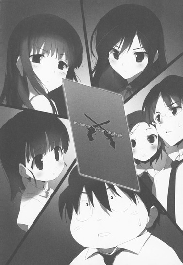
８
放課後。
飼育委員の仕事を終えたハルユキは、文化祭の準備にいそしむ生徒たちで賑わう前庭を避け、中庭経由で第一校舎に戻った。一階の奥にある生徒会室のスライドドア前に立つと、視界中央に入室申請窓がポップするので、それに触れる──より早く内部からロックが解除される。
「失礼します......」
小声で挨拶しながら引き開けたドアの向こうは、相変わらず同じ学校の中とは思えない重厚な雰囲気に満ちていた。後ろ手にドアを閉めると放課後のざわめきが一気に遠ざかり、生徒会専用サーバーマシンの駆動音だけがひそやかに響く。
ハルユキが足音を殺して──もっとも床には厚いカーペットが敷かれているので普通に歩いても大した音はしないのだが──数歩進むと、正面の大型デスクで執務中だった人影が顔を上げ、穏やかに言った。
「や、忙しいところ呼びつけてしまって済まなかったな」
「いえ、ホウの世話もだいぶ慣れてきましたから......」
「そうか......悪いがあと五秒待ってくれ。っと......よし、終わった」
作業していたファイルをセーブし、さっと立ち上がったのはもちろん梅郷中生徒会副会長の黒雪姫だ。室内にほかの役員の姿はないので、学校内の密室で黒雪姫と二人きりという、ハルユキにとっては色々な意味で心悸亢進してしまうシチュエーションである。
ほんとうは、つい数分前まで一緒に作業していた超飼育委員長こと四埜宮謡も誘ったのだが、なぜかにっこり微笑みながら【今日は遠慮しておくのです】と言われてしまった。タクムとチユリはクラブ活動中だし、楓子は遠く離れた渋谷区の高校に通っている。
よって、突発的事態に部屋の中央で直立不動とならざるを得ないハルユキなのだが、黒雪姫のほうは颯爽とした歩みでデスクから西の壁際に設けられている小型キッチンまで移動すると言った。
「ハルユキ君、紅茶でいいかな？」
「あ、は、はい！」
「ミルク、レモン、それともブランデー入り？」
「............み、ミルクでお願いします」
三番目のは冗談だろうと判断してそう答えると、黒雪姫はごく普通に「ン、解った」と頷き、意外にスムーズな手捌きでお茶を用意した。トレイを持って南西の隅にあるソファセットに移動する黒雪姫を、ハルユキもぎこちない歩行で追う。
「どうぞ、掛けてくれ」
「は、はい......」
ハルユキが、シンセティック・レザーながらしっとりとした手触りのソファに腰を下ろすと、黒雪姫はローテーブルにカップとソーサーを二組並べ、ポットから紅茶を注ぐ。言葉も動作も至って自然だが──それでもハルユキは、愛する剣の主の表情に、ごくごくかすかな痛みの色を感じた。
それも当然だ。黒雪姫が五時間目と六時間目の間に送ってきたテキストメールには、こう記してあったのだから。【初代赤の王レッド・ライダーについて、キミに話しておきたいことがある】と。
今年の一月、黒雪姫は、二代目赤の王スカーレット・レインの要請に応じ、ハルユキ、タクムと共に五代目クロム・ディザスターの討伐に赴いた。しかし、無制限中立フィールドの池袋エリアで待っていたのは黄の王イエロー・レディオ率いるレギオン〈クリプト・コズミック・サーカス〉の大規模な攻撃部隊で、それでも果敢に立ち向かおうとした黒雪姫に、レディオは一枚のリプレイ・カードを再生してみせたのだ。
そこに記録されていた映像こそ、約三年前に開催された第一回の七王会議に於いて、黒の王ブラック・ロータスが赤の王レッド・ライダーの首を一撃のもとに落とす凄惨な光景だった。突然それを見せられた黒雪姫は、甚大なショックを受けて零化現象まで引き起こし、戦場に倒れてしまった。
あれから半年。新生ネガ・ネビュラスの頭首として幾多の強敵を斬り倒してきた黒雪姫だが、心の奥底に刻まれた傷が完全に消えたとは思えない。
〈ＩＳＳキットに刻まれたレッド・ライダーの紋章〉という予想外の事態に際し、黒雪姫が自分の傷と向き合おうとしているのなら、その前にいるのが僕だけでいいのだろうか。ハルユキはどうしてもそんなことを考えてしまう──いや、少し前までなら、無理やりにでも他のレギオンメンバーの同席を求めるか、いっそ逃げ出してしまっていたかもしれない場面だ。
しかし今、ハルユキは自分からは何も言わず、静かに黒雪姫の言葉を待った。
確かに、黒雪姫はハルユキの〈親〉でありレギオンマスターであり絶対無敵のレベル９ｅｒである。しかし同時に、ハルユキと同じように悩み、苦しみ、怯え、時として救いを求める、たった一歳年上の女子中学生でもあるのだ。いつまでも頼って、守られてばかりでいいはずがない。
──先輩。僕でよければ、いつだって傍にいますから。もう二度と、あなたに黙っていなくなろうとはしませんから。
ハルユキが胸中で呟いたそんな言葉が聞こえたわけでもないだろうが、自分のミルクティーに少し口をつけた黒雪姫が、カップを下ろしながらついに言葉を発した。
しかしその内容は、これまたハルユキにとってはかなり予想外のものだった。
「なあ、ハルユキ君。〈究極の遠隔攻撃力〉とはどんなものだと思う？」
「へっ？ 究極の......遠隔攻撃力、ですか......？」
鸚鵡返しに言ってから、うむむと考え込む。
「......そりゃ、遠く離れた敵を一撃で吹っ飛ばすような、大射程・大火力の攻撃だと思いますけど......それこそ、ニコ、じゃないスカーレット・レインの主砲みたいな......」
「ン、そうだな。〈不動要塞〉の本気の砲撃は、現在の加速世界では文句なく最強の遠隔攻撃力だろう。一対一の撃ち合いになったら、クリキンロボも敵わんだろうな......」
「へ？ く、クリ......誰ですか？」
「すまん、余談だ。あとで説明してやるから、今は本題を続けよう」
黒雪姫は口許に滲みかけた微笑を消すと、ソファの背もたれに細い体を預けた。
「キミの言うとおり、ニコが赤系〈最強〉であることは論を俟たない。だが、それが〈究極〉とイコールかとなるとどうかな......」
「......最強と、究極は違うってことですか？ どういうふうに......？」
いつしかすっかり話に引き込まれ、ハルユキはソファから身を乗り出した。黒雪姫は少し考えるように視線を動かすと、教師めいた仕草で指を立てる。
「キミはさっき、大射程・大火力と言ったな。では、赤系デュエルアバターの力の本質はそのどちらだと思う？」
少しだけ考え、ハルユキは即答した。
「それは......射程だと思います。火力、つまり瞬間的な威力の絶対値は、もしかしたら青系のほうが上かもですから」
「うむ、その通りだ。仮に〈ダメージ計測機〉のようなものを密接状態で撃てば、ニコよりも青の王ブルー・ナイトのほうが高い数値を出すだろう。──では、ニコの力の本質たる長大な射程距離を......そうだな、マックス三千メートルと仮定すると......」
ええー、幾らなんでも三キロは、と言おうとしてハルユキは思いとどまる。通常対戦フィールドの端から端まで届いてしまう距離だが、あのニコならそれくらいやりかねない、と思ったからだ。額に浮きかけた脂汗を手の甲で拭い、ハルユキはこくりと頷く。
「......その距離以上に離れた敵は、いかなあの小娘でも撃てないというわけだ。最強ではあるが究極ではない、と私が言ったのはそれが理由だよ。〈青系究極〉の力が〈何でも斬る〉なら、〈赤系究極〉の力は〈どこでも撃つ〉だとは思わないか？」
そう言って黒雪姫がにやりと笑うので、ハルユキはしばし絶句してしまった。両眼をぱちぱち瞬かせ、小刻みにかぶりを振りながら反論する。
「で、でも、先輩。それってつまり、無限射程......ってことじゃないですか。たとえば、無制限フィールドの東京から撃った弾が、そのまま沖縄まで届く......みたいな。いくらなんでも、そんなとんでもない力は存在しない......と思うんですが......」
それとももしかして存在しちゃうの？ と再び汗を滲ませかけるハルユキだが、幸い黒雪姫はもう一度笑って否定した。
「はは、さすがにそんなトンデモアバターは私も知らないな。だが......〈自分の武器から放たれた弾が、どんなに遠くにいる敵にも届き得る〉という、ある意味での究極を実現した者なら、かつて加速世界に存在したんだよ......」
そこで再び黒雪姫の目許に一瞬の痛みが走ったが、話に引き込まれていたハルユキは、それに気付くより先に訊ねていた。
「ど、どういうことですか？ 無限射程じゃないけど、どんな遠くにも届く......？それって矛盾してるような......」
「簡単だよ......こういうことさ。自分の武器ではあるが、トリガーを引く者は別。それなら、理論的には東京から沖縄にいる敵だって撃てるだろう？東京で誰かに武器を託し、沖縄まで行ってもらえばいいんだ」
「そ、そんな、トンチみたいな......っていうか、武器って強化外装ですよね？気軽に他人に譲渡できるもんじゃないと思うんですが......」
両手をわたわた動かし、ハルユキは反駁する。
ハルユキの知る限り、強化外装の入手方法は四種類しかない。①初期装備、②レベルアップボーナス、③ショップで買う、④他のバーストリンカーを全損させて奪い取る、それだけだ。④は論外としても、他の三つも難易度は相当高い。ショップで買うのは簡単なように思えるが、強力な強化外装は結局レベルを１上げられるくらいのポイントを費やさないと買えないので、意味合い的にはレベルアップボーナスを一つ注ぎ込むのと大差ないのだ。
いつしか静謐な表情を浮かべた黒雪姫は、そっと頷いて言った。
「キミの言うとおりだ、ハルユキ君。しかし、加速世界にはかつて唯一の例外が存在したのだ。強化外装を自ら製造できる能力......アビリティ〈銃器創造〉。その所有者こそが............〈銃匠〉の二つ名を持つ初代赤の王、レッド・ライダーだったのさ............」
約四時間前の昼休みに行われたレギオン会議は、慌ただしい終わり方をした。
楓子がレッド・ライダーの名を口にした直後、黒雪姫は皆に『少し時間をくれ』と要請し、ＩＳＳキットに関する話題はそこで打ち切りとなったのだ。続いて、黒雪姫たちが会議を招集した本題である、〈マゼンタ・シザーによる文化祭襲撃〉について方針を確認──と言っても、日曜の梅郷中文化祭では最大限注意する、程度だったのだが──し、散会した。別れ際に楓子がすすっと近寄ってきて、『もうすぐ六月も終わりですよ（はあと）』と囁いていったのもさることながら、やはり気になるのはＩＳＳキットに隠されていた二丁拳銃の紋章だ。
午後の授業を受けている間も、ハルユキの思考の一割ほどは、先代の赤の王のことで占められていた。いままで聞き及んだレッド・ライダーに関する情報を脳内に書き出してみたのだが、これが驚くほど少ない。名前と、ニコの前の〈プロミネンス〉頭首であったこと、そして──三年前にブラック・ロータスの即死技を受けポイント全損、加速世界から永遠に退場したこと。知っているのはほぼそれだけだ。
それでもハルユキは、純色の赤たる〈レッド〉のカラーネームを冠するには、さぞかし凄い遠隔攻撃力を......それこそ要塞モードのニコを超えるほどの大火力を誇っていたのだろうと、おぼろげに推測していた。しかし今、黒雪姫の口から語られたライダーの能力は、ハルユキの想像とはかけ離れたものだった。
強化外装を、生み出す能力。
「〈銃器創造〉......そ、それって、銃型の強化外装を幾らでも、好きなだけ作れる力ってことですか......？」
ハルユキが恐る恐る訊ねると、黒雪姫はごく小さな笑みを浮かべながら頭を横に振った。
「さすがにそこまでとんでもないアビリティではなかったはずだ。一丁の銃を鍛えるのにも、多くの代償が要求されると聞いた憶えがある。その代償がどんなものかまでは、さすがに教えてくれなかったがな......」
「それでも、凄い能力ですよね......レギオンメンバーを自分の力でどんどん強化できるんですから......」
「まさにな。事実、当時のプロミネンスには、ライダー作のハンドガンやライフルを装備しているバーストリンカーがたくさんいた。中には自分本来の強化外装から乗り換える者までいたようだ......それだけ、ライダーがレギオンメンバーに慕われていたということなのだろうな......」
黒雪姫はそこで一度言葉を切ると、視線を窓の外の夕景に向け、囁くように続きを語った。
「......奴の鍛える銃はどれもこれも命中精度が高くてな、領土戦では手こずらされたものさ。弾幕の照準を振り切って敵陣に突っ込めるのは、ゲイルスラスターを装備したフーコくらいのもので......彼女がういういを抱えて飛んで敵射撃陣地に投下する〈ＩＣＢＭ作戦〉は、必要に迫られて編み出されたんだよ」
「な、ナルホド......」
相づちを打ち、ミルクティーをもう一口飲んでから、ハルユキは不意に浮かんできた疑問を口にした。
「でも......そのお話を聞くと、レッド・ライダーは随分気前がいいっていうか......レギオンメンバーを無条件で信頼してたんですね。だって、自分が創った銃をあげたバーストリンカーが、それを持ったまま他のレギオンに移籍しちゃう可能性だってありますよね？」
「ン、そうだな。ライダーが細かいことを気にしない、とことんポジティブで熱血な奴だったのは確かだよ。でも、さすがのライダーも、なんの安全装置もなく自作の銃を分け与えていたわけではなかった」
「安全装置......というのは......？」
「言葉通り、そのままのものさ。ライダー作の銃には、キミも昼休みに見た交差する拳銃の紋章を模した安全装置が必ず装備されていた。そして奴は、自作の銃全てのセーフティを遠隔でロックできたんだ。他人に譲渡したあとでさえ、な。仮にレギオンメンバーが銃ごと移籍しても、二度とその銃のトリガーを引くことはできない、というわけさ......」
「うへぇ、ますます凄い力ですね......。まさか、遠隔で発射できたりも......」
ハルユキが唸ると、黒雪姫は仄かに笑った。
「さすがにそれはなかったようだが、セーフティをかけるくらいなら銃本体を回収できる力にすればいいのに、と他の王たちは呆れたものさ。ライダーは、俺がアビリティをデザインしたわけじゃねえと言い返していたがな............」
そこで黒雪姫はティーカップを持ち上げたが、それを口許に運ぼうとはせず、数秒後にソーサーへ戻した。俯いたまま細く息を吐き、ほとんど音にならない声で囁く。
「............ハルユキ君......隣へ、行っていいかな？」
「えっ......あ、あの、ええと、その」
心臓がいきなり倍速で動き始め、ハルユキはイエスともノーとも言えずに半フリーズ状態へと陥ったが、黒衣の上級生は返事を待たずにするりとソファから立ち上がった。ローテーブルを回り込み、ハルユキのすぐ左に腰を下ろす。ふわりと爽やかな香りが嗅覚をくすぐり、仮想世界のアバターでは再現できない仄かな温度が左腕の皮膚を撫でる。
「この部屋にもソーシャルカメラは存在するが......これくらいの距離なら、警備員が突入してきたりはするまい」
再びの囁き声とともに、黒雪姫は細い体をハルユキに預けた。半袖シャツから伸びる腕同士が触れ合い、ハルユキは距離もなにもこれじゃ密着というかインファイトというか零距離状態ではと脳内でぐるぐる考えるが、すぐに上ずった気持ちを無理やりに呑み下す。
黒雪姫が何を求めているのかは、考えずとも解ることだ。彼女はこれからとても辛い告白をしようとしていて、その間ハルユキに支えて欲しいと思っている。ならば〈子〉として、レギオンメンバーとして、そして副会長のことが大好きな一人の男子生徒として、すべきことをするだけだ。
「......先輩。さっきも言いましたけど......僕、いつだって、何があったって、先輩の傍にいますから......」
ハルユキが意を決してそう口にすると、黒雪姫は至近距離で、不思議そうに頭を傾けた。
「......さっき、というのはいつの話だ？」
「えっ？ え、ええと......」
慌てて記憶映像を逆再生し、該当シーンで一時停止。ハルユキは確かに、このソファに座った直後、ほぼ同じ内容の台詞を──
「あっ......す、すみません！ 言ったというか、頭の中で、思っただけでした............」
直結思考発声と混同するならまだしも、単なる思考を言ったと勘違いするとはどうかしている。ひたすら恥じ入るハルユキの頬を、不意に伸びてきた細い指先がぷにっとつついた。
「まったく、キミは変わらないな......。基本、そのままでいてくれていいんだが、次からその手の思考はちゃんと言語で伝達するように」
「ハ、ハイ、そうします」
「ン、よろしい」
澄まし顔で頷き、ハルユキの頬から離した指をもう一方の手で包み込むと、黒雪姫はすうっと大きく息を吸い、少々唐突に言った。
「三年前の夏......小学六年生だった私が、心意強化した必殺技でレッド・ライダーの首を落とした理由は、突き詰めればライダーの能力......〈銃器創造〉と〈遠隔セーフティ〉に直結している」
「えっ......!? 赤の王が提唱した不可侵条約のせいじゃないんですか......!?」
驚くハルユキの隣で、黒雪姫は一センチほどあごを引く。
「それはそうなんだがな......。──惨劇の舞台となった一回目の七王会議が開催される直前、私は王のひとりから、ある情報を受け取ったのだ。レッド・ライダーは七大レギオン間の相互不可侵条約を提唱するだけでなく、それをほぼ強制的に締結させるための〈物理的手段〉をも完成させている、とな」
「物理的......手段......」
「そう。絶対的な力と言い換えてもいい。七大レギオン全てに一丁ずつ配布され、他のレギオンに攻撃された場合のみセーフティが解除される銃だ。見た目はごくオーソドックスな回転式ハンドガンだが、単なる強化外装ではない......途轍もない威力の〈心意弾〉を発射し、命中率は百パーセント、装弾数無限。たとえ領土戦で百人に攻め込まれようと、防衛側にその銃が一丁あれば、容易く敵を殲滅できるほどの力だ......」
黒雪姫の言葉は、密着状態で上昇しかけていたハルユキの体温を一気に引き下げた。両腕の肌が粟立つのを自覚しつつ、震えにも似た動きでかぶりを振る。
「......ま、まさか、そんな......そんなとんでもない強化外装、いくら王だからってゼロから創れるはずが......だって、〈七の神器〉だってそこまでの力は......」
「私も......最初に聞かされた時はそう考え、信じなかった。だがな......私にそれを告げた王は、心意銃の現物を持っていたのだ。ライダーから、サンプルとして渡されたと言ってな。彼女は、二人だけの対戦ステージで、その銃を試射して見せた。地形が堅牢な〈魔都〉だったが......わずか数十秒で、ステージの三分の一がクレーターだらけの平地になるのを私は見たよ。そして銃の側面には確かに、交差する拳銃のエンブレム兼セーフティが輝いていた......」
そこまで説明し終えた黒雪姫の体が、ハルユキの肩に力なくもたれかかった。顔は深く俯けられて表情は見えない。
短い沈黙を経て再び流れ始めた声は、どこか悲痛な響きを帯びていた。
「............私は、混乱と焦心の淵に突き落とされた。ライダーが、まるで大昔の核抑止力にも似たそんな銃を作ってまで世界の停滞を望んだ、ということがショックだったんだ。彼が銃を創る動機は、ただ純粋に対戦の興奮と喜びを求めてのことだと信じていたからな......」
両手の指を組み合わせ、きゅっと握り締めて、黒雪姫は独白を続ける。
「その銃を見せられるまでは、私は言葉でライダーを説得できると思っていた。戦わないバーストリンカーに何の存在意義がある、たとえレベル９サドンデス・ルールを突き付けられようとも対戦し続けるべきだ──という私の主張を、他の王たちも、レッド・ライダー自身も受け入れてくれるはずだ、とな。なぜなら私は信じて......いや思い込んでいたのだ。皆、心の底では、私と同じように〈その先〉を......レベル10に達した先にあるものを、何よりも求めているのだと............」
その言葉を聞いた途端、ハルユキの脳裏に、遠くかすかな声が甦る。
────私は......知りたい。どうしても知りたいのだ。
────思考を加速し、カネや、成績や、名声を手に入れる。本当にそんなものが我々の戦う意味であり、求める報酬であり、達し得る限界なのか？もっと......もっと先があるんじゃないのか......？この......人間という穀の......外側に............もっと............。
去年の秋、ハルユキがバーストリンカーになった翌日に、東高円寺の喫茶店で黒雪姫はそう言った。
まだ加速世界のことなど何も知らないに等しかったハルユキだが、しかしその言葉は胸の深い、深いところまで浸透し、長い共鳴音を残した。八ヶ月が経つ今でも、耳を澄ませば透明な残響がかすかに聞こえる気がするほどだ。
「もっと......先へ......」
そう呟いてから、ハルユキはボリュームを上げて続けた。
「王たちだけじゃないと思います。きっと、バーストリンカーは、心の底では誰もがそう思ってるはずです......」
「............ああ。そうだな......。だが当時の私は、裏切られた、と考えた。レッド・ライダーはブレイン・バーストを喪うことを怖れるあまりに不可侵条約などというものを持ち出し、そのうえ禁断の心意システムを組み込んだ銃......いや最終兵器まで開発して、世界を停滞させようとしているのだと信じた。ライダーに感じていた敬意も、戦友としての連帯感も消し飛び......私はただ一つの決意、いや殺意だけを胸に七王会議に臨んだ。すでに完成しているはずの心意銃七丁全てのセーフティがロックされているうちにライダーの首を落とし、あの銃だけは永遠に撃てないようにする、とな」
黒雪姫は、ハルユキにもたれかかったまま右手を少し持ち上げ、しばし見つめた。まるで、白い手指のどこかに血痕を探そうとするかのように。
「......無論、私の行動が他の王たちに......ことにライダーの盟友ブルー・ナイトや、恋仲と言っていい関係だったパープル・ソーンには理解されないだろうと覚悟していた。いや......その二人は、すでにライダーの計画に裏で賛同しているのかもと疑いすらしたのだ。それゆえ......レベル９ｅｒ五人の首を取り、レベル10に達するチャンスは、もうこの会議を於いて二度とないと私は思い詰めた。まず不意打ちでライダーを全損させ、生まれるであろう大混乱の中であと四人を......」
そこで一瞬間を置き、きゅっと右手を握り締める。
「......いや、正確に言おう。ブルー・ナイト、パープル・ソーン、イエロー・レディオ、そしてグリーン・グランデを斃す。私はそんな殺意を抱いて七王会議に臨んだ。その後のことは、キミももう知っているな。結局私は、ライダー一人の首を落としただけで、しかもおめおめと生き残り......その直後、ネガ・ネビュラス総員で帝城の〈四神〉に挑み、レギオンそのものも崩壊させてしまった............」
「............ええ......」
ハルユキは、小さな声とともに頷くことしかできない。
初代ネガ・ネビュラスの、勇ましくも悲しい幕引きのことは、四埜宮謡と出会った十日前に聞かされている。その後、アーダー・メイデンは四神スザクの祭壇からの救出に成功したのだが、残る〈四元素〉の二人はいまだ封印状態で、ハルユキは名前しか知らない。
「............？」
不意にどこか遠くで水が流れる音が聞こえた気がしたが、ちらりと視線を向けたキッチンの蛇口はもちろんちゃんと閉められているので、意識を黒雪姫の話に戻す。すると、これまでは気付かなかったささやかな疑問が、泡のように胸の中で弾ける。
「............あの......先輩。レッド・ライダーを斃そうとしたのは解るんですが......あとの四人は、なんでその四人だったんですか......？」
おずおずと訊ねてから、すぐに自分で答える。
「あ、そうか......あと一人は、先輩に心意銃のことを教えてくれた人なんですね？だから狙わなかった......ええと、王は七色なんだから、その王の色は............」
ハルユキがそこまで口にした瞬間、黒雪姫の体が、まるで電流を浴びたが如き激しさで震えた。弾かれるようにソファから上体を起こすと、長い髪を翻して反転、ハルユキの胸にどすんと身を投げ出す。
「えっ......せ、先輩............!?」
ハルユキの掠れ声を、黒雪姫の張り詰めた囁きが上書きした。
「私は......私は愚かだった......!!」
顔をハルユキの左の肩口に押しつけ、両手でハルユキの両肩をきつく握って、黒の王は尚も悲痛な声を漏らした。
「斃すべきは、ナイトでも、ソーンでも、レディオでも、グランデでも......そしてライダーでもなかった！あいつを......あいつひとりだけを狙うべきだったのだ！最初で最後の機会だったのに......それに気付くのが......あまりに遅すぎた............！」
突然の、思いもよらぬ言葉に驚かされながらも、ハルユキは無意識の動きで黒雪姫の背中にそっと手を添えた。すると、強張っていた体からわずかに力が抜ける。すぐ傍にある小さな耳に、ハルユキは意を決して問いかける。
「その、あいつっていうのは......最後の一人、白の王の......ことですね？」
すると、数秒かかってから、触れ合う頭がこくりと頷いた。
「そうだ。私にライダー作の銃を見せ、それでステージを薙ぎ払ってみせたのは白の王......。彼女が遠隔にせよ近接にせよ、一切の物理攻撃力を持たないことを知っていた私は、凄まじい威力の心意弾を銃本体の能力だと信じて疑わなかった。だが............万事に完璧な白の王も、たった一つ、ミスを犯したのだ」
「ミス......？」
「ああ。レッド・ライダーを全損させた時、私のストレージに、彼が持っていた強化外装が移動する可能性を見過ごした」
「強化外装......。──そ、それって、もしかして......！」
目を見開いたハルユキに、黒雪姫は小さく頷いてみせた。
「そう、問題の銃だ。......ネガ・ネビュラスが崩壊し、全てを失った私は、グローバルネットを遮断するだけでなく長い間加速すらしなかったのだが......事件から数ヶ月経ったある冬の夜、ふとブレイン・バーストのコンソールを開いて、ストレージにライダー作の銃が存在することに気付いたんだよ。私は......導かれるように無制限フィールドにダイブし、銃をオブジェクト化してみた。それは確かに七王会議の前日、白の王が試射してみせた銃とまったく同じものだった。セーフティはかかっていなかった。私は銃を持ち、加速世界の自宅に向けてトリガーを引いた。しかし............」
痛みと悔いと、そして憎しみを秘めた声で、黒雪姫はその先を告げた。
「............弾は出なかった。あの日ステージを吹き飛ばした心意弾はもちろん、通常弾すら出なかったのだ。ちゃんとシリンダーに弾は込められているのに。何度も何度もトリガーを引き続けているうちに......私は、ようやく悟った。この銃は......破壊ではなく......平和の象徴なのだと。ライダーは、相互不可侵条約が成立したのちに、平和と友情の証として、弾の出ない銃を王全員に贈るつもりでこれを創ったのだと」
「で......でも、白の王が撃った時は、ちゃんと弾が出たって......」
呆然とそう口にしてから、ハルユキも気付いた。
撃てない銃から弾を発射する。それを可能にするロジックはたった一つだ。
「そうだ。あの時、魔都ステージを破壊し尽くした弾丸は......白の王自身がオーバーライドし、銃から発射した、破壊の心意だったのだ。あいつだけが銃を先に持っていた理由は......恐らく、ライダーに相談されたんだろう。デザインと、そして銃の名前をな」
「どんな......名前、だったんですか......？」
「............〈セブン・ローズ〉。回転式で、装弾数は七。私はシリンダーから全ての弾を排出してみた。銃弾は、赤、青、紫、黄、緑、白、そして黒の七色に輝いていた......」
「七人の王......じゃなくて、七本の道......」
ハルユキの呟きに、黒雪姫はこくりと頷く。
「ひとつの銃口から伸びる七色の軌道は、交わらねど出発点は同じ。そしてあるいは終着点も。ライダーが銃に込めた意思はつまりそういうことだったのだと感じた時......私は、私が操られていたことを理解した。平和の銃を破壊の銃と信じ込まされ、存在しない脅威に怯えさせられ......ついには友の血にこの両手を染めてしまったことをな。いや、ライダーを全損させた件だけではない。それよりずっと以前から......ことによるとバーストリンカーとなった直後から、私は何年にもわたってあいつの思うがままに踊らされていたんだ......」
あまりにも悲愴な独白に、ハルユキはもう何を言うこともできなかった。せめてありったけの気持ちを込めて黒雪姫の背中をさすり続けるが、細い体から震えと強ばりはなかなか去ろうとしない。
そしてその理由も、ハルユキにはおぼろげながら推察できるのだった。
物語は、まだ終わっていない。
ハルユキは先週、阿佐ヶ谷住宅の一角にある黒雪姫の自宅に招かれた。彼女がひとりで暮らすタウンハウスは清潔で、シンプルで、そして静けさと寂しさに満ちていた。
中学生の身で一人暮らしをしている理由を、黒雪姫はこう語った。とあるバーストリンカーにリアルアタックを仕掛けたから、と。ならばその相手こそが、黒雪姫を欺き、操り、赤の王の首を落とさせた白の王──。
ハルユキの両肩を痛いほどに強く掴んだまま、黒雪姫は喉の奥からひときわ張り詰めた声を絞り出した。
「............最寄りのポータルから現実世界に戻った時......私は、それでもまだ半信半疑だった。いや、信じたかったのだ。彼女が私を裏切ったり、陥れたりするはずがないと。なぜなら......白の王、〈儚き永遠〉ホワイト・コスモスは、加速世界に於いては私の〈親〉であり、現実世界に於いては......ひとつ年上の、姉だったからだ」
ハルユキがバーストリンカーとなってから、時折、ごく断片的に与えられた情報から、あるいはと思っていたことだった。
もしかしたら、黒雪姫は王の一人と特殊な関係にあるのではないか。そしてその王は、リアルでもごく近しい人間なのではないか。
もう半年近くも前のことだが、黒雪姫の〈親〉について訊ねたハルユキに、彼女は謎めいた言葉だけを返した。
────その者は、かつては私にとって、最も近しい人間だった。私の世界の中心で永遠に明るく輝き続け、あらゆる暗闇や寒さを遠ざけてくれると、そう信じていた。
────しかし、ある日、ある時、ある一瞬をもって、私はそれが儚い幻想であったことを知った。今やその者は、私にとって究極の敵と言っていい存在だ。まるで、この尽きることのない憎しみは、その者と出遭った最初の瞬間からすでに私の中に生まれていたのだ、とすら思えるほどに......。
その述懐にあった〈ある一瞬〉。つまりそれは、〈親〉であり姉でもある白の王に操られ、レッド・ライダーを全損させてしまったと気付いた瞬間に他ならないのだ。
「............ライダーの首を落とした罪の全てが、白の王に帰せられるべきだなどと言うつもりはないよ......」
まるでハルユキの思考を読んだかの如く、黒雪姫が耳許でそう囁いた。
「たとえあの銃を見せられていなくても、私はライダーの提案には最後まで抵抗しただろうし、そもそも白の王の言葉を余さず信じ、赤の王の言葉を何ひとつ信じなかったのは私自身なのだからな。......しかし当時、半信半疑のままに自分の部屋から姉の部屋まで走った私は、姉が優しく微笑みながら全てを認めた時......かつて感じたことのない、激烈な怒りにとらわれてしまった。ライダーがブレイン・バーストを喪ったのも、私がネガ・ネビュラスを喪ったのも、全て姉のせいだと断じ......気付けば、デスクにあったレターナイフを握っていた」
そこまでを語った黒雪姫がいっとき唇を閉じると、ハルユキの脳裏には、否応なくひとつの光景が浮かんでくる。
見開いた両眼からとめどなく涙をこぼし、蒼白な頬を震わせ、両手で小さなナイフをきつく握り占める黒髪の少女。漆黒の瞳に渦巻くのは、怒りと憎しみと、それらより遥かに大きな悲しみ。
少女は、自分より少しだけ背の高い少女にナイフを向けたまま一歩、一歩と距離を詰める。だが、鋭い刃先を前にしても、その少女の口許から微笑みが消えることはない。
「──私は、姉にナイフを突き付け、言った。この場で私と直結対戦しろと。ライダーと同じ運命を与えてやるから、と。それを聞いた姉は、微笑みを小揺るぎもさせずに答えた......」
黒雪姫の囁きと同時に、空想のスクリーンに映る少女の唇も動く。
「『そんなことを言わないで。私はあなたからブレイン・バーストまで取り上げたくないわ』......それはつまり、レベル９の私と姉が戦えば、私が敗れサドンデス・ルールによって全損させられる......という意味だ。そして私は、姉とは一度も本気で戦ったことがなかったにもかかわらず、確実にそうなるだろうと解ってしまったのだ。立ち尽くす私の手から、姉はナイフを取り上げようとして......その時、刃先が姉の掌に傷をつけた......」
長い話はようやく終わろうとしているのだろう。黒雪姫は全身からすうっと力を抜き、ハルユキに上体をもたれさせて、ぽつりと言った。
「あとは、キミの知っているとおりだ。姉に刃物を向けているところがホームネットのカメラに捉えられていて、私は精神治療の名目で港区の生家から放逐され、レギオンだけでなく実の家族も喪った、というわけさ。もっともそちらには、今や何の執着もないがな......。──これが、私と初代赤の王レッド・ライダー、そして白の王ホワイト・コスモスにまつわる物語の全てだよ」
少し間を置いて、黒雪姫はわずかに口調を変えると続けた。
「......どうだ、呆れたか......それとも軽蔑したかな、ハルユキ君。私は、私の目的のためなら、いつかキミすらも犠牲にするかもしれん......」
それを聞いた途端、ハルユキは、いままで背中に触れさせているだけだった両手で、黒雪姫の体を強く引き寄せていた。同時に、ありったけの力を込めた声で答える。
「上のレベルがあるなら目指すのは当然......だって、そのためにブレイン・バーストは存在するんでしょう」
このやり取りは、やはりバーストリンカーになった翌日に、喫茶店で黒雪姫と交わした会話そのままだ。あれから八ヶ月が経つが、自分の気持ちは何ひとつ変わっていないということを宣言するべく、ハルユキは続けた。
「なくしたものは......また取り戻せば、いや築き直せばいいんです。いまはまだ、ネガ・ネビュラスはたった六人のレギオンですけど......きっと、もうすぐ、残りの〈四元素〉も他のメンバーも戻ってきて、それに新しいバーストリンカーも加わって、前以上に大きくなります。そうしたら、今度こそバーストリンカーとして、白の王と堂々と戦って決着をつけましょう。僕が、いつでも傍にいますから。先輩がレベル10になる、その時まで」
ハルユキが口を閉じても、黒雪姫はしばらく沈黙を続けた。
いつもなら、何か間違ったことを言ってしまったかと不安になる場面だが、今だけはそんなことは欠片も考えず、ハルユキはただ両腕に力を込め続けた。
やがて、左の肩口に、ごくかすかな感触。小さな雫が一つ、二つと落ち、シャツの生地を浸透して素肌に触れる。
「............ありがとう、ハルユキ君。やはり、私の決断は間違っていなかった。キミを選んでよかったと、心から思うよ............」
この言葉もまた、八ヶ月前に黒雪姫が発したフレーズと一字一句同じ。しかし当時、ハルユキは握られた手を引き戻し、深く俯いてしまった。
代わりに今、ハルユキはいっそう強く黒雪姫を抱き締め、答えた。
「僕もです。僕も、先輩に選んで貰えてよかったって、心から思ってます」
「..................ありがとう」
囁かれたその声は、深く濡れていた。その後、かすかな嗚咽は二分近くも止まなかったが、ハルユキは手を離すことなく、滴る涙を無言で受け止め続けた。
優しく温かい沈黙を破ったのは、強制下校時刻を予告するアナウンスだった。
黒雪姫はゆっくり体を起こすと、「少しだけ待っていてくれ」と囁いてキッチンに向かった。水音が聞こえ、すぐに止まる。やがて引き返してきた副生徒会長は、目許こそ少し赤みを残すものの、ほぼ普段の涼やかさを取り戻していた。
黒雪姫とハルユキは、そのまま一緒に生徒会室から出ると、靴を履き替えて前庭で合流した。校門を出たところで学内ローカルネットが切断され、代わりにグローバルネット接続アイコンが点灯する。
ハルユキの自宅マンションと、黒雪姫のタウンハウスがある阿佐ヶ谷住宅は梅郷中を挟んで正反対の方向なので、いつもならここで右と左に別れることになる。しかし黒雪姫は、校門の脇で立ち止まったまま動こうとしない。
「......ハルユキ君」
「は、ハイ」
真顔で名前を呼ばれ、思わず直立するハルユキに、黒雪姫はこほんと咳払いすると続けた。
「よくよく考えてみると、キミを生徒会室に呼びつけたのはいいが、肝心なことを何も話していない気がしないか？」
「へっ？ 肝心なこと......と言いますよ......」
問い返すハルユキに、黒雪姫は顔を近づけ、囁く。
「キミが持ち帰ったカードに刻まれていた紋章の件だよ」
「あっ............」
言われてみればその通りだ。そもそもハルユキが生徒会室に呼ばれたのは、ＩＳＳキットが封印されたカードに、なぜか先代赤の王レッド・ライダーの交差拳銃のエンブレムが存在したことがきっかけだったはずなのだが、まだその件は謎のベールに覆われたままだ。
黒雪姫に何らかの推論があるのなら今すぐにでも聞きたいが、このまま校門で立ち話をするわけにもいかない。ハルユキは時刻表示を確認し、素早く考えた。
予定では、学校を出たら昨日と同じように中野第二エリアに赴き、ウルフラム・サーベラスと三度目の対戦をするつもりでいた。彼もまた多くの謎に包まれているが、拳を交わし続ければいつかサーベラスの真実に届くという予感がする。しかし、残念ながら、今のハルユキにはより優先すべきミッションが存在する。
それはもちろんＩＳＳキット本体を破壊することだ。マゼンタ・シザーは、下北沢の学校を一つ陥としただけでは止まるまい。彼女がこれ以上キットを拡散させる前に、闇の力の根源を断たねばならない。
だが、厄介なのは、キット本体が鎮座する東京ミッドタウン・タワーの攻略はハルユキ一人ではもちろん不可能だし、ネガ・ネビュラス六人がかりでも危険すぎるということだ。たとえ守護者たる大天使メタトロンを排除できたとしても、タワー内部で何が待っているか知れたものではない。前回の七王会議で決まったとおり、七大レギオンの共同作戦は不可欠だ。
──と、そこまで思考が至ったところで、ハルユキはあることに気付いて息を詰めた。
「......あ、あの、先輩」
「ン？ 紋章の話をするなら、どこか落ち着ける場所に......」
「い、いえ、それとは別件なんですが......僕たちは今、ミッドタウン・タワー攻略が最優先事項なわけですよね」
「おいおい、パブリックスペースの肉声会話でそれは危険すぎるだろう。たとえ無関係な人間に聞かれても、テロリストと思われかねないぞ」
黒雪姫は苦笑したが、ハルユキの表情が真剣なのに気付くと一度瞬きし、少し待て、というふうに頷いてから鞄に手を入れた。取り出されたのは、長さ一メートル半のＸＳＢケーブルだ。ハルユキに何を言う隙も与えず、自分のニューロリンカーにプラグインしながらもう一方の端子を差し出す。
今更恥ずかしがっている場合ではないので、ハルユキは真顔を保ったまま──背中には少々汗が滲んだが──受け取り、首に接続した。すかさず脳内に、黒雪姫の思考音声が響く。
『キミと街中で直結するのは久しぶりだな。......しかしなんだか、ずいぶんと慣れているように見えるが』
拗ねたような、からかうようなその声に、うっかり肉声で反論してしまう。
「な、慣れてないですよぜんぜん、まったく！」
『......ふむ、どうやらそのようだな』
『あ......す、すみません、僕としたことが......』
恥じ入りつつ今度こそ思考音声で答えると、黒雪姫はふふ、と微笑んで言った。
『少し歩こうか。せっかく雨も上がったことだし』
その言葉通り、昼前に東へ去った雨雲は、今のところ戻ってくる気配はない。仮想デスクトップの降雨予測も、夜まで十パーセント台の数字を並べている。
『はい。ちょっと待って下さい、自動観戦切っておきます』
ハルユキはひと言断ってから、素早くブレイン・バーストのコンソールを開いた。自動観戦モードがオンになっていると、今いる杉並第一戦域で観戦登録しているバーストリンカーの対戦が始まった場合、話の途中でも予告なしで加速してしまう。
モード切り替えの操作をしながら、ハルユキは何気なく黒雪姫に訊いた。
『あの、先輩は切らなくていいんですか？』
『必要ない。他のレギオンメンバーには悪いが、私が観戦リストに登録しているのはキミだけだからな』
当然と言わんがばかりの返事が頭の真ん中で響くと同時に、ハルユキの顔を覗き込んだ黒雪姫が軽くウインクしたので、心臓がまたしても胸の奥でぴょんと跳ねる。ドギマギと視線を泳がせながら確認ダイアログのＯＫボタンを叩き、コンソールを手探りで閉じる。何か耳慣れない効果音が聞こえた気がしたが、頭の中は黒雪姫にどう答えたものかという思料でいっぱいだ。そのわりに口、ではなく脳から出たのは、
『こ、光栄です』
という当たり障りのないひと言だけだったが、黒雪姫は笑顔のまま頷くと、『では行こうか』と北へ足を向けた。
校門から百メートル弱続く生活道路は閑散としていたが、青梅街道の歩道に出た途端、買い物袋を下げた主婦や駅を目指す会社員で視界が埋まる。もちろんその中には近在学校の生徒たちもいて、ニューロリンカーを細いコードで接続するハルユキと黒雪姫を見るや多様な表情を浮かべつつ通り過ぎていく。
............慣れるとか、有り得えないし......。
音声として出力されない深度の思考でそう呟いてしまうハルユキだが、黒雪姫のほうは平然と赤信号が変わるのを待ちながら言った。
『それで......さっきキミが言いかけた、ミッドタウン・タワー攻略が最優先かという質問への答えは一応イエスなわけだが』
『え......あ、は、はい、そうでした』
ハルユキは思考を数分巻き戻し、こくこく頷く。
『ええと、僕が気になったのは......タワー攻略は七レギオン共同の作戦なわけですけど、それってつまり白のレギオンとも協力態勢を取るってことで、でも先輩は、その、白の王とは......』
『............そういうことか。すまない、気を遣わせてしまったな』
黒雪姫がわずかに眼を伏せると同時に、信号が青に変わった。視界のナビウインドウに表示される青信号の継続時間が三秒減ってから、ようやく黒いローファーが前に出る。
『確かに、私の中にある姉......いやホワイト・コスモスへの憎しみは、あの夜からいささかも色褪せていない。心の準備なく対面すれば、自分がどうなってしまうか解らんほどにな......。しかしそれでも私が前回、前々回の七王会議に出席したり、今回の共同作戦を諒としたのには理由がある』
『理由......？ ど、どんなですか......？』
『白の王は、原則として他レギオンのバーストリンカーの前には姿を現さないんだ。加速世界のごく初期にはもちろん自身も対戦していたのだが、その場合でもアビリティなのか強化外装の力なのか、視覚を眩惑する光に包まれて姿が見えないことがほとんどだった。ことにレベル９に達してからは、彼女の姿を見たのは他の王と白のレギオン〈オシラトリ・ユニヴァース〉の幹部くらいなのではないかな......』
ま、キミと出会うまでの私も他人のことは言えないがね。と付け加えた黒雪姫は、横断歩道を渡り終えると迷うことなくその先の商店街に足を向ける。このまま北に歩き続けると黒雪姫の自宅からはどんどん遠ざかってしまうのだが、短めのケーブルで直結しているせいもあってハルユキは従うしかない。
『つまり、情けない話だが、私はあいつが出てこない確信があったから会議に出席できたようなものだ。共同作戦についてもそうだ。場所が無制限フィールドということもあるし、仮に王自身の攻略参加が要請されても、あいつは今まで通り代理を寄越すだけだろう。私が憎悪しているのはオシラトリ・ユニヴァースではなくホワイト・コスモスひとりだからな、その憎しみを理由に共同作戦を蹴るのは道理が通るまい......』
そこで言葉を切り、黒雪姫は二人の間で揺れるＸＳＢケーブルに左手の指を滑らせた。まるでそれが、物質化されたハルユキと黒雪姫の繋がりそのものであるかのように、掌にしっかりと握り込む。
『ただ、危惧や不安が皆無と言えば嘘になる。私は、キミに〈理論鏡面〉アビリティの習得を期待したし、たとえ名前が違ってもキミが身につけた〈光学誘導〉は立派に役目を果たしてくれると信じているが......それでも、日曜の会議が終了したその瞬間からずっと、不安......いや恐怖が消えないんだ......』
『それは......何に対する、恐怖ですか......？』
今度も、答えが返ってくるまでには時間がかかった。商店街の歩行者専用道は青梅街道以上に混雑しているので、並んで歩く二人はぴったりくっつかざるを得ない。ハルユキの右腕に触れる黒雪姫の左腕はひんやりと冷たい。
『あいつは恐ろしい人間だ』
突然、そんな言葉がハルユキの脳裏に響いた。張り詰めた思念は、音声となって伝わる下限のボリュームでひそやかに続きを語る。
『あいつは、あらゆる人間の心の傷を見抜き、適切な言葉や態度を処方し、癒す。だがその裏で相手の心を支配し、操作してもいる。私がいままでキミに白の王の話を一切しなかったのは、彼女について話すことで、あの恐ろしい操作力が間接的にキミにまで及んでしまうのではないかと怖れたからだ......』
『そ、そんな......僕は、操作されたりしません！』
ハルユキが反射的に強く念じると、黒雪姫はこくりと頷いた。
『ああ、もちろんそう信じている。今日、私と白の王の関係について打ち明けたのは......キミを失うと怖れることと、キミを疑うことは同義だと気付いたからだよ』
黒雪姫はそこで不意に足を止めると、両手をハルユキの肩に置き、通行人の邪魔にならない大型看板の脇まで移動させた。と言っても周囲から隔離されたわけではないので、通り過ぎる人々の視線がちらちらと照射される。
普段ならどうしてもそっちが気になってしまうハルユキだが、今は黒雪姫の真剣な瞳から眼を逸らすことができなかった。
顔と顔との距離を二十センチにまで縮め、黒雪姫は唇を動かして思念と肉声双方で言った。
「ハルユキ君、私はもうひとつ、キミに伝えねばならないことがある」
「は......はい」
「それは............」
しかし──。
その先を聞くことはできなかった。なぜなら、黒雪姫が大きく息を吸い込んだタイミングで、ハルユキの聴覚を聞き慣れたあの音が打ち据えたからだ。バシイィィッ！という冷たく乾いた雷鳴。加速音。
────な、なんでだ!?
ハルユキは驚愕した。自分も黒雪姫も加速コマンドなど口にしていないし、現在地はネガ・ネビュラスの領土なので対戦はブロックされるはずだし、自動観戦モードも間違いなくオフにした。加速する理由などないはずだ。
その驚きは、暗転する視界中央に燃え上がるメッセージを見た瞬間に倍加した。乱入された時の【ＨＥＲＥＣＯＭＥＳ......】でも、自動観戦が発動した時の【ＲＥＧＩＳＴＥＲＥＤＤＵＥＬ......】でもない。
【Ａ ＢＡＴＴＬＥ ＲＯＹＡＬ ＩＳ ＢＥＧＩＮＮＩＮＧ!!】
９
文字列の意味を呑み込めたのは、シルバー・クロウの足が対戦ステージの白い地面を踏んだあとだった。
対戦格闘ゲーム〈ブレイン・バースト〉の、シングル対戦、タッグ対戦に続く第三の対戦形式、バトルロイヤル・モード。
開始する手順はいたってシンプルだ。通常のバースト・リンク・コマンドで加速し、マッチングリストを開いて、サブメニューから〈バトルロイヤル〉を選べばいい。しかし、だからといってリストに存在する全員を対戦ステージに引き摺り込めるかというとそんなことはない。コンソール画面の設定で、バトルロイヤル待受けを有効にしているバーストリンカーしか召喚できない仕組みなうえに、誰しも普段は待受け無効にしているからだ。ハルユキももちろん例外ではない。
──なのに、なんで僕バトルロイヤっちゃってるの!?
とパニックに陥りかけてから、ようやく気付く。恐らく先刻、自動観戦モードをオフにした際に画面をしっかり見ずに操作してしまったために、同じタブにあるバトルロイヤル待受けをミスタッチで有効化してしまったのだろう。
「............どうしてこうオッチョコチョイなんだろ僕......」
肩を落とし、悄然と呟いたハルユキのすぐ隣で──。
「......なるほど、ＢＲモード常時オンの豪傑というわけでなく、誤操作の結果か」
という呆れ声が響いた。軽く飛び上がりつつ向けた視線の先に存在したのは、純黒の半透過装甲に身を包み、四肢に鋭利な剣を煌めかせる艶麗かつ勇壮なデュエルアバター。もちろん、黒の王ブラック・ロータスに他ならない。
「えっ......な、なんで!? まさか先輩もバトルロイヤルに......!?」
ハルユキが掠れ声で叫ぶと、アメジスト色の半鏡面ゴーグルがひょいと左右に振られた。
「残念ながら、私はキミほど勇者ではないよ。対戦者ではなく、キミを自動観戦しているがゆえにギャラリーとして呼ばれたのだ」
「あ......な、なるほど......良かった。......」
ひとまず、ほっと胸をなで下ろす。確率はごく低いが、この戦場に他の王つまりレベル９ｅｒが一人でも召喚されていれば、いきなりサドンデスの最終決戦が始まってしまうところだった。そのつもりで周囲を見回すと、青白く凍結した〈氷雪〉ステージの建造物屋上に、数は少ないが他の観戦者のシルエットが確認できる。
通常、ギャラリーは対戦者の十メートル以内には近寄れないが、〈親子〉は例外だ。黒雪姫はハルユキの顔にフェイスマスクを寄せると、真剣な声で囁いた。
「キミがバトルロイヤル空間に引き込まれた理由は単なるウッカリだとしても、問題は引き込んだ者のほうだ。誤操作でＢＲを開始することはさすがに有り得ないからな......つまりそいつは、他レギオンの領土で多対一の戦いになることを怖れないほどの豪傑か、あるいは......その状況でも勝てると確信し得る根拠を持っているかだ」
「............！ ま、まさか、ＩＳＳキット・ユーザー......？」
「可能性はある。もしそうなら、極力接近戦は避けるんだ。敵の目的はただ対戦に勝つことじゃなく、キットの感染を広げることかもしれないからな」
「は、はい......」
ハルユキは頷いてから、視界の左上をちらりと見やった。通常対戦ならそこには敵の体力ゲージと名前が表示されているはずだが、今は空だ。バトルロイヤル・モードでは、接敵するまで敵のゲージを見ることはできないのだ。
唯一の情報は、中央下に浮かぶガイドカーソルだが、これも最も近い敵の方向しか教えてくれない。今は南東──青梅街道方面を指しつつ、かなりのスピードで南に向きを変えている。
「は、速い......！ それに、移動に迷いがない......。たぶん、こいつが対戦開始者です。こっちに来ます」
ハルユキと黒雪姫は同時に商店街の南へと眼を向けた。しかし、緩く湾曲する氷の壁に遮られ、細い道の先は見通せない。
「ここよりは、広い場所で接触したほうが良さそうです。僕、青梅街道まで戻ります」
ハルユキがそう言うと、黒雪姫も素早く頷いた。
「ン、解った。対戦が始まれば私は近づけないからな、くれぐれもＩＳＳキットへの警戒を怠るなよ」
「了解です！ じゃあ、行ってきます！」
叫び、ハルユキは身を翻すと、地面に積もった雪を蹴散らして走り始めた。
道路の左右に建ち並ぶ、もとは商店だった氷壁群からは、ときおり大きな氷柱が垂れ下がっている。それを見つけるたび、跳び蹴りで破壊していく。〈霊域〉ステージのクリスタルには遠く及ばないが、それでも必殺技ゲージは少しずつチャージされる。この地味なアクションが、往々にして勝敗を分けるのだ。
黒雪姫と直結しながら歩いた道は、シルバー・クロウのスピードで疾駆するとわずかな時間で通り抜けてしまった。商店街の看板だった大きな氷のアーチをくぐり、青梅街道に出ると、無垢な雪原が東西に広がる。ステージの端から端まで使って巨大雪だるまでも作ればさぞかし愉快だろうが、それは次回のお楽しみにして、今は交差点の北東角にそびえる氷塊の屋上までブースト・ジャンプで移動する。
氷雪ステージは建物内侵入不可──というより建物は全部氷のカタマリに変わってしまっているため、高い地形に上るには特殊な能力が必要となる。最寄りの敵は青梅街道をまっすぐ接近してくるようなので、ここに隠れていれば先に相手を視認できるはずだ。ハルユキは固唾を呑んで、ガイドカーソルの先を凝視する。
しかし──。先に敵の正体を告げたのは、視覚ではなく聴覚だった。
寒風に乗って届くドコドコドコドコと野太い重低音には、聞き覚えがあるどころではない。今日の朝も散々聞いた、加速世界で恐らく唯一の内燃機関搭載型強化外装──つまりバイクのエンジン音だ。
「え、ええ──!?」
ハルユキは思わずそんな声を漏らしつつ、氷壁上に伏せさせていた体を起こした。同時に、白い道の彼方できらりと黄色みを帯びたヘッドライトが光る。
「ど、どうなってんだ......」
呟きながらもう一度路上に飛び降りると、アメリカンバイクのライダーもその動きに気付いたようで、ややスピードを上げながら近づいてくる。みるみる大きくなる車体が、後輪で雪を盛大に撒き散らしながらドリフト・ブレーキ。停止したバイクの上で、見慣れたスカルフェイスがびしっと両手の人差し指を向けてくる。
「ヘイヘェ────イ！ いくらＹＯＵが俺様ＬＯＶＩＮＧでも、バトロイモードでサプライズ対戦たぁリトルやりすぎじゃねーか!?」
その声と仕草と口調は、間違いなく〈世紀末ライダー〉ことアッシュ・ローラーのものだ。コンタクトしたので、ハルユキの視界には彼の名を刻んだゲージが出現している。だが、台詞の内容はいろいろと腑に落ちない。
「い、いえ、別にラビングってわけじゃないですけど......っていうかそもそも、そっちが僕をバトルロイヤルに引き込んだんじゃないんですか!?」
ハルユキが慌ててそう問い質すと、髑髏ヘルメットの上にも大きなクエスチョンマークが浮かぶ。
「ワッチュートーキン？ 俺様はループ７をのんびりクルージングしてただけだぜ？テメーがスターターじゃねえってマジリアリーかよ？」
──というその言い方だと、まるで環七通りをバイクで流していたように聞こえるが、アッシュのリアルである日下部綸が実際には路線バスで登下校していることをハルユキは知っている。しかしそこにツッコムのも野暮というものなので脇に置いて、両手を広げつつ答える。
「え、ええ、僕じゃないです。......でも、ってことは、アッシュさんていつもＢＲ待受けオンなんですか？」
「オフ・コ────ス！ 俺様はセルられたバトルなら何でもバイイングだぜ！」
「さ、さすがですね......。──でも、じゃあ、誰がスターターなんだろ......」
「俺様てっきり、てめーが朝にドローっちまったバトルの決着つけるツモリングかと思ったけどよぉ」
シート上でがしっと腕組みするアッシュにつられて、ハルユキも同じポーズで肩をすくめた。
「そりゃまあ、二連続引き分けでちょっと不完全燃焼ですけど......でも今朝のは、アッシュさんが寝ティラノに突っ込むから......」
「だってしょーがねーだろ、あんときはテメーが妹と間接キッ............」
何気ない口調でそこまで言ったアッシュの眼窩に、赤い炎がめらっと燃え上がった。口許の縦スリットから、白い湯気が細く立ち上る。
「............俺様、思い出しティッド......クロウ、てめーを薄ぅ～～くプレスしなきゃなんねーことをよ............」
「べっ、べっ、別に僕、綸さんと間接でも近接でも変なことしてないですよ！」
「きっ、きっ、近接だとゥ!? てめー青系でもないくせに何言ってんだブルシット！」
「だから何もしてないですって！ それよりアッシュさん、今問題なのは、誰がこのバトルロイヤルを始めたかってことですよ！だってそいつは、マッチングリストに僕やアッシュさんがいることが解ってて開始ボタンを押した、つまり僕らのどっちにも......へたすると二対一になっても勝てると判断したってことに......」
ハルユキが懸命にまくし立てると、アッシュお兄さんはどうにか注意を現在の状況に引き戻してくれたようで、口から漏れる蒸気を止めた。
しかし、ほっとしたのも束の間。今度はそこから、湯気のみならずオレンジ色の排気炎まで盛大に噴き出す。
「俺様、テラ・バ────ニング!! このアッシュ様とカラス野郎にソロで勝てるだとゥ!?どこのサック野郎だそいつは!!」
「だ、だから僕もそれを知りたいんですってば！ヘタすると、レベル７とかのハイランカーってことも......」
「ケッ、俺様とテメーのレベルをプラスりゃ10だろうが！レベル７が怖くて環七が走れるかってんだ！」
「そ、そういう問題じゃ............」
ハルユキが頭を抱えたくなった、その時だった。
いきなり、東に十メートルほど離れた北側の氷壁が、轟音とともに粉々に砕け散った。すわ赤系の遠距離砲撃かと空を見上げようとして、違うと気付く。分厚い氷の壁は外部から破壊されたのではなく、内から外に吹き飛んでいる。
つまり、この戦場にダイブしている何者かが、地形に沿って青梅街道に出る時間を惜しんで北東──中野駅方面から直線的に移動してきたということだ。しかし氷雪ステージの氷の壁は、魔都や鉄鋼ステージほどではないにせよ硬い。足を止めずに破壊できるのは、炎熱系の攻撃力を持つバーストリンカーか、あるいは氷を物ともしないほど強靭な装甲を──......
「............ま、さか」
思考がそこまで至った瞬間、ハルユキは掠れ声を漏らしていた。
脳裏に甦るのは、火曜の放課後に中野第二エリアで行った対戦のワンシーンだ。ハルユキは、鉄鋼ステージの分厚い壁に背中を預け、左右どちらかから接近してくるはずの敵を待ち伏せる作戦を立てた。しかし敵は、ハルユキの想像もしなかった方向──真後ろの鉄板をぶち抜いて奇襲してきたのだ。
そのバーストリンカーこそ、超硬のタングステン装甲と、多くの謎を身にまとうレベル１。青のレギオンの大幹部マンガン・ブレードが天才と評し、あらゆる非エネルギー攻撃を弾く〈物理無効〉アビリティを持つ──
「ウルフラム......サーベラス......」
ハルユキがその名を呼ぶと同時に、立ちこめる氷霧の奥から、エッジの利いたシルエットが出現した。メタリックグレーの金属装甲に包まれた右足が、道路に積もる雪を深く踏み抜く。コンタクト判定が行われ、視界右上に二つ目の体力ゲージが出現。表示される名前は、間違いなくサーベラスのものだ。
狼のあぎとを思わせるバイザーは三センチほど開き、黒っぽいゴーグルを露わにしている。アイレンズは見えないが、照射される強い視線が自分を射貫いていることを、ハルユキは痛いほど知覚する。
氷壁に開いた大穴から青梅街道に出たサーベラスは、ざく、ざくと雪を踏みながら真っ直ぐに歩み寄ってきた。ハルユキとアッシュからほんの二メートルほどの位置で立ち止まり、軽く頭を下げる。
「......ヘイヘェーイ、見慣れねーフェイスだが、もしかすっとＹＯＵがスタ......」
「対戦開始者は君だったのか、サーベラス」
アッシュの言葉を遮ってハルユキが訊ねると、鋭利なデザインのフェイスマスクが再び上下した。
「はい、僕です、クロウさん。会えて良かった、あなたならきっとＢＲモードをオンにしてくれてると思いました」
凛とした少年の声で発せられたその言葉に、ハルユキは咄嗟に答えられない。なぜならバトルロイヤル待受けを有効にしてしまったのは、オッチョコチョイ極まる誤操作の結果だからだ。しかし今はそんなことを気にしている場合ではない。
ウルフラム・サーベラスは、ケルベロスを意味するアバターネームの通り、二つ以上──恐らく三つの人格をその身に宿している。態度と口調、そして本来の頭部が機能している様子からして、現在ハルユキと会話しているのは、最初に戦った〈サーベラスⅠ〉だ。僕という一人称を使い、非常に礼儀正しい。
そして、頭部のバイザーが完全に閉じ、左肩の装甲が開いた時、人格は〈サーベラスⅡ〉に変わる。一人称は俺で、口調もやや乱暴になる。だが最大の変化は、操るアビリティまで切り替わることだ。Ⅰが持つ〈物理無効〉も充分に規格外だが、Ⅱの〈能力捕食〉は輪を掛けて恐ろしい。文字通り、デュエルアバターの能力を喰らうその力で、Ⅱは短時間にせよシルバー・クロウの〈飛行アビリティ〉まで複製してのけたのだ。
ⅠもⅡも恐るべき強敵だが、話す相手としてはⅠのほうがまだ緊張せずに済む。ゆえにハルユキは、サーベラスの誤解を敢えて訂正せず──格好つけたい気持ちもなくはなかったが──問いを重ねた。
「でも......僕と会うのが目的なら、どうしてわざわざバトルロイヤルを？僕、明日の放課後にはまた中二エリアに行くつもりだったのに......」
「それは......」
サーベラスは珍しく口ごもってから、やや俯き加減になって答えた。
「......どうしても今日、あなたと会う......いや、対戦しなくちゃならなかったんです。中野で待ってたんですけど、今日はクロウさんがお見えにならないようだったので、杉並に移動して......でもここはネガ・ネビュラスの領土でクロウさんには乱入できませんから、それで仕方なくバトルロイヤルを......」
「あ......ご、ごめん。ほんとは学校終わったらすぐ中野に行くつもりだったんだけど、いろいろ用事があって」
ハルユキは思わず謝ってしまってから、三たび首を傾げた。
「でも、対戦しなきゃならない......って、どうして？対戦したい、なら解るけど......」
「............すみません、クロウさん。いまは、その理由はお話しできません。勝手なことを言って申し訳ありませんが......お願いします、僕と戦ってください！」
なぜか、ほんの少し追い詰められたような響きのある声でそう叫び、サーベラスは一歩足を踏み出した。
だがそこで、どばるろぉぉぉん！ と大排気量のＶツインエンジンが吼えた。今まで黙っていたアッシュ・ローラーが、右手のスロットルを思い切り煽ったのだ。
「ちょっと待っティ────ング！ ＹＯＵ、誰だか知らねーが、さっきから聞いてりゃレベル１のニュ──ビィ──が勝手なことばっか言ってくれるじゃねーか！いいか、このカラスは俺様が予約済みなんだよ！戦いたきゃケツに並びやがれ！」
......あの、アッシュさん、それってアッシュさんが僕に負けるの前提なんじゃ。
とハルユキが突っ込むより早く、サーベラスが視線を前に固定したまま低く言った。
「すみません、邪魔しないでください。僕が戦いたいのはクロウさんだけなんです。どなただか知りませんが、あなたに用はない」
途端──。またしても、アッシュの口許から怒りの白煙がぶしゅーっと漏れた。
「てっ、てンめえ──！ 言ってくれリングじゃねーか！あいにく俺様はギャラリーじゃねえぞ、ここがバトロイ空間だってことリメンバらせてやんぜよ!!」
ハルユキが止める間もなく、アッシュはシフトペダルを蹴り入れると同時にアクセル全開。雪を蹴立てて高々とリフトしたフロントタイヤが、サーベラスの頭上に迫る。
ドガァン！ と衝撃音が轟き、大量の雪煙が舞い上がった。ハルユキは両手を中途半端に持ち上げた姿勢で視界がクリアになるのを待った。やがて現れた光景は──驚くべきものだった。
小柄なサーベラスが、クロスさせた両腕でバイクの前輪を受け止めている。腰を深く落としているが、膝は接地していない。もしハルユキが同じ真似をしたら、二百キロを軽く超えるであろう重量を支えきれず、全身の関節から火花を噴きながら押し倒されたに違いない。かつてこのバイクの後輪をほんの十センチばかり持ち上げただけで、両腕に少なからずダメージを受けたのだ。
「オッ......なんっ......テメッ......コンニャロッ......」
アッシュ・ローラーはシートから立ち上がり、ハンドルにぐいぐい体重を掛けるが、サーベラスは沈まない。顔のバイザーがまだ開いたままなので〈物理無効〉は発動していないはずだし、そもそもあのアビリティが圧力ダメージに有効かどうかは不明だ。
つまるところ、サーベラスは〈硬い〉だけでなく〈頑丈〉なのだろう。考えてみれば、彼は重量級アバターのフロスト・ホーンの体当たりと真正面から激突しながら、吹き飛ばされずに踏み留まったのだ。地面に突っ張った両脚によほどの耐荷重、耐衝撃力がなくてはできることではない。
それはすなわち、サーベラスには関節技も効かないかもしれない、ということだ。ハルユキが脳内メモにその一行を書き加えていると、アッシュが業を煮やしたように叫んだ。
「テラ・サ──────ック！ てめーいい加減にブッツブれやがリ──ッシュ!!」
ステップに立ち上がったまま、右手のアクセルを捻るので、ハルユキは両腕で大きくバッテンを作った。
「だ、だめですよアッシュさん！ そこでアクセル開けたら......」
しかし時既に遅く。接地している後輪が猛然と回転し、必然的にバイクは再び前輪を浮かせる。しかもサーベラスがそのタイミングを逃さず、
「う......おおおッ！」
鋭く吼えると同時に、両脚を強靭なバネのように伸ばした。下から前輪を突き上げられたバイクはほぼ直立状態に移行し、前後左右にふらふら車体を揺らす。
「ノ、ノオッ!? ノオ──────ッ!!」
アッシュはハンドルにしがみつきながら懸命にバイクを前に倒そうとするが、むしろ車体はゆっくりと後傾していき、やがてズズーンと音を立てて雪上にひっくり返った。巨大なエンジンブロックの下から「ムギュウ！」という声と赤いダメージ光が発生し、ハルユキの視界右上に表示されるアッシュの体力ゲージが一割ほど減少する。
下が深い雪だったことが幸いし、それ以上の圧力ダメージは免れたようだが、アッシュ自身のパワーではバイクを起こせないようだ。盛んに罵り声をまき散らしながらジタバタ暴れ続ける世紀末ライダーに、ハルユキは慌てて駆け寄ろうとした。
「ま、待っててくださいアッシュさん、今バイクを起こし......」
しかし。
行く手に、鋭角なデザインのシルエットが立ちはだかる。無論ウルフラム・サーベラスだが、先ほどとは少しだけ雰囲気が違う。狼めいたバイザーの隙間からは、思い詰めたような気配が強く漂う。
「............クロウさん。もう一度お願いします。僕と......戦ってください」
幼い少年のように高く澄んだその声はなぜか、砕ける寸前まで圧力を加えられた金属を連想させる。ハルユキは足を止め、ゴーグルに隠された相手の眼をじっと見ながら訊ねる。
「さっきも訊いたけど......なんで君は、そんなに対戦を急ぐんだ？昨日のリベンジマッチをしたい気持ちは解るけど、その前はこっちが完敗してるんだし......今日がだめなら、明日だってよかったじゃないか」
「それじゃ、遅すぎるんです！」
いきなりサーベラスが叫んだので、ハルユキは息を呑んだ。灰色のメタルカラーは両の拳を強く握り、無理に押し殺したような声で続ける。
「僕は......勝ち続けなきゃいけないんだ！ 勝ち続けていないと、僕は、僕でなくなってしまう......！」
「な......何を言ってるんだ、サーベラス！ 〈対戦〉は勝ったり負けたりするものだろ!?みんなそうやって少しずつ強く......」
「僕に、そんな時間はないんです!!」
ハルユキの言葉を遮った叫び声は、半ば以上悲鳴のように聞こえた。
「僕は......僕がウルフラム・サーベラスに相応しいことを証明しなきゃならない！それには......今すぐあなたに勝つしかないんだ、シルバー・クロウ!!」
その言葉は、物理的圧力を伴ってステージに拡散し、空中に漂うダイヤモンド・ダストを激しく揺らした。もう会話は終わりだとばかりにサーベラスは両拳を高々とかざし、水平に広げると、胸の前で激しく打ち付ける。アビリティ発動のモーション・コマンドを受け、獣のあぎとを模したバイザーががしゃっと咬み合う。〈物理無効〉状態へ移行したのだ。
「............あとは拳で語る、か」
ハルユキは呟き、頷いた。
「解った。戦おう。僕たちはバーストリンカーだもんな」
その言葉を聞いた瞬間、サーベラスは細身の体を小さく震わせたが、すぐに無言で頷いた。相変わらずバイクの下でじたばたし続けているアッシュ・ローラーに「すみませんアッシュさん、ちょっと待っててください」と声を掛け、ハルユキは大きく後ろに跳ぶ。ちらりとタイムカウントを確認すると、残りは一二〇〇秒弱。戦闘スタイルの似ているサーベラスとの戦いは短期決戦になりやすいので、勝負をつけるには充分だろう。
広い青梅街道の中央で腰を落とし、両手を前に構え、ハルユキは叫んだ。
「────来い!!」
すぐに、打てば響くような声が返る。
「────行きます!!」
サーベラスの足許から、どうっ！と大量の雪が巻き上がった。一直線に突っ込んでくるその姿を、ハルユキは五感全てで捕捉する。相変わらずの爆発的ダッシュカだが、地面に積もった雪が阻害要因となり、スピードは昨日の暴風雨ステージよりわずかながら遅い。
......同じ戦法じゃ、僕には勝てないぞ！
胸中で叫び、ハルユキは緩やかな動作で左足を引いた。直後、サーベラスがくるりと体を回転させ、右のミドルキックを繰り出す。
空中に舞う氷の微粒子すら粉砕しながら迫る蹴りを、ハルユキは右の掌で柔らかく受けた。そのまま自分も体を急激に左旋回させ、同方向のスピン・モーメントに巻き込みつつ、左手でサーベラスの足首を掴む。
「......せああッ！」
短い気合とともに、浴びせ倒し気味に投げを打つ。サーベラスは昨日と同じように、直線的な剛の技をハルユキの〈受け返し〉に受けられ、頭から地面に──。
どぼっ、と湿った音とともに大量に雪が舞い上がった瞬間、ハルユキはようやくこの展開が、サーベラスではなく自分の失策であると気付いた。
物理無効状態のウルフラム・サーベラスに唯一有効なダメージ源は〈投げ技〉だが、氷雪ステージでは効果が半減する。なぜなら地面に積もった雪がクッションになるからだ。投げられたサーベラスの体力ゲージは一割弱減ったものの、昨日のように行動停止まではせず、下からハルユキの体に両手両脚を絡めてくる。
「く......！」
懸命に抜け出そうとするが、サーベラスの装甲の、鋭く尖ったエッジが逆棘のように引っかかる。たちまち正面に貼り付かれ、両腕で胸周りを、両脚で腰周りをホールドされてしまう。
「......これが〈物理無効〉の、もう一つの使い方です」
耳許でそんな囁き声が聞こえた直後、凄まじい圧力が胸と腹を襲った。クロウの金属装甲が異様な音を放って軋み、オレンジ色の火花が激しく迸る。視界左上のゲージが、がり、がりっと容赦なく削り取られる。
ブレイン・バーストのデュエルアバターは、たいてい口を持っているが呼吸する必要はない。ゆえに水中や宇宙空間でも、あるいは喉や胸を絞められても窒息ダメージというものは発生しない。それでもハルユキのゲージが減少していくのは、物理的な圧力ダメージを喰らっているからだ。メタルカラーの装甲なら耐えられるはずの素手による絞め技を、サーベラスの圧倒的装甲強度が必殺の域にまで高めている。
......さす、がだ。
ボディーを潰されつつある苦しみのなかでも、ハルユキはサーベラスに対する賞賛の念を強く抱いた。
昨日の昼休み、楓子と一緒にハルユキを特訓してくれた黒雪姫は言った。『昨日の対戦でサーベラスに見せた技は、今日はもう通用しないと思え』、と。それゆえにハルユキは緒戦で使わなかった〈受け返し〉を駆使して勝利したのだが、サーベラスもまた、たった一日でハルユキの技に対応してきたのだ。
「......君は強いよ、サーベラス。本当に強い」
苦痛に耐えつつ、ハルユキは締め上げられている胸から言葉を絞り出した。つい数分前に『拳で語る』と言ったばかりだが、どうしても訊かずにいられなかったのだ。
「......なのに......なにが君を、そんなに焦らせるんだ......？勝ち続けていないと自分でなくなる、って......どういう意味なんだ......？」
答えがあるとは思っていなかった。しかし驚いたことに、再びすぐ目の前の顔からごく小さな音量の声が響いた。
「......それは......昨日あなたと戦った〈二番〉と同じように......〈一番〉である僕も、予備でしかないからです」
「よ......予備、だって......？」
「ええ。僕と二番は、それぞれの役目を果たしている間だけ、サーベラスでいることを許されるんです。そして僕の役目は......対戦に勝つこと。勝ってポイントを溜めるだけの道具......」
その言葉を聞いた途端、ハルユキは絶体絶命の状況すらも一瞬忘れ、全力で頭を回転させた。
昨日の対戦の終盤で出現したサーベラスⅡ、アバターの左肩に宿る〈二番〉は言っていた。
『なぜなら俺は、とある目的のためにチューニングされた存在なのさ』『あんたがどっかに封印しちまったアレを装備するっていう、な』と。
アレとは即ち、呪われた強化外装〈ザ・ディザスター〉を指すのであろうとハルユキは推測している。Ⅱの役目が災禍の鎧を制御することなら、Ⅰの役目はバーストポイントを溜めること、というわけか。
「......君がレベル１のままなのは、それが理由なのか。対戦に勝った時のボーナスポイントを増やすために......」
ハルユキの呟きに、密着する頭部が小さく頷いた。
「そうです。だから僕は、勝ち続けなきゃならない。勝って、役に立つ道具だってことを......証明し続けなきゃならないんです」
密着する装甲を通してそんな言葉が聞こえた途端、ハルユキの奥深くで赤く燃え上がるものがあった。
バーストリンカーになったばかりの頃、同じような言葉を、親である黒雪姫に浴びせたことを思い出したのだ。ただの捨て駒、命令されるだけの道具、それが僕みたいな奴に相応しい扱いだって、あなたも本当は解ってるんだ、と。
それを聞いた黒雪姫は、涙を浮かべながらハルユキの頬を打った。ハルユキが本当の意味でバーストリンカーになったのは、恐らくあの瞬間だった。
「役に立つ道具だって証明する？ 誰に対してだ？〈親〉か？仲間？それともレギオンマスターか？」
怒りの滲むハルユキの詰問に、サーベラスは答えようとしなかった。しかし構わず、ハルユキは潰れかけた声で叫んだ。
「そんな証明なんか......何の価値もない！ バーストリンカーが証明しなきゃならないのは、心の強さだけだ！そして証明する相手は、いつだって自分自身なんだ！」
「なら......いま、それを証明してください！」
今度は、サーベラスが、何種類もの感情に燃える声で叫んだ。
「あなたにとってこの対戦は、何百回もの戦いの一つにすぎない！だから負けても、誰からも見放されたりしない！でも僕は違う！僕にとっては、全部の対戦が勝たなきゃいけないものなんだ！そんな僕の〈証明〉が偽物で、あなたの〈証明〉が本物だっていうなら......いま！この状況から僕に勝ってみせてください、シルバー・クロウ!!」
絶叫が高まるにつれ、ベアハッグの圧力も増していく。膂力そのものは青系の大型アバターには及ばないはずだが、絶対的硬度を誇る装甲そのものが武器となり、クロウの銀甲を凹ませ、エッジで孔を穿つ。
残り体力ゲージは三割弱。今のペースなら、一分と保たずに消し飛ぶだろう。それでもハルユキは、ヘルメットをしっかりと頷かせて答えた。
「わかった。証明する」
短く言うや否や、両手をサーベラスの頭部にあてがい、全力で引き剥がそうと試みる。手がフリーなら普通は打撃で攻める場面だが、〈物理無効〉発動中のサーベラスにはパンチも肘撃ちも通用しない。
「ぐ......おっ......！」
呻き声を漏らしながら必死に両腕を突っ張るが、双方のマスクが五十センチほど離れた程度で、背中に回されたサーベラスの両手はまったく解ける気配もない。むしろハルユキの努力によって圧力ダメージが増してしまい、ゲージの減少が加速する。
「無駄です、クロウさん。僕はあなたの研究資料を山ほど見せられました。この状況から逆転できる手段は、あなたにはない」
押さえつけられたバイザーの奥から、静けさを取り戻した声が漏れた。
その言葉は、決して誇張ではない。必殺技ゲージはフルチャージされているので、サーベラスごと高空まで飛翔し、急降下で地面にぶち当てればダメージを与えられるはずだが、現在ハルユキは背中──金属翼の展開部をがっちりホールドされているのだ。無理やり展開しようとすれば、むしろ翼を損傷してしまいかねない。
サーベラスが、より脆弱な首ではなく胸に絞め技を掛けてきたのは、飛行アビリティを無効化する狙いがあったのだろう。どうやら本当にシルバー・クロウの弱点を研究してきたらしい。いったい誰が作った資料なのかも気になるが、いま重要なのは──
「......なら、その資料、完全じゃ......なかったみたいだな」
ハルユキは呻き声混じりに言うと、あらん限りの力を振り絞り、両腕を完全に伸ばしきった。締められている胸部のみならず、肩や肘からもスパーク光が散る。双方のマスクは一メートル近く離れたが、これでもサーベラスの腕は解けない。しかし、それがハルユキの狙いではなかった。
わずか一メートル。この距離を作るために、残り少ないゲージを追加損耗させたのだ。
「う......おおおおッ!!」
叫び、ハルユキは両腕を離すと、素早く眼前でクロスさせた。ごっ、と空気を揺らして、シルバー・クロウの鏡面バイザーから純白の光が迸る。
「な............」
掠れ声を漏らすサーベラスの、幅一センチほどにまで狭まっているゴーグルを睨み、両腕をいっぱいに開きざまの技名発声。
「ヘッド............バァァァ────────ット!!」
彗星を思わせる光の尾を引きながら、丸いヘルメットが凄まじい速度で斜め下へと突進した。一メートルの距離を瞬時に駆け抜け、サーベラスの顔面に激突。ステージを揺るがすようなインパクトが同心円状に発生し、周囲に積もった雪を彼方まで吹き飛ばす。
これがただの頭突きなら、もちろん〈物理無効〉の加護を破れず、逆にクロウのバイザーが粉々に粉砕されただろう。しかし、ハルユキが繰り出したのは、シルバー・クロウのレベル１必殺技〈ヘッド・バット〉だ。
射程が短いうえにプレモーションが長いので、普通に出してもまず当たらない。事実、記念すべき初使用で、発動直前にアッシュ・ローラーのバイクに踏み潰されるという醜態を晒してしまったので、以降ハルユキはまったくと言っていいほど使わずに来た。
ゆえにほとんどのバーストリンカーは技の存在すら知らないはずで、それはサーベラスが見たという資料も例外ではなかったのだろう。万が一存在くらいは載っていたとしても、技の詳細な属性までは絶対に知られていない。
〈ヘッド・バット〉のダメージ属性は、半分が物理／打撃で、もう半分はエネルギー／光。
光エネルギー攻撃は、〈ダーク・ブロウ〉に代表される虚無エネルギー攻撃の逆属性で、レーザー攻撃とも似て非なるものだ。熱を持たず、ほとんどの装甲を貫通し、非指向性の純粋な衝撃を与える。
すなわち、威力の半分はサーベラスの〈物理無効〉に阻まれても、もう半分は徹るのだ。
そしてもう一つ。ほとんどの近接系必殺技は、攻撃対象が何であれ反作用ダメージをキャンセルする。普通の頭突きなら攻撃したハルユキ一人がゲージを削られていたはずだが、今だけは──。
「うあっ......！」
至近距離から予想だにしないインパクトを浴びせられ、サーベラスは声を漏らすと同時に両腕のホールドを解いた。一瞬のタメを経て、露出した白い路面に背中から叩き付けられる。昨日と同様の投げダメージが適用され、最初の激突で三割以上減った体力ゲージが、追加でもう三割減る。
硬い地面に半ば埋まり込むほどの衝撃を受けながら、サーベラスは果敢にも即座の反撃を試みた。再び両腕を伸ばし、遅れて落下してくるクロウの体をもう一度ホールドしようとする。
しかしハルユキは素早く閃かせた両手でサーベラスの腕を逆に掴むと、自由になった背中から金属翼をいっぱいに展開させた。
「お......おああ──ッ！」
気合を迸らせ、地面から重金属のアバターを引き剥がす。そのまま全速で垂直上昇、たちまち高度百メートル近くにまで達する。
その時、遥か高みの雲間からおぼろな陽光が差し込み、雪の純白と氷の薄青に彩られた氷雪ステージを美しく煌めかせた。両手でサーベラスをぶら下げたままホバリングに移行すると、二人のアバターもまた、色合いの異なる銀色の光に包まれた。
ウルフラム・サーベラスは、動こうとしなかった。
また人格交替が起こったのかと思ったが、どうやら違うらしい。本来の顔を包むバイザーが、がしゃりと開く。
露出した黒いゴーグルで、遥か地平線まで続く氷の世界を見回し、サーベラスは囁いた。
「知らなかった......。通常対戦ステージでも、こんなに遠くまで見通せるんですね......」
「......ああ、そうだよ。この世界は、無限だからな」
ハルユキは答え、少し間を置いてから続けた。
「加速世界には、お前が知らないことがまだまだ沢山あるんだ、サーベラス。それは僕だって同じだけどね。......僕は、時々思うんだ。対戦の勝ち負けすらも、本当はこの世界のひとつの要素でしかないって」
「..................ひとつの............要素」
声ならぬ声で呟くサーベラスに、ハルユキは深く頷きかける。
「ああ。......僕は昔、あそこに見える病院で......」
言いながら体の向きを微調整し、サーベラスの視界に、阿佐ヶ谷駅の北東にそびえる大型病院が入るようにする。
「......大事な親友と戦った。最後には、今と同じみたいに、僕が親友をぶら下げる形になって......僕は、ポイント全損寸前の彼を、地面に落とそうとした」
「..................」
「............でも、落とせなかったよ。彼が親友だったからじゃない。情けをかけたからでもない。対戦の意味を決めるのは、ＢＢシステムじゃなくて僕ら自身なんだって思ったからだ。僕らはバーストポイントを手に入れて、レベルを上げて、強くなるために戦ってるけど......でも、それが全てじゃないんだ。対戦で手に入れたり、なくしたりする、もっと大きなものがきっとある」
「............それは......何なんですか......？」
「僕にもまだ解らない。でも、仲間と一緒にこの世界で戦って......いや、生きていれば、いつか解ると思ってる」
「..................」
彼方の病院から、再び沈黙したウルフラム・サーベラスに視線を移したハルユキは、はっと眼を見開いた。
狼のあぎとを模したバイザーの奥に覗くゴーグルの縁から、きらきらと光る氷の粒が転がり落ちるのを見たからだ。ステージに舞うダイヤモンドダストが付着したのではない。凍った、涙だ。
「..................僕も」
震え声とともにサーベラスの両手が動き、自分の手首を掴むハルユキの腕を下から握った。
「僕も......それを......知りたい。この世界に......戦いに勝つことより大切な何かがあるのなら......それを............見たい」
「見られるさ」
込み上げてくるものを堪えながらそう囁き返したハルユキは、大きく息を吸い、しっかりした声で、一緒に来い、と続けようとした。
しかし、その言葉を発することは叶わなかった。
地上のどこかから伸び上がってきた薄紫色の光が、ハルユキの左の翼を呆気なく射貫いたのだ。少し遅れて、ビュウッ！という高い振動音が響く。
「うあっ......!?」
ハルユキが驚きの声を上げ、サーベラスもまた「ああっ......！」という悲鳴を漏らした。その声はまるで光の正体を知っているように思えたが、確認するよりも早く、ハルユキは錐揉み降下に突入した。右翼だけで懸命に体勢を回復させようとするが、重いサーベラスをぶら下げているためにままならない。せめて彼に高所落下ダメージを適用させないよう、着地寸前に強引な逆進をかけ、どうにか軟着陸に成功する。
雪を蹴散らして降りたのは、元の交差点から五十メートルほど西に離れた場所だった。交差点ではようやくバイクの下から脱出したらしいアッシュ・ローラーが、なぜか両手の人差し指で懸命に南側のどこかを指している。
ハルユキが、吸い寄せられるようにその先を見た瞬間。
ビュウン！ というあの音が再び聞こえた。五階建てほどのビルの屋上で紫の光が煌めき、ほぼ同時に右肩を途轍もない熱感が貫く。先の一撃と合わせて、体力ゲージが残り一割以下にまで減少する。
「ぐあっ......！」
呻き声とともに倒れ込んだハルユキの前に、両手を広げて立ちはだかる姿があった。サーベラスだ。
「な......なぜです！ シルバー・クロウと戦うのは僕の役目のはず!!」
再び、悲鳴じみた絶叫。その言葉は明らかに、紫のレーザーを操る攻撃者を知っていると思える。
ハルユキは左手で右肩の受傷部位を押さえながら、懸命にビルの屋上を凝視した。何者かが立っているようだが、逆光でシルエットしか見えない。細身で、不釣り合いに頭部が大きい。
その人影が、腰に当てていた右手を持ち上げ、指を一本立てると軽く振った。
「ウチかて、こんな野暮な真似したくないんよ、イーちゃん」
笑いを含んだ女性の声。この関西弁には聞き覚えがある──どころではない。ほんの四日前、〈七王会議〉の証人台に立たされていた時、すぐ間近で聞いた声だ。
「────アルゴン・アレイ............」
ハルユキが震え声でその名を呼んだ瞬間、再び陽光が雲に遮られ、シルエットが色彩を得た。
全身の装甲は薄い紫色。大きな帽子をかぶり、顔の上半分を丸レンズつきの大型ゴーグルに隠している。帽子の前面には、ゴーグルより更に大きいレンズが二つ埋め込まれ、片方はシャッターに覆われているが、片方は露出している。
〈四眼の分析者〉の二つ名を持つアルゴン・アレイは、他のバーストリンカーのステータスを透視するという特殊アビリティを持っている。それゆえの二つ名であり、逆に言えば目立った攻撃力は持たないタイプ、とハルユキは思い込んでいたのだが。
「なら、どうして邪魔を............」
サーベラスが掠れ声でそう言いかけた時。またしても、紫の閃光が十字に煌めいた。
光源は、アルゴン・アレイの帽子のレンズ。そこからあの振動音を響かせて伸びる細いレーザーは、今度はハルユキではなくサーベラスの頭のすぐ近くを通過し、後方の氷壁を深々と穿った。
「邪魔は酷いやん、イーちゃん。ウチは手助けしてあげとんのに。ほら、妙なじゃれ合いしとらんと、さっさとそのぼんからポイント貰いぃ。さもないと......」
三十メートル近く離れているが、それでもハルユキは、アルゴンの口許にニマッと明るい......それでいて凍えるような寒気を感じさせる笑みが浮かぶのを視認した。
「............今度こそ、ミーちゃんが出てきてまうで？」
ハルユキには意味不明なひと言だったが、それを聞いた瞬間、サーベラスの背中が大きく震えた。ハルユキを守るように広げた両腕が、わずかに角度を落とす。
しかしそこで、灰色の拳がぎゅっと強く握られた。小柄なレベル１バーストリンカーは、レベル８に達しているアルゴンを正面から見据え、叫んだ。
「僕は......僕はもう、ポイントを稼ぐだけの対戦はしたくない！クロウさんは、僕に教えてくれたんだ！この世界には......ポイントより、勝ち負けより、もっと............」
びゅうぅん！
四発目のレーザーが着弾したのは、サーベラスの左脇腹だった。
物理攻撃には絶対の耐性を持っている超硬タングステン装甲を、針のように口径を絞られた輝線は呆気なく貫通し、三割強残っていた体力ゲージを一気に一割以下にまで削り取った。
よろめき、後ろに倒れ込むサーベラスを、ハルユキは伸ばした両腕で抱き止めた。しかし体に力が入らず、雪面に膝をついてしまう。無力にうずくまる二人を高みから見下ろしながら、アルゴンは今なお陽気さを失わない声で言う。
「あかんて、イーちゃん！ ウチに口答えはあかんよぉ。イーちゃんの役目はポイントをいっぱい稼ぐことやろ？それ以外は何も考えんでええねん。だって......」
その台詞を、突如轟いたエンジン音が中断させた。続けて、それ以上のボリュームの叫び声。
「テラ・サ────────ック!!」
ハルユキがはっと眼を向けると、東に離れた交差点で、バイクに乗り直したアッシュ・ローラーが両眼にかつてないほどの怒りの炎を燃やしているのが見えた。
「おいこらそこのパープルメガネ！ 勝手なこと言ってんじゃナッシイィィィ────ン！俺様が！対戦のミ──ニングを！テメーにレッスンしてやるあァァァァ──ッ!!」
二本出しのマフラーから真っ赤な排気炎を迸らせ、アメリカンバイクはアルゴンのいるビル目掛けて一直線に走り始めた。
「だ......だめですアッシュさん！ 逃げ............」
ハルユキは必死に叫んだが、無情にも迸ったレーザーが、バイクのヘッドライトを正面から撃ち抜いた。そのままガソリンタンクまで貫通・引火したらしく、走行中のバイクは赤黒い爆炎に包まれる。
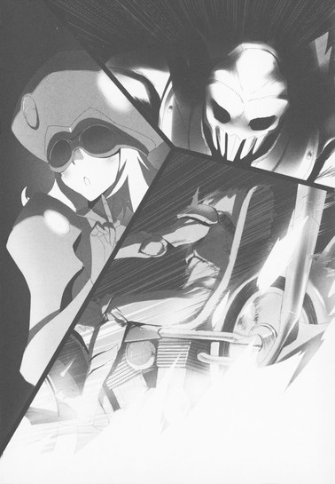
燃え上がりながら惰性でしばらく走り、やがて横倒しになったバイクから、アッシュはよろめきながら数歩離れたが、そこで前のめりに倒れた。爆発属性ダメージをまともに喰らったせいでスタンしてしまったのか、立ち上がる様子はない。体力ゲージは、ハルユキたちと同じく残り一割にまで減っている。
「あ............ああ............」
ここは無制限中立フィールドではなく、通常対戦の一バリエーションたるバトルロイヤル空間だ。ゆえにたとえゲージがゼロになっても、戦績の敗北数が一増え、ポイントが幾らか減るだけで、そのままステージを離脱できる。
それでもなお、ハルユキの口からは悲痛な声が漏れ、両眼には涙が滲んだ。
対戦は、バーストポイントのやり取りが全てではない。手に入れたり、なくしたりする、もっと大きなものがきっとある。先刻ハルユキは、サーベラスに向けてそう言った。
アルゴン・アレイの無慈悲かつ圧倒的な攻撃は、ハルユキやアッシュ、そしてサーベラスから大切なものを奪っていく。そう感じたゆえの涙だ。取り戻したい、立ち向かいたいと思うものの、体が動かない。
ハルユキは、サーベラスを抱えたまま顔を動かし、ビルの上のアルゴンを見た。
〈分析者〉は、もう一度にっこりと笑うと言った。
「しゃーない、今日はこのへんで終わりにしとこか。よかったなぁ、ぼん。ウチに殺されてもポイントたいして減らんから安心してええよ」
ハルユキを照準する帽子のレンズに、紫の光が宿る。それはみるみる明るく、強くなり、やがて一点にフォーカスして────。
きらっ。
と光ったのは、紫のレーザーではなかった。
いずこからか飛来した、青い輝きがアルゴンの左肩を掠めたのだ。二撃、三撃。次々に降り注ぐのはレーザーではなく、氷だ。針のように鋭い尖端を持つ、氷の槍。
発射を中止して回避するアルゴンを、屋上の端にまで追い詰めたところで、槍の投射はようやく止まった。
笑みを消したアルゴンが睨む先を、ハルユキも呆然と追いかけた。青梅街道を挟んだ北側に、同じくらいの高さのビルがある。その屋上、南東の角に立つ五人目のバーストリンカーは、槍よりもいっそう透明なアクア・ブルーをまとっていた。
やはり女性型だが、フォルムは不安定に揺れ動いている。全身を、透明な流動体──つまり水が覆っているからだ。氷雪ステージの冷気ゆえか、水には細かい氷の粒が混じり、それがアバターの全身をダイヤモンドのように煌めかせている。
流線型のフェイスマスクに青白く光る双眸をひたとアルゴン・アレイに据え、謎めいた水のアバターは静かな......それでいて強く響く声で言った。
「レベル１に負けて、たくさんポイントを失うのは、あなた」
ハルユキの記憶の深い、深いところで、さらさらと水の流れる音が聞こえた。
あとがき
川原礫です。アクセル・ワールド12『赤の紋章』をお届けします。
もう本編をお読み下さった方にはサブタイトルの意味するところをご理解頂けたと思いますが、この巻でようやく、実に１巻から延々と引っ張っていた〈黒の王による初代赤の王全損事件〉の詳細を明らかにすることができました。
私には設定を次から次に後付け打法してしまう悪癖がござりますが、この件に関しては珍しく最初期からの構想のままです。いよいよ登場......はしていませんが、名前が出てきた（笑）白の王ホワイト・コスモスに黒雪姫とハルユキがどう立ち向かっていくのか、続巻をお待ち頂ければ！と思います！すなわち今回もまた続いてしまいましたすみません！
さて、今巻ではその他に、前回のあとがきでお知らせした〈アクセル・ワールドアバターコンテスト〉にて採用させて頂いたデュエルアバターの一体〈ショコラ・パペッター〉が登場しております。思ったよりだいぶ重要な役どころになりまして、それは私も嬉しい驚きだったのですが、更に予想外だったのが、担当編集者の三木氏がこのショコラさんにだいぶご執心でして（笑）。「ペロペロシーンをもっと」との指示に、私が「でもこれアバターっすよ！」と言ったら「だからいいんです！」とのお言葉を下さいました。なるほどそうか！と思ったのでいっぱいペロペロしてしまいました。デザインして下さった幾弥なごみさんごめんなさい！そしてありがとうございました！
アバターコンテストについては、二次募集でも更に三名の方の応募作品を原作採用アバターとして発表させて頂いております。そちらも順次登場してきますので（紙幅はそれぞれになってしまうでしょうが......）どうぞお楽しみに！
この本が出る頃にはテレビアニメの放送も佳境に入っていると思いますが、アニメ６話７話で（原作では10巻で）登場した〈四元素〉のアクア・カレントが、今巻でようやくの再登場を遂げてくれました。次巻からはレギュラーとして活躍してくれる予定ですが、ハルユキの周囲にまたしても女性が増えてしまうわけで戦々恐々デスネ！
彼女以外にも、がんがん増えていく新キャラクターを今回も可愛く格好良く描いて下さったイラストのＨＩＭＡさん、事前の打ち合わせとさっぱり違う原稿を読まされまくりな担当の三木さん、ありがとうございました。
13巻は少し間があいてしまう予定ですが、次こそお話も一段落するはずですので、どうぞよろしくお願い致します！
空色の翼
１
世界が、回っている。
まるで黄の王イエロー・レディオの必殺技、〈愚者の回転木馬〉を喰らったかのような酩酊感だが、しかしそんなはずもない。なぜならここは現実世界──高円寺北に建つ高層マンション二十三階、有田家のリビングルームだからだ。
ハルユキの足がふらつき、体が前後に揺れ、視界が左右交互に回転しているのは、決して熱やアルコールや妙なキノコのせいではない。つい十秒前までダイブしていた、黒雪姫お手製のＶＲスペース......コードネーム〈ＺＧ０１〉が、リンクアウトしてからもハルユキの平衡感覚に強烈なる影響を及ぼしているのだ。
「う......ウォエップ......」
ついに口から妙な異音まで漏れ、ハルユキは慌てて両手を押し当てた。しかし、胃がでんぐり返ろうとする感覚は去らない。
「た、耐えろ......、ガマンだハルユキ君！」
そんな声が聞こえ、どうにか視線を向けると、すぐ近くのソファに座る黒雪姫もまた青ざめた顔をふらふら揺らしていた。敬愛する剣の主の目の前で、しかも一時間前に彼女が手ずから麺を茹でてくれた明太子スパゲティをフルリバースするわけにはいかない。立っているから目眩がするのだと考え、自分も座ろうと後退る。
しかし再び体がよろけ、狙ったコースが左後方に三十度ほどずれた。今更軌道修正できるはずもなく、半ば倒れ込むように腰を落とすと──。
革張りソファの硬めの反発力に代わって、ふわんぽわん、というような非常に蠱惑的な感覚がお尻から背中までを包んだ。同時に、耳許で優しい声。
「あらあら、大丈夫ですか、鴉さん？」
何がどうなったんだ、とぐるぐる回る頭でしばし悩んでから悟る。どうやら、ソファではなくこの部屋に存在する三人目の人物の膝に座ってしまったらしい。
「へひっ、ふはっ、すっ、すすすみま......！」
慌てて立ち上がろうとするが、その前にしなやかな腕が後ろから伸びてきて、ハルユキの胸許をきゅっと抱いた。
「いいんですよ、ほーら、気持ち悪いの、飛んでけ～♪」
そんな声とともに胸をナデナデされると、本当に悪心が薄れていくからまったく驚きだ。現実世界で状態異常解除能力が使えるらしい倉崎楓子の膝に乗ったまま、さっきまでとは別種の酩酊感にぽわーとなっていると。
「......いつまでダッコされているつもりだ君は！」
こちらは自力で目眩から回復したらしい黒雪姫が。ガラステーブルからお茶請けのあられを一つ摘み上げるや、ハルユキの額にビシィ！とヘッドショットした。
五分後。
ようやく感覚が元に戻ったハルユキは、おでこを撫でさすりながらため息混じりに言った。
「先輩、せっかく作ってもらったＶＲスペースですけど......ちょっとキツすぎますよ、これ。中に入ってる時も眼が回りますけど、落ちてからこんなに酔うのは想定外です......」
「う、うむ......私も、まさかこれほど来るとは思っていなかった。というか、フーコ、どうしてお前だけ平気なんだ!?」
ハルユキと黒雪姫の視線を同時に浴びた楓子は、澄まし顔で冷茶のグラスに唇をつけてから、にっこり微笑む。
「わたし、昔から乗り物酔いしない質なんです。車の中で２Ｄのレースゲームやってもぜんぜん平気なのよ」
この場合の〈２Ｄ〉は、フルダイブ型ではなく、仮想デスクトップに平面のゲーム窓が開くタイプの、という意味だ。つまり生身の五感はそのまま生きているので、乗っている自動車の加減速や旋回によるＧの変化と、レースゲーム内の車の挙動がまったく一致しないことになる。想像しただけで再びオエップとなりかけるのを堪え、ハルユキは力ない笑みを浮かべた。
「そ、それは凄いですね......。僕もけっこう車酔いには強いほうだと思ってましたけど、今日のこれはギブアップです」
「うふふ、少しずつ慣れていけばいいんですよ、鴉さん。夜はまだまだ長いんですから」
「......ま、まだ続けるおつもり、ですか」
笑顔を強張らせて訊ねると、楓子は当然とばかりに頷き、視線を向かいのソファにぐったり埋まる黒雪姫に向けた。
「もちろんです。せっかくサッちゃんが苦労して作ってくれたんですから......本来起動できないはずの、〈完全無重力ＶＲスペース〉を」
そう、なのである。
黒雪姫お手製のＺＧ０１は、〈ゼロ・グラビティ１号〉の略。数分前まで三人がフルダイブしていたのは、ニューロリンカーメーカー各社の自主規制によってロードが禁止されている、重力感覚を完全にキャンセルした仮想世界だったのだ。
もちろんブレイン・バーストとは無関係のアプリなので、潜っていた時間はたったの十五分。それでもハルユキの平衡感覚は完全に麻痺し、現実に戻ってきた瞬間に猛烈なる重力酔いに襲われた。メーカーが規制するのもむべなるかな、と思える０Ｇ空間を黒雪姫が苦心して作り上げた、その理由のほうはブレイン・バーストと直結している。
なぜなら今、加速世界はひとつの噂で持ちきりだからだ。〈ヘルメス・コード縦走レース〉からぴったり一ヶ月後、来たる七月五日に、通常対戦用の新ステージが実装される──しかもそれは、完全無重力環境の〈宇宙ステージ〉である、という。
「......もし噂がホントなら、０Ｇ感覚に慣れてると慣れてないじゃ大違いですもんね......」
ハルユキは半ば自分に向かって言い聞かせると、ぎゅっと両手を握って続けた。
「僕、がんばります。今夜中に、少なくとも酔わないくらいにはなってみせます！先輩、次行きましょう！」
勢い込んで発した台詞に、しかし黒雪姫はすぐには反応しなかった。もう少しでソファから滑り落ちそうな体勢のまま、無言で眼を閉じ続けている。普段なら、即座に「うむ、その意気だ！」等と言葉を返してくれるシチュエーションなのにどうしたんだろう、とハルユキが中途半端な姿勢で見守っていると──。
数秒後、ようやく瞼が持ち上げられ、黒い瞳が少々だるそうに天井を見つめた。ほんのわずかに動いた唇から、
「......おふろ」
という単語がぽろりと零れる。
「は、はい？」
「おふろ、入る」
上体を不安定に揺らしながら立ち上がる黒雪姫は、梅郷中から有田家へ直行したためにまだ制服姿だ。楓子は一度自宅に寄ってきているはずだが、なぜかこちらも通う高校の制服を着ている。
ふらふらとリビングの隅に移動し、着替えが入っているらしき大型スポーツバッグを持ち上げる黒雪姫に、楓子はやれやれといった感じの微笑を浮かべつつ立ち上がった。
「すみません鴉さん、お風呂、お先に頂きますね。わたしも、ちょっとサッちゃんの面倒を見てきます。あの調子だと、湯船で溺れそう」
「は、はひ？」
硬直したままハルユキはしばし考え、楓子の台詞がつまり〈黒雪姫と一緒に入浴してくる〉という意味だとようやく悟る。お風呂の用意はできているが、使用されるのは無重力訓練が終わってからだろうと思っていたので、少々不意打ちされて思考がついていかない。
「はっ、はひ！ どうぞ、ごごごゆっくり！」
それでもなんとか、ソファの上で上体直立モードに移行し、ハルユキは二人を送り出そうとした。
いまだふらつき気味の黒雪姫を右手で支えつつ、楓子は左手でリビングのドアを開けた──が、そこでくるりと振り向くと、
「どうです？ せっかくですから鴉さんもいっひょに......」
語尾が崩れたのは、さすがのスピードで閃いた黒雪姫の指が、楓子のほっぺたをむぎゅーと摘んだからだ。
「いはい、いはいでふはっひゃん」
笑顔で軽い悲鳴を上げる楓子を逆に引っ張りながら、黒雪姫は廊下へと消えた。こちらに向けてひらひら振られる楓子の左手が引っ込み、ドアがぱたんと閉じられると、ハルユキは詰めていた息を一気に吐き出した。
そのままずるずるソファに沈み込みながら、壁のアナログクロックを見やる。
二本の針は、ようやく二十時を回った位置を示している。六月最後の金曜日だからかどうかは不明だが、母親からは今日は帰らない旨のメールが届いており、つまり夜はまだまだ長いということだ。
いちおう、この集まりの目的は〈宇宙ステージ対策訓練〉なのだから、趣旨から言って他のネガ・ネビュラスメンバー、つまりタクム・チユリ・謡の三人も来ていておかしくない。だが参加しているのは黒雪姫と楓子だけ、しかも両名ともにお泊まりセット完備なことには理由がある。
約一ヶ月前の、ヘルメス・コードでのレース前夜。大雨・落雷・ネットワーク障害等の成り行きから黒雪姫が初めてハルユキの家に泊まっていった、その翌朝のこと。約束の時間よりもかなり早めに、出撃基地となる有田家を訪れた楓子が、ばっちり目撃してしまったのである。ハルユキの部屋からパジャマ姿で出てきて、ふらーと洗面所に消えていく黒雪姫の姿を。
あの時、楓子は二人が交互に説明した〈やむを得ない事情〉を一応は諒としたうえで、レイカースマイルを炸裂させつつ宣言したのだ。『今月中に、わたしもお泊まり会に招待してくださいな。その条件でならば沈黙するにやぶさかではないですよ』と。
ハルユキとしては、それはあくまで冗談か、仮にそうでなくても一ヶ月のうちにウヤムヤになってしまうだろうと思っていた......のだが。先日、加速世界で顔を合わせたおりに、楓子が優しく微笑みながら発した『もうすぐ六月も終わりですよ（はあと）』という言葉にあの宣言が冗談でもなければウヤムヤにもなっていないことを認識させられ、震え上がりつつもう一方の当事者たる黒雪姫に相談、あれこれあって現在に至る──というわけだ。
つまり現在進行中の状況は、三人での〈無重力訓練〉であると同時に、嵐呼ぶ〈お泊まり会〉でもあるのだった。
無論、敬愛するレギオンマスターとサブマスターが遊びに来てくれたのだ、嬉しくないということは断じてない。しかしだからと言って、単純にわーいわーいとはしゃげる余裕もない。なぜなら黒雪姫と楓子は、（これも有り難いことではあるが）両名ともにシルバー・クロウの師であるという強い自負を持っていて、二人揃うと微妙に張り合いつつハルユキを鍛えようとする傾向があるのだ。０Ｇ訓練が一段落してから、ついでに加速世界で一手指導を、などということになったら......いや、おそらく、きっとそうなるはずで......。
「ここで、チユんちあたりに逃げたらどうなるかな......」
ソファの上で体を縮めつつ、ハルユキは呟いた。
二階下に住む倉嶋千百合は、なんだかんだ言いつつもハルユキを匿ってくれそうだが。そんな距離では恐らく黒雪姫＆楓子の超感覚レーダーからは逃れられまい。なら隣の棟のタクムの家......いやいや杉並区の南側にある四埜宮謡の自宅か、いっそ練馬区桜台にある赤のレギオン拠点のケーキショップに............
と、その瞬間。ちろりーん、と軽やかな効果音とともに、ハルユキの仮想デスクトップいっぱいにウインドウが開いた。有田家ホームサーバー経由のライブコールだ。これは全ての部屋に設置されているセキュリティカメラを利用した映像通話システムで、ということはつまり──
「の、のわぁ!?」
視界全体に展開される白（通話先の湯気と泡）及び薄桃色（通話相手の素肌）に、ハルユキは激しく仰け反った。はずみでソファから転げ落ちるが、もちろんウインドウは消えない。
『おいフーコ、天井なんか見て何をしているんだ？』
『ちょっと一件、警告するのを忘れてました』
『警告？ 誰にだ？』
そんなやり取りが、浴室特有の反響音をともなってハルユキの聴覚に響く。声の持ち主......イコール素肌の持ち主が、黒雪姫と楓子であることは最早疑いようもない。
見ちゃダメッ！ と強く眼をつぶり、ついでに両手で瞼を押さえるが、ウインドウが存在するのは仮想デスクトップ──つまり実際にはハルユキの脳内なので、そんなアクションで消えるはずもない。むしろリビングの光景と灯りが遮断され、ライブ映像窓だけがいっそう鮮やかに浮き上がる。
そのウインドウ中央で、ホイップクリームのような泡を体の各所に絶妙な配置でまとった倉崎楓子が、まっすぐカメラを見上げながらにっこり笑い、言った。
『鴉さん、念のために申し上げておきますが......もし、わたしたちが入浴中に逃げ出したりしたらどうなっちゃうか、よぉーく解ってますよね（はあと）』
ははははい、もももちろん解っちゃってます！
と、ハルユキが答えるより早く──。
『な、な、なにいィィィィッ!?』
前世紀の少年コミックのライバルキャラを彷彿とさせる絶叫が、カメラの向こうで響き渡った。
『まままさかフーコ、ハルユキ君とライブ回線が繋がっているんじゃないだろうな!?』
『まあまあ、だいじょうぶですよサッちゃん。わたしは綿密に計算されたアングルと障害物でガードしてますから♪』
その言葉どおり、ウインドウ右側の楓子は、ボディソープの泡と体の角度によって左腕と背中しか映し出されていない。
しかし彼女の前で、どうやら髪を洗ってもらっていたらしい黒雪姫のほうは、さすがは全ポテンシャルを攻撃にのみ注ぎ込む黒の王、実に無防備というかノーガード戦法というか──。
『わ、わ、私はどうなるんだ!!』
喚きながら自分の体を両腕で抱えるが、そのアクションによってただでさえ薄い泡アーマーがいっそう弱体化し、ハルユキとしては先輩ダメです僕たちまだ中学生！と脳内で唱えつつ顔を逸らそうとするものの当然ウインドウも追随してくるのでその努力は意味がなく眼をふさいでいる手で回線切断もしくはウインドウを最小化すればいいのだという単純な理屈にもなぜか気づけず──。
『......セアッ！』
突然、ブラック・ロータスの突き技の如く黒雪姫の右手が閃き、放たれた泡の塊が浴室天井のカメラを分厚く覆った。
白一色に染まってしまったウインドウを、「嗚呼」と思いながら凝視するハルユキの耳に、レギオンマスターの声が届いた。
『......ハルユキ君』
『............は、ハイ』
恐る恐る答えると、いっそ優しいとすら思える口調で──。
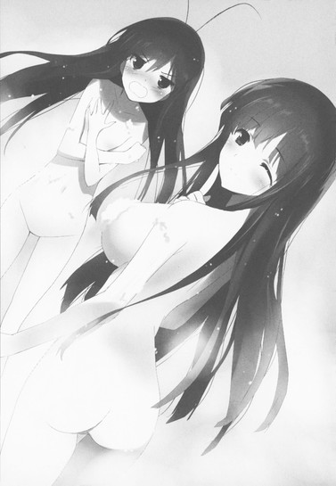
『我々がお風呂から上がるまでに、直結用ケーブル三本と緊急切断用ハブを用意しておいてくれたまえ。どうやら、夜の特訓は長くなりそうだからな』
緊急切断に備えるということはつまり、通常対戦フィールドではなく無制限中立フィールドにダイブするということだ。その場合、〈長くなる〉という言葉は実に恐るべき意味を持つ。たとえるならば、宇宙もののＳＦで、超光速船に乗り込むクルーが故郷の星を見ながら『今度の旅は長くなるな......』と呟くような。
『な......長いというと、どれくらい......』
往生際悪く訊ねたハルユキに、黒雪姫はさらりと答えた。
『キミが今のライブ映像を完全に忘れ去るほど長く、だ』
２
バスタオルを髪にあてながらリビングに戻ってきた黒雪姫は、ガラステーブル上に用意されている三本のＸＳＢケーブルと小型のハブ、そしてハルユキがうやうやしく差し出すミネラルウォーターのグラスを順に見ると、「うむ」と頷いた。
グラスを受け取り、氷を軽やかに鳴らしながら飲み干す。その前で直立不動を保ちながらも、ハルユキはつい湯上がりのレギオンマスターにちらちらと視線を送ってしまう。
ウォームグレーのパジャマは、一ヶ月前の突発的お泊まりの日にマンション付属のショッピングモールで購入したものだ。当時は「黒がなかった」と不満を口にしていたのに、今日もあえてこれを持参したらしい。上は半袖、下は膝丈なので桜色に上気した肌がパジャマの灰色と鮮やかすぎるコントラストを作っている。
......という思考がトリガーとなったか、脳裏に先刻のライブ映像がほわーんほわーんと再生されかけた瞬間。黒雪姫が、氷だけが残るグラスをハルユキのほっぺたに押しつけた。
「ぴああっ!?」
飛び上がるハルユキを、更に必殺の〈極冷気クロユキスマイル〉が直撃する。
「早く忘れるべきものを忘れないと、無制限フィールドへのダイブ時間が延びる一方だぞ、ハルユキ君？」
「え、ええと、０Ｇ訓練のほうはもういいんですか......？」
「あれは酔うから......じゃなく、背景のテクスチャが気に入らないからまた今度だ。それとも何か、無重力空間で記憶を固定しようとでもいうのか？」
「いっ、いえまさかそんな！ 全部忘れます、ていうかもう忘れました、完璧忘れました！」
と、両手と顔を反転水平往復運動させながら叫んだ、その途端。
「あら、そうなんですか、鴉さん？それはつまり、わたしの心を込めた忠告も忘れてしまったということですか？」
今度はそんな声がリビングに響き、ハルユキはぎしっと全身を硬直させる。黒雪姫の背後から遅れて現れた楓子の〈真空破レイカースマイル〉に向けて、必死に言い募る。
「い、いいいえ、忘れてません！ 憶えてます、完璧憶えてます！」
「......なんだと？ 今のひとことで、特訓が一ヶ月延長されるぞ？」
「ち、ちちちが、憶えてませ......いえ、忘れ......じゃなくて、そのぉ......」
両手をわたわたさせながら、〈大動転ハルユキパニック〉をしばし披露していると──。
年上の女性二人は、突然小さく吹き出すと、次いで朗らかに笑い始めた。もはやそれに対してリアクションもできず、ひたすらフリーズするしかないハルユキだった。
五分後。
巨大すぎる精神的負荷の反動で虚脱状態に陥ったハルユキは、黒雪姫の髪にドライヤーを当てる楓子の手さばきを、少し離れたカーペットの上からぼんやり眺めていた。
黒雪姫の寝巻きがシンプルな灰色のパジャマなのに対して、楓子のそれは薄水色のひらひらしたネグリジェだ。ソファに横座りになっているので、レースのついた裾から形のいい脚が六十五パーセントほど露出している。平常時ならとても視線を向けていられないが、今は思考停止状態だからきっと大丈夫と思考しつつ、この上なく美しい情景を拝観していると──。
「............あっ......」
あることに気付き、小さな声が口から零れた。
今度こそ、慌てて眼を逸らす。もう顔を上げられずに、そのまま深く俯く。見てはならないものを見たからではなく、その逆だ。楓子を見る時、普段は必ず眼に入るものが、今はない。彼女のトレードマークである、オーバーニータイツ──。
「いいんですよ、鴉さん」
不意にそんな声が聞こえ、ハルユキはぴくりと体を揺らした。だが、顔を持ち上げることはできない。
「で、でも......」
俯いたまま、どうにかそれだけ口にすると、すぐに穏やかな言葉が返った。
「今日は最初から、鴉さんに見てほしいと思っていたんです。だから、さあ、顔を上げてください」
「..................」
尚も数秒間ためらってから、ハルユキはおずおずと視線を動かし始めた。カーペットのストライプ柄をなぞり、ソファの角に辿り着くと左へ。やがて視界に、真っ白い二本の素足が捉えられる。指先で艶やかに光る爪にも、わずかに浮き出た中足骨のラインにも違和感は皆無だが──しかしこの足は、ハルユキや黒雪姫のそれとは構造を異にする。金属と生体親和性ナノポリマーを素材とする人造物、つまり義足なのだ。
脚からネグリジェをさかのぼり、ようやくもう一度眼を合わせたハルユキを、楓子はこの上なく優しい微笑で迎えた。
「もっと近くに来てくださいな」
楓子に髪をブラッシングされている黒雪姫も、いつになく温かな笑みでハルユキを促す。
意を決し、カーペットから腰を上げたハルユキは、四つん這いで二人のすぐ前まで移動した。再びぺたんと床に座ると、楓子も手を止め、ソファの上でまっすぐ座り直す。その動作と同時に、普段はほとんど気付けないほどのささやかな駆動音がハルユキの耳に届く。
「......出力の八割ほどは人工筋繊維でカバーしているんですが、それだけだと微妙なコントロールが難しいので、現状ではまだ関節部のサーボモーターが必要なんですよね......」
そんな言葉とともに、指先がそっと膝のあたりを撫でた。
よく見ると、丸い膝蓋骨の五センチほど上を、ごく薄いラインが環状に走っている。それ以外は、ほんとうに生身の脚とまったく見分けがつかない。普段はオーバーニータイツに覆われているそのラインが生体と義足の接合部なのだろうが、肌の色や微妙な陰影の連続性は、線の上側が生身で下側が機械だとは到底思えない精度だ。
「......すごい、です。なんだか......芸術品みたいです......。──その、こんなにきれいなら、タイツを穿く必要もないんじゃないかって......思うんですけど......」
ハルユキがそう呟くと、楓子がくすりと笑い、指先で接合線から上の大腿部をなぞった。
「わたしがオーバーニータイツを穿いている理由は、義足を隠すためではなくて、人工皮膚を保護するためなんです。実は、このラインから上に十五センチくらいまでも、厳密には生体ではないんですよ」
「えっ......？」
「ナノポリマー皮膚で覆われたアタッチメント・ソケットが、わたしの本来の脚を包み込んでいるんです。皮膚細胞レベルでは融合しているので、アタッチメント部を取り外すことは、もうわたし自身にもできません」
「本来の......脚」
小声で繰り返すハルユキに、楓子はゆっくり頷きかける。
「以前にも少しお話ししましたが、わたしの下肢欠損は事故や病気によるものではなく、先天的な染色体異常が原因です。つまり、妊振のかなり初期に、両親には胎児の障害が告知されていたはずなのです」
そう語る年上の女性の表情は、いつもとまったく変わらないように思えるが、語尾がほんの一瞬だけ震えた。並んで座る黒雪姫が十センチほど横に動き、体をぴったり密着させると、左手を楓子の右膝に置く。
その接触に励まされたように、楓子は再び話し始めた。
「......下肢の欠損は、普通ならば中絶を考えてしかるべき障害です。わたしがこの世に生を受けない可能性は充分にあった......実際、当時の両親も大いに悩んだようですし。それを考えれば、わたしは産んでもらえたことに感謝するべきなのでしょう。でも......ずっと幼い頃から、十六歳になる今年まで、わたしの心には両親を恨む気持ちが小さなトゲのように刺さり続けていたのです。なぜ......どうしてわたしを産んだのか、と......」
「..................」
何を言うべきなのかすぐには思いつけず、ハルユキはカーペットに正座したまま、ぎゅっと両手を握り締めた。
全てのバーストリンカーは、心の深い所にそれぞれの〈傷〉を抱いている。ブレイン・バースト・プログラムは、その傷を鋳型としてデュエルアバターを生み出すので、アバターの姿や能力には、程度の差はあるにせよ傷の有りようが不可避的に反映される。
楓子の分身スカイ・レイカー最大の特徴は、優美な女性型デュエルアバター本体ではなく、生まれ持った強化外装〈ゲイルスラスター〉だ。背中に装着される流線型のロケット・ブースターで、一回の噴射時間は短いものの、その推力はシルバー・クロウの飛行アビリティをも圧倒する。
かつて楓子は、ゲイルスラスターを〈不完全な翼〉と表現した。空を望むその一方で、空に至ることを怖れる気持ちが、三百五十メートルという絶対高度限界を自ら生み出してしまったのだ、と。
しかし、そうではなかった。そのことをハルユキと楓子は、ヘルメス・コード縦走レースの最終盤、二人きりで訪れた軌道エレベータの頂点で知った。ゲイルスラスターは......いやスカイ・レイカーというデュエルアバターは、そもそも重力に縛られた地表を飛ぶために生まれたのではなく......。
「──でもね、そのトゲを、鴉さん......あなたが抜いてくれたんですよ」
物思いに沈むハルユキの耳に、そんな言葉がふわりと届いた。
サーボモーターから軽やかな駆動音が発せられ、楓子はソファから降りるとハルユキの前に膝を突いた。生身の脚と何ら変わらぬ滑らかさで正座に移行し、左手を伸ばす。握り締められたハルユキの拳を、柔らかな掌が優しく包む。
「ヘルメス・コードでのレースの最後に、あなたがわたしに言ってくれた言葉......『スカイ・レイカーは本来、宇宙戦用デュエルアバターなんです』というあの言葉で、わたしはようやく大切なことに気づけました。それは......健常者の半分以下の長さしかない脚を持って生まれたことにも、意味があったんじゃないか、ということ」
「意味......」
「ええ」
楓子は頷き、いつしか緩んだハルユキの拳から左手を離すと、掌で自分の脚に触れた。
「わたしはきっと心の奥......自分でも気付けないほど深いところで、ずっと求め続けていたんです。この脚であることが自然な世界を。それは......」
「......無重力環境......？」
無意識のうちに楓子の言葉を引き取り、ハルユキはそう口にしていた。目の前にある優しい微笑が、ゆっくり上下する。
「長いこと忘れていましたが、まだ小学校低学年の頃......バーストリンカーになる前に、わたし、近くの図書館で小さな紙媒体の本を読んだんです。大人向けのＳＦだったので漢字や用語が難しくて苦労しましたが、ニューロリンカーのＡＲふりがな機能も使って、頑張って読み進めました。なぜなら、その本は......無重力環境に適応するために、遺伝子改良で脚の代わりに腕を与えられた子供たちの物語だったんです。まるで自分が彼らの一員であるように思えて、いつしか夢中になっていたんですが......」
そこで楓子の笑みが、少し悲しそうなものに変わった。
「その本は前世紀に発行された、もの凄く古いもので、まだ年齢規制チップが埋め込まれていなかったんですね。だからわたしにも閲覧できたんですが、実は十五歳未満禁止指定されていて、途中で司書さんに見つかって取り上げられてしまったんです。どうしても続きが読みたくて、親に頼んでデジタル媒体版を買ってもらおうとしたんですがそもそも売っていなくて......ＰＭ版もそのうち図書館から撤去されてしまって、ついに二度と読むことはできませんでした」
膝の上で、白い指が紙のページをなぞるようにそっと動く。
ハルユキの感覚では、あらゆる小説やマンガ、アニメ等の作品はデータとしてネットワークに遍在するものだ。〈見失ってしまって二度と読めない本〉を想像することは離しいが、それでも楓子の感じている寂しさや懐かしさはなぜか理解できる気がした。
顔を上げた楓子は、小さく頷き、言葉を続けた。
「......もちろんとても悲しかったですが、子供でしたから、やがて本のことを忘れてしまって、いまではタイトルも著者も思い出せません。でも......胸の中にはずっと、自分もいつか無重力の世界に行きたいという願望が残っていたんでしょうね。その後、バーストリンカーとなった時、プログラムはわたし自身さえ忘れていた傷と願いを鋳型とし、スカイ・レイカーとゲイルスラスターを生み出したのです」
言葉を切り、楓子はソファに残るレギオンマスターを振り返った。パジャマ姿の黒雪姫は、静謐な表情を湛えてじっと親友を見つめていたが、やがて音もなく立ち上がると、楓子の左隣に寄り添うように座った。
楓子はしばし口をつぐみ続けてから、トーンをわずかに低めた声で再開した。
「......ですがわたしは、本当の願いを忘れてしまっていたがゆえに、加速世界に於いて目指すべきものも、自ら矮小化させてしまった。アバターが象徴する場所が、〈空〉ではなくその先の〈宇宙〉なのだともっと早く気付いていれば......いつか訪れるであろう〈宇宙ステージ〉の存在を信じて待ち続けることができれば、サッちゃんを悲しませることも、レギオン崩壊のきっかけを作ってしまうこともなかったはず......」
「それは違うぞ、フーコ」
不意に黒雪姫が両手を伸ばし、自分より一つ年上の女性を軽く抱き締めて遮った。
「咎と言うならば、それはフーコがずっと押し殺してきた思いの強さを理解しようとしなかった私や全レギオンメンバーにもある。重力の軛から解き放たれんがためにレベル８に達し、それでもなお天に触れることの叶わなかったお前が、アバターの脚すら捨て去ろうとしたことを私は理解し受け入れるべきだった。だがそうせず、代わりにお前を諫めようとした......お前の戦闘力が減じることを惜しむあまりに。自分こそ、〈レベル10〉などという独善的極まる望みをレギオンの皆に押しつけていたというのにな......」
ハルユキは当時まだネガ・ネビュラスの一員、というよりバーストリンカーですらなかったので事情の詳細は推測するしかない。しかし、これまで断片的に得た情報によって、少なくとも事実面だけは把握しているつもりだ。
今から約二年半前──二〇四四年の冬に、第一期ネガ・ネビュラスは壊滅した。
その悲劇に至る経緯は、複雑に絡み合っている。黒雪姫が、楓子の頼みを受け入れてスカイ・レイカーの両足を己が剣で切断したこと。直後に開かれた〈七王会議〉で、相互不可侵条約の必要性を訴える初代赤の王レッド・ライダーの首を落としたこと。更にその後、レギオン全員で、〈四神〉によって絶対的に防御された〈帝城〉攻略に挑んだこと──。これらは皆、無関係の出来事ではない。
恐らく、最初の引き金を引いたのが自分だという意識があったせいで、楓子は第二期ネガ・ネビュラスに復帰したあともしばらくアバターの両脚を喪失したままだった。本来ならば、対戦が終わった瞬間に治癒するはずの部位欠損ダメージを恒常化させたのは、自分には脚を取り戻す資格がないと思い詰めた楓子の〈負の心意〉だ。言い換えれば、それは自らにかけた呪いにも等しい。
しかし、ヘルメス・コードのレースに於いて、ついに辿り着いた星の海をゲイルスラスターで飛翔した時、彼女は自分の脚を取り戻した。二年以上......加速世界での時間を入れればその数倍にも及ぶ時間、楓子を縛り続けた呪いは解かれたのだ。だから......
「......なくしたものは、少しずつ取り戻していけばいいんです」
ハルユキは、我知らずそんなふうに呟いていた。
楓子と黒雪姫の視線を受け、普段なら萎縮しまくりで何も言えなくなってしまうシーンだが、今だけは懸命に思いを言葉に変えていく。
「迷って、なくして、間違えても......少し後ろに戻れば、見失ったものはきっとまた見つかります。そしたら、またそこから歩き出せばいい......だって、師匠も、四埜宮さんも、ちゃんとレギオンに戻ってきてくれたんですから。〈四元素〉の残りお二方も、それ以外のレギオンメンバーも、きっともうすぐ先輩のところに帰ってきます。僕、そう思います......」
決して長いとは言えない台詞だが、そこでなけなしの言語化エンジンがオーバーヒートし、ハルユキは俯きつつ口を閉じた。しかし何秒待っても二人からのリアクションはなく、これはまた何か間違ってしまったのか、ゴメンナサイダッシュでトイレあたりに逃走すべきかと考えていると──。
「......まったく、鴉さんは年下のくせに時々お姉さんをじんわりさせるからズルイですよ」
そんな言葉が聞こえ、オネーサン!? と内心泡を食いつつそろそろと視線を持ち上げる。
ちょうど、楓子が目尻に当てていた指を下ろしたところだった。表情はあっという間にいつものレイカースマイルに戻り、続けてなぜか正座していた脚を崩すと、ハルユキの目の前までまっすぐ伸ばす。
ネグリジェの裾からすらりと伸びる両脚の白さと、
「ごほーびに、少しなら触ってみてもいいですよ（はあと）」
──という台詞の超破壊力に、ハルユキの思考能力は呆気なく崩壊した。
状況の不自然さにも、黒雪姫のじとっとした視線にも気付けずに、「は、はひ」と右手の指をそろそろ前進させる。
驚くほど細い足首の、少し上に指先が接触した瞬間、ハルユキは息を詰めた。ナノポリマーの圧倒的に滑らかな質感もさることながら、仄かな温かみに驚かされる。考えてみれば、内部でバッテリーの電力が熱に変換され続けているのだから当然かもしれないが、その〈体温〉はとうてい義肢のものとは思えない。
そろそろと指を上昇させていく。ポリマー皮膚に覆われた人工筋繊維の作り出す弾力も実に自然で、ハルユキのぷよぷよ足よりも遥かに〈鍛えられた筋肉〉のしなやかさを備えている。すねから膝への接合部は、多くのモーターやギア、ダンパーが組み合わされているらしく、ここだけは少々メカニカルな感触だ。
指先が膝裏に回り込んだ途端、楓子が「ん」と小さな声を漏らしつつ脚をわずかに動かしたので、ハルユキは驚いて掠れ声で訊ねた。
「あ、あの......感覚が、あるんですか？」
「ええ、と言ってもおおまかな圧迫感程度なんですけどね。皮膚感覚センサー素子はまだまだ研究途上の技術ですから。でも、そんなふうにそうっと触られると、少しくすぐったい感じもあります」
「す、すみません」
慌てて謝罪し、手を離そうとする。しかし楓子がその手を押さえ、にこっと笑って言った。
「大丈夫ですよ。鴉さんには、わたしの脚のことをちゃんと知っておいて欲しいんです。どうぞ、続けてくださいな」
「......は、はい......」
言われるがまま、ハルユキは指先を人工の肌へと戻した。
膝裏から、丸い膝蓋骨の上部を回り込み、うっすらとした接合線へと至る。ここから下は完全なる人工義肢だが、楓子が言うには上もソケットを兼ねた接合アタッチメントになっていて、しかもナノポリマー皮膚と本来の皮膚は細胞レベルで融合しているらしい。
しかし、いったいどこまでがポリマーなのか、見た目ではまったく解らない。最先端サイバネティクス技術の高度さに感嘆しながら、すらりと細い大腿部をゆっくりなぞっていく。接合ラインから五センチ、十センチ......十五センチ上の、ネグリジェの裾からかなり近いあたりまで上昇した瞬間──
「あっ......」
というかすかな声とともに、再び脚全体がぴくりと伸縮した。
「そ、そのへんからわたし本来の皮膚です。やっぱり、人体本来のセンサーは凄いですね......接触感がぜんぜん違います......」
「え......こ、ここが境界なんですか？ 感覚も見た目でもまったく解らないですよ、ほんとに融合してるんですね......」
「んっ、か、鴉さん、そんなに触るとくすぐった......」
ぎにゅうううう！
という感覚がいきなり左頬を襲い、ハルユキは楓子の脚から指を離すと飛び上がった。
「い、いへへへはははふ！」
「い・つ・ま・で・やってるんだキミは!!」
と叫ぶのはもちろん、右手でハルユキのほっぺたを思い切り引っ張る黒雪姫だ。
「普通ちょっとつっつくくらいでやめるだろう！というかフーコもフーコだ、どうして脚に触るのがごほうびなんだ!?」
「あら、だって赤のレギオンのパドが教えてくれたんですもの。鴉さんはどうやら脚にヨワイらしいって」
「......何だと？」
と黒雪姫が剣呑な声を出すと同時に、ハルユキは左頬を摘まれたまま軽く飛び上がる。
「なっ、ちっ、違いまふよ！ 僕は決ひて脚フェチとかそーゆーんじゃないでふ！」
「情報の真偽はさておき、なぜブラッド・レパードがそんなことを知っているんだ!?」
「しっ、し、知りまへんよ！ パドさんには、バイクの後ろやアバターの背中に乗っけてもらっただけで」
と、無我夢中で抗弁した瞬間、黒雪姫のみならず楓子の眼までもじっとり冷たくなる。しまった、と思う暇もあらばこそ──
「そういえばフーコ、我々にはまだやらねばならんことがあったな」
「そうねサッちゃん、鴉さんを無制限フィールドで特訓する任務を忘れていたわね」
両側からがしっとホールドされ、そのままずるずるとガラステーブルまで引き摺られるハルユキ。
「あ、あの、もう遅いですし、明日も学校が」
「問題ない、宿題はとっくに終わらせただろう」
「で、でも、宇宙ステージ用の特訓もしないと」
「気にするな、そんなものは後でいくらでもできる」
「け、けど、そろそろ寝る時間......」
「大丈夫だハルユキ君、無制限中立フィールドの夜は長い」
そう言うや否や、黒雪姫がハルユキのニューロリンカーにケーブルを挿入。残り二本もそれぞれのリンカーに手早く接続され、卓上のハブにインジケータが三つ点灯する。
「では、カウント５で行きましょう。鴉さん、一分遅れるごとに特訓メニューがレベルアップしますからね（はあと）」
と、楓子に先刻よりも更に優しい笑顔で告げられれば、自分ひとりコマンドを唱えずに逃走。するわけにもいかない。
だらだら脂汗を流すハルユキを左右から確保したまま、レギオンマスターとサブマスターは声を揃えてカウントを開始した。
「５、４、３、２、１......」
「「「アンリミテッド・バースト！」」」
タイミングを合わせて叫びながら、ハルユキは思っていた。
──早く〈宇宙〉ステージが実装されればいいのに。そうしたら、師匠とタッグを組んで、ゲイルスラスターの推進力とシルバー・クロウの旋回力のコンボで勝ちまくるんだ。もう誰にも、師匠を〈イカロス〉とは呼ばせない。だって、師匠の......スカイ・レイカーの、空色にきらめく翼は、ついに届いたんだから。
誰よりも望んだ、星の世界に──。
底本：アクセル・ワールド12 ─赤の紋章─
川原 礫
二〇一二年八月十日 初版発行